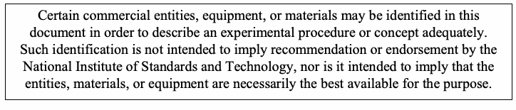
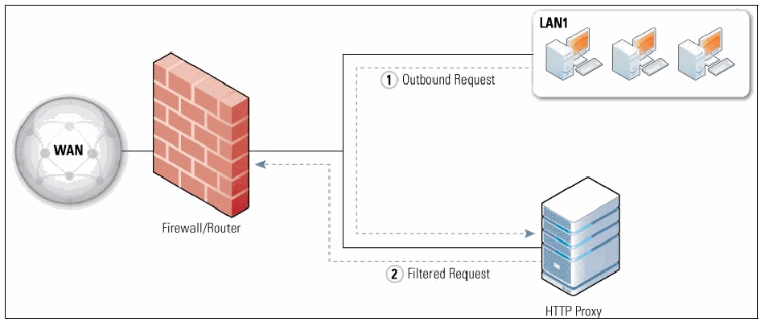
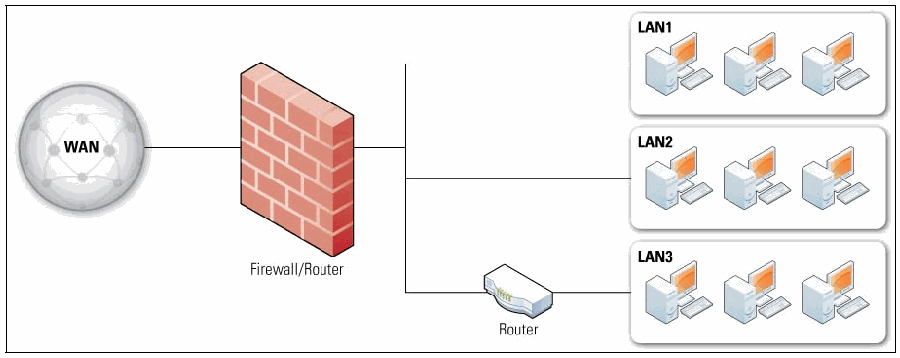
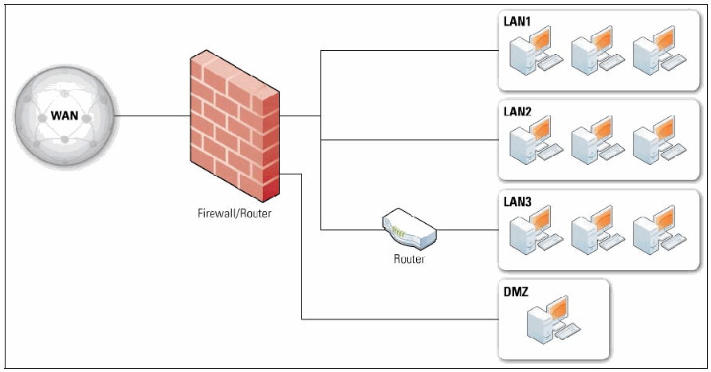

NIST SP 800-41 Rev. 1 日本語訳
英語タイトル : Guidelines on Firewalls and Firewall Policy日本語タイトル : ファイアウォールおよびファイアウォールポリシーに関するガイドライン
公開日 : 2009-09-28
原文URL : https://csrc.nist.gov/pubs/sp/800/41/r1/final
翻訳編集 : 自動生成
[要約] SP 800-41 Rev. 1 は、ファイアウォール技術とファイアウォールポリシーの機能を組織が理解できるよう、実践的な指針を示す文書です。ファイアウォール技術の概要、ネットワークアーキテクチャとの関係、ファイアウォールポリシーを扱い、さらにファイアウォールの計画と実装の進め方を説明します。ファイアウォールの設計、選定、導入、管理を担当するネットワーク、セキュリティ、システムのエンジニアや管理者などの技術系IT担当者を主な対象としています。
有志による非公式の日本語訳です。NIST および米国商務省が作成・承認・推奨したものではありません。要件の確認にはNIST の正式版 PDFを参照してください。
［NIST のロゴ。公的な標章のため、この非公式サイトには掲載していない。原本 PDF を参照。］
Special Publication 800-41 Revision 1
特別刊行物800-41 改訂第1版
Guidelines on Firewalls and Firewall Policy
ファイアウォールおよびファイアウォールポリシーに関するガイドライン
Recommendations of the National Institute of Standards and Technology
国立標準技術研究所の勧告
Karen Scarfone Paul Hoffman
Karen Scarfone、Paul Hoffman
NIST Special Publication 800-41 Revision 1
NIST Special Publication 800-41 Revision 1
Guidelines on Firewalls and Firewall Policy
ファイアウォールおよびファイアウォールポリシーに関するガイドライン
Recommendations of the National Institute of Standards and Technology
米国国立標準技術研究所の勧告
Karen Scarfone Paul Hoffman
Karen Scarfone Paul Hoffman
Computer Security Division Information Technology Laboratory National Institute of Standards and Technology Gaithersburg, MD 20899-8930
コンピュータセキュリティ部門 情報技術研究所 米国国立標準技術研究所 Gaithersburg, MD 20899-8930
September 2009
2009年9月
U.S. Department of Commerce
米国商務省
Gary Locke, Secretary
長官 Gary Locke
National Institute of Standards and Technology
米国国立標準技術研究所
Patrick D. Gallagher, Deputy Director
副所長 Patrick D. Gallagher
Reports on Computer Systems Technology
コンピュータシステム技術に関する報告書
The Information Technology Laboratory (ITL) at the National Institute of Standards and Technology (NIST) promotes the U.S. economy and public welfare by providing technical leadership for the nation’s measurement and standards infrastructure. ITL develops tests, test methods, reference data, proof of concept implementations, and technical analysis to advance the development and productive use of information technology. ITL’s responsibilities include the development of technical, physical, administrative, and management standards and guidelines for the cost-effective security and privacy of sensitive unclassified information in Federal computer systems. This Special Publication 800-series reports on ITL’s research, guidance, and outreach efforts in computer security and its collaborative activities with industry, government, and academic organizations.
国立標準技術研究所（NIST）の情報技術研究所（ITL）は、米国の計量・標準インフラに技術的リーダーシップを提供することにより、米国経済と公共の福祉を促進する。ITLは、情報技術の発展と生産的な利用を推進するため、試験、試験方法、参照データ、概念実証実装、および技術分析を開発する。ITLの責務には、連邦政府のコンピュータシステムにおける機密扱いではない機微な情報の費用対効果の高いセキュリティおよびプライバシーを確保するための、技術的、物理的、行政的、および管理的な標準とガイドラインの策定が含まれる。この特別刊行物800シリーズは、コンピュータセキュリティに関するITLの研究、ガイダンス、普及活動、および産業界、政府、学術機関との協力活動を報告する。
National Institute of Standards and Technology Special Publication 800-41 Revision 1 Natl. Inst. Stand. Technol. Spec. Publ. 800-41 rev1, 48 pages (Sep. 2009)
国立標準技術研究所 特別刊行物800-41 改訂第1版 Natl. Inst. Stand. Technol. Spec. Publ. 800-41 rev1、48ページ（2009年9月）
Certain commercial entities, equipment, or materials may be identified in this document in order to describe an experimental procedure or concept adequately. Such identification is not intended to imply recommendation or endorsement by the National Institute of Standards and Technology, nor is it intended to imply that the entities, materials, or equipment are necessarily the best available for the purpose.
原本PDFの抜粋画像

実験手順または概念を適切に説明するため、本書では特定の商業的な事業体、機器、または素材を識別する場合がある。そのような識別は、国立標準技術研究所による推奨または保証を意味するものではなく、また、当該事業体、素材、または機器が目的に対して必ずしも最良の入手可能なものであることを意味するものでもない。
Acknowledgments
謝辞
The authors, Karen Scarfone of the National Institute of Standards and Technology (NIST) and Paul Hoffman of the Virtual Private Network Consortium, wish to thank their colleagues who reviewed drafts of this document and contributed to its technical content. The authors would like to acknowledge Tim Grance, Murugiah Souppaya, Sheila Frankel, and Gale Richter of NIST, and Matthew Goche, David Klug, Logan Lodge, John Pearce, Noel Richards, Anne Roudabush, and Steven Sharma of Booz Allen Hamilton, for their keen and insightful assistance throughout the development of the document. Special thanks go to Brahim Asfahani of Booz Allen Hamilton for his contributions to early drafts of the document. The authors also thank all the reviewers who provided feedback during the public comment period, particularly Joel Snyder (Opus One), Ron Colvin (National Aeronautics and Space Administration [NASA]), Dean Farrington (Wells Fargo), Raffael Marty (Splunk), and David Newman (Network Test).
著者である国立標準技術研究所（NIST）のKaren ScarfoneおよびVirtual Private Network ConsortiumのPaul Hoffmanは、本書の草案を査読し、技術的内容に貢献した同僚に感謝する。著者は、本書の策定を通じて鋭く洞察に富む支援を提供したNISTのTim Grance、Murugiah Souppaya、Sheila Frankel、Gale Richter、およびBooz Allen HamiltonのMatthew Goche、David Klug、Logan Lodge、John Pearce、Noel Richards、Anne Roudabush、Steven Sharmaに謝意を表する。特に、初期草案への貢献に対し、Booz Allen HamiltonのBrahim Asfahaniに感謝する。また、公開意見募集期間中に意見を寄せたすべての査読者、特にJoel Snyder（Opus One）、Ron Colvin（米国航空宇宙局 [NASA]）、Dean Farrington（Wells Fargo）、Raffael Marty（Splunk）、David Newman（Network Test）にも感謝する。
The authors also wish to express their thanks to the individuals and organizations that contributed to the original version of the publication, including John Wack of NIST and Ken Cutler and Jamie Pole of the MIS Training Institute, who authored the original version, and other contributors and reviewers— particularly Peter Batista and Wayne Bavry (U.S. Treasury); Harriet Feldman (Integrated Computer Engineering, Inc.); Rex Sanders (U.S. Geological Survey); and Timothy Grance, D. Richard Kuhn, Peter Mell, Gale Richter, and Murugiah Souppaya (NIST).
著者はまた、本刊行物の初版に貢献した個人および組織にも謝意を表する。これには、初版の執筆者であるNISTのJohn Wack、ならびにMIS Training InstituteのKen CutlerおよびJamie Pole、さらにその他の貢献者および査読者、特にPeter Batista、Wayne Bavry（米国財務省）、Harriet Feldman（Integrated Computer Engineering, Inc.）、Rex Sanders（米国地質調査所）、Timothy Grance、D. Richard Kuhn、Peter Mell、Gale Richter、Murugiah Souppaya（NIST）が含まれる。
Table of Contents
目次
Executive Summary..............................................................................................................ES-1
エグゼクティブサマリー..............................................................................................................ES-1
1. Introduction ......................................................................................................................1-1
1. はじめに ......................................................................................................................1-1
1.1 Authority...................................................................................................................1-1
1.1 権限...................................................................................................................1-1
1.2 Purpose and Scope .................................................................................................1-1
1.2 目的および適用範囲 .................................................................................................1-1
1.3 Audience..................................................................................................................1-1
1.3 対象読者..................................................................................................................1-1
1.4 Document Structure.................................................................................................1-1
1.4 文書の構成.................................................................................................1-1
2. Overview of Firewall Technologies ................................................................................2-1
2. ファイアウォール技術の概要 ................................................................................2-1
2.1 Firewall Technologies ..............................................................................................2-2
2.1 ファイアウォール技術 ..............................................................................................2-2
2.1.1 Packet Filtering.............................................................................................2-2
2.1.1 パケットフィルタリング.............................................................................................2-2
2.1.2 Stateful Inspection........................................................................................2-4
2.1.2 ステートフルインスペクション........................................................................................2-4
2.1.3 Application Firewalls.....................................................................................2-5
2.1.3 アプリケーションファイアウォール.....................................................................................2-5
2.1.4 Application-Proxy Gateways.........................................................................2-6
2.1.4 アプリケーションプロキシゲートウェイ.........................................................................2-6
2.1.5 Dedicated Proxy Servers..............................................................................2-6
2.1.5 専用プロキシサーバー..............................................................................2-6
2.1.6 Virtual Private Networking ............................................................................2-7
2.1.6 仮想プライベートネットワーキング ............................................................................2-7
2.1.7 Network Access Control ...............................................................................2-8
2.1.7 ネットワークアクセス制御 ...............................................................................2-8
2.1.8 Unified Threat Management (UTM)..............................................................2-9
2.1.8 統合脅威管理（UTM）..............................................................2-9
2.1.9 Web Application Firewalls ............................................................................2-9
2.1.9 Webアプリケーションファイアウォール ............................................................................2-9
2.1.10 Firewalls for Virtual Infrastructures...............................................................2-9
2.1.10 仮想インフラストラクチャ向けファイアウォール...............................................................2-9
2.2 Firewalls for Individual Hosts and Home Networks................................................2-10
2.2 個別ホストおよびホームネットワーク向けファイアウォール................................................2-10
2.2.1 Host-Based Firewalls and Personal Firewalls ............................................2-10
2.2.1 ホストベースファイアウォールおよびパーソナルファイアウォール ............................................2-10
2.2.2 Personal Firewall Appliances .....................................................................2-11
2.2.2 パーソナルファイアウォール装置 .....................................................................2-11
2.3 Limitations of Firewall Inspection ...........................................................................2-11
2.3 ファイアウォール検査の限界 ...........................................................................2-11
2.4 Summary of Recommendations.............................................................................2-12
2.4 勧告の要約.............................................................................2-12
3. Firewalls and Network Architectures.............................................................................3-1
3. ファイアウォールとネットワークアーキテクチャ.............................................................................3-1
3.1 Network Layouts with Firewalls................................................................................3-1
3.1 ファイアウォールを用いたネットワーク構成................................................................................3-1
3.2 Firewalls Acting as Network Address Translators....................................................3-3
3.2 ネットワークアドレス変換を行うファイアウォール....................................................3-3
3.3 Architecture with Multiple Layers of Firewalls ..........................................................3-4
3.3 複数層のファイアウォールを用いるアーキテクチャ ..........................................................3-4
3.4 Summary of Recommendations...............................................................................3-4
3.4 勧告の要約...............................................................................3-4
4. Firewall Policy ..................................................................................................................4-1
4. ファイアウォールポリシー ..................................................................................................................4-1
4.1 Policies Based on IP Addresses and Protocols .......................................................4-1
4.1 IPアドレスおよびプロトコルに基づくポリシー .......................................................4-1
4.1.1 IP Addresses and Other IP Characteristics..................................................4-1
4.1.1 IPアドレスおよびその他のIP特性..................................................4-1
4.1.2 IPv6 ..............................................................................................................4-3
4.1.2 IPv6 ..............................................................................................................4-3
4.1.3 TCP and UDP...............................................................................................4-4
4.1.3 TCPおよびUDP...............................................................................................4-4
4.1.4 ICMP.............................................................................................................4-4
4.1.4 ICMP.............................................................................................................4-4
4.1.5 IPsec Protocols.............................................................................................4-5
4.1.5 IPsecプロトコル.............................................................................................4-5
4.2 Policies Based on Applications................................................................................4-5
4.2 アプリケーションに基づくポリシー................................................................................4-5
4.3 Policies Based on User Identity ...............................................................................4-6
4.3 ユーザーIDに基づくポリシー ...............................................................................4-6
4.4 Policies Based on Network Activity..........................................................................4-6
4.4 ネットワーク活動に基づくポリシー..........................................................................4-6
4.5 Summary of Recommendations...............................................................................4-7
4.5 勧告の要約...............................................................................4-7
5. Firewall Planning and Implementation...........................................................................5-1
5. ファイアウォールの計画および実装...........................................................................5-1
5.1 Plan..........................................................................................................................5-1
5.1 計画..........................................................................................................................5-1
5.2 Configure .................................................................................................................5-4
5.2 設定 .................................................................................................................5-4
5.2.1 Hardware and Software Installation..............................................................5-4
5.2.1 ハードウェアおよびソフトウェアのインストール..............................................................5-4
5.2.2 Policy Configuration......................................................................................5-4
5.2.2 ポリシーの設定......................................................................................5-4
5.2.3 Logging and Alerts Configuration .................................................................5-5
5.2.3 ログ記録とアラートの設定 .................................................................5-5
5.3 Test..........................................................................................................................5-6
5.3 テスト..........................................................................................................................5-6
5.4 Deploy......................................................................................................................5-6
5.4 導入......................................................................................................................5-6
5.5 Manage....................................................................................................................5-7
5.5 管理....................................................................................................................5-7
List of Appendices
付録一覧
Appendix A— Glossary .......................................................................................................... A-1
付録A— 用語集 .......................................................................................................... A-1
Appendix B— Acronyms and Abbreviations ....................................................................... B-1
付録B— 略語 ....................................................................... B-1
Appendix C— Resources ....................................................................................................... C-1
付録C— 参考資料 ....................................................................................................... C-1
List of Figures
図一覧
Figure 2-1. TCP/IP Layers .........................................................................................................2-1
図2-1. TCP/IP の階層 .........................................................................................................2-1
Figure 2-2. Application Proxy Configuration ..............................................................................2-7
図2-2. アプリケーションプロキシの構成 ..............................................................................2-7
Figure 3-1. Simple Routed Network with Firewall Device ..........................................................3-2
図3-1. ファイアウォール装置を備えた単純なルーテッドネットワーク ..........................................................3-2
Figure 3-2. Firewall with a DMZ .................................................................................................3-2
図3-2. DMZ を備えたファイアウォール .................................................................................................3-2
List of Tables
表一覧
Table 2-1. State Table Example ................................................................................................2-4
表2-1. 状態テーブルの例 ................................................................................................2-4
Executive Summary
エグゼクティブサマリー
Firewalls are devices or programs that control the flow of network traffic between networks or hosts that employ differing security postures. At one time, most firewalls were deployed at network perimeters. This provided some measure of protection for internal hosts, but it could not recognize all instances and forms of attack, and attacks sent from one internal host to another often do not pass through network firewalls. Because of these and other factors, network designers now often include firewall functionality at places other than the network perimeter to provide an additional layer of security, as well as to protect mobile devices that are placed directly onto external networks.
ファイアウォールは、異なるセキュリティ態勢を採用するネットワークまたはホスト間のネットワークトラフィックの流れを制御する装置またはプログラムである。かつて、ほとんどのファイアウォールはネットワーク境界に導入されていた。これにより内部ホストをある程度保護できたが、あらゆる攻撃の事例や形態を認識できるわけではなく、ある内部ホストから別の内部ホストへ送られる攻撃は、ネットワークファイアウォールを通過しないことが多い。こうした要因などを受けて、ネットワーク設計者は現在、追加のセキュリティ層を提供するとともに、外部ネットワークに直接接続されるモバイル機器を保護するため、ネットワーク境界以外の場所にもファイアウォール機能を含めることが多い。
Threats have gradually moved from being most prevalent in lower layers of network traffic to the application layer, which has reduced the general effectiveness of firewalls in stopping threats carried through network communications. However, firewalls are still needed to stop the significant threats that continue to work at lower layers of network traffic. Firewalls can also provide some protection at the application layer, supplementing the capabilities of other network security technologies.
脅威の主な発生箇所は、ネットワークトラフィックの下位層からアプリケーション層へと徐々に移っており、その結果、ネットワーク通信を介して運ばれる脅威を阻止するうえで、ファイアウォール全般の有効性は低下している。しかし、ネットワークトラフィックの下位層で依然として機能する重大な脅威を阻止するため、ファイアウォールは引き続き必要である。また、ファイアウォールはアプリケーション層でもある程度の保護を提供し、他のネットワークセキュリティ技術の機能を補完できる。
There are several types of firewalls, each with varying capabilities to analyze network traffic and allow or block specific instances by comparing traffic characteristics to existing policies. Understanding the capabilities of each type of firewall, and designing firewall policies and acquiring firewall technologies that effectively address an organization’s needs, are critical to achieving protection for network traffic flows. This document provides an overview of firewall technologies and discusses their security capabilities and relative advantages and disadvantages in detail. It also provides examples of where firewalls can be placed within networks, and the implications of deploying firewalls in particular locations. The document also makes recommendations for establishing firewall policies and for selecting, configuring, testing, deploying, and managing firewall solutions.
ファイアウォールには複数の種類があり、それぞれネットワークトラフィックを分析し、トラフィックの特性を既存のポリシーと照合して特定の通信を許可または遮断する能力が異なる。各種類のファイアウォールの能力を理解し、組織のニーズに効果的に対応するファイアウォールポリシーを設計し、ファイアウォール技術を取得することは、ネットワークトラフィックフローを保護するうえで極めて重要である。本書はファイアウォール技術の概要を示し、そのセキュリティ機能ならびに相対的な長所と短所を詳しく論じる。また、ネットワーク内にファイアウォールを配置できる場所の例と、特定の場所にファイアウォールを導入する際の影響についても示す。さらに、ファイアウォールポリシーの策定、およびファイアウォールソリューションの選定、設定、試験、導入、管理に関する勧告を示す。
This document does not cover technologies that are called “firewalls” but primarily examine only application layer activity, not lower layers of network traffic. Technologies that focus on activity for a particular type of application, such as email firewalls that block email messages with suspicious content, are not covered in detail in this document.
本書は、「ファイアウォール」と呼ばれていても、主としてネットワークトラフィックの下位層ではなくアプリケーション層の活動のみを検査する技術を対象としていない。疑わしい内容を含む電子メールメッセージを遮断する電子メールファイアウォールなど、特定の種類のアプリケーションに関する活動に焦点を当てる技術についても、本書では詳述しない。
To improve the effectiveness and security of their firewalls, organizations should implement the following recommendations:
ファイアウォールの有効性とセキュリティを高めるため、組織は以下の勧告を実施するべきである。
Create a firewall policy that specifies how firewalls should handle inbound and outbound network traffic.
インバウンドおよびアウトバウンドのネットワークトラフィックをファイアウォールがどのように処理するかを定めるファイアウォールポリシーを作成する。
A firewall policy defines how an organization’s firewalls should handle inbound and outbound network traffic for specific IP addresses and address ranges, protocols, applications, and content types based on the organization’s information security policies. Organizations should conduct risk analysis to develop a list of the types of traffic needed by the organization and how they must be secured—including which types of traffic can traverse a firewall under what circumstances. Examples of policy requirements include permitting only necessary Internet Protocol (IP) protocols to pass, appropriate source and destination IP addresses to be used, particular Transmission Control Protocol (TCP) and User Datagram Protocol (UDP) ports to be accessed, and certain Internet Control Message Protocol (ICMP) types and codes to be used. Generally, all inbound and outbound traffic not expressly permitted by the firewall policy should be blocked because such traffic is not needed by the organization. This practice reduces the risk of attack and can also decrease the volume of traffic carried on the organization’s networks.
ファイアウォールポリシーは、組織の情報セキュリティポリシーに基づき、特定のIPアドレスおよびアドレス範囲、プロトコル、アプリケーション、コンテンツの種類について、組織のファイアウォールがインバウンドおよびアウトバウンドのネットワークトラフィックをどのように処理するべきかを定める。組織はリスク分析を実施し、組織が必要とするトラフィックの種類と、それらをどのように保護しなければならないかを一覧化するべきである。これには、どのような状況でどの種類のトラフィックがファイアウォールを通過できるかも含まれる。ポリシー要件の例として、必要なインターネットプロトコル（IP）プロトコルのみの通過を許可すること、適切な送信元および宛先IPアドレスを使用すること、特定の伝送制御プロトコル（TCP）およびユーザーデータグラムプロトコル（UDP）ポートへのアクセスを許可すること、ならびに特定のインターネット制御メッセージプロトコル（ICMP）の種類およびコードを使用することが挙げられる。一般に、ファイアウォールポリシーで明示的に許可されていないすべてのインバウンドおよびアウトバウンドトラフィックは、組織に必要ないため遮断するべきである。この実践は攻撃のリスクを低減し、組織のネットワーク上で伝送されるトラフィック量も減らすことができる。
Identify all requirements that should be considered when determining which firewall to implement.
実装するファイアウォールを決定する際に考慮するべきすべての要件を特定する。
There are many considerations that organizations should include in their firewall selection and planning processes. Organizations need to determine which network areas need to be protected, and which types of firewall technologies will be most effective for the types of traffic that require protection. Several important performance considerations also exist, as well as concerns regarding the integration of the firewall into existing network and security infrastructures. Additionally, firewall solution design involves requirements relating to physical environment and personnel as well as consideration of possible future needs, such as plans to adopt new IPv6 technologies or virtual private networks (VPN).
組織がファイアウォールの選定および計画プロセスに含めるべき検討事項は多数ある。組織は、どのネットワーク領域を保護する必要があるか、また保護を必要とするトラフィックの種類に対して、どのファイアウォール技術が最も効果的かを判断する必要がある。性能に関する重要な検討事項が複数あるほか、既存のネットワークおよびセキュリティインフラストラクチャへのファイアウォールの統合に関する懸念もある。さらに、ファイアウォールソリューションの設計では、物理環境および要員に関する要件に加え、IPv6技術や仮想プライベートネットワーク（VPN）の新規採用計画など、将来想定されるニーズも考慮する。
Create rulesets that implement the organization’s firewall policy while supporting firewall performance.
ファイアウォールの性能を支えながら、組織のファイアウォールポリシーを実装するルールセットを作成する。
Firewall rulesets should be as specific as possible with regards to the network traffic they control. To create a ruleset involves determining what types of traffic are required, including protocols the firewall may need to use for management purposes. The details of creating rulesets vary widely by type of firewall and specific products, but many firewalls can have their performance improved by optimizing firewall rulesets. For example, some firewalls check traffic against rules in a sequential manner until a match is found; for these firewalls, rules that have the highest chance of matching traffic patterns should be placed at the top of the list wherever possible.
ファイアウォールのルールセットは、制御対象のネットワークトラフィックを可能な限り具体的に指定するべきである。ルールセットを作成するには、ファイアウォールが管理目的で使用する必要のあるプロトコルを含め、必要なトラフィックの種類を判断する。ルールセットの作成方法はファイアウォールの種類や個々の製品によって大きく異なるが、多くのファイアウォールではルールセットを最適化することで性能を向上させられる。例えば、一部のファイアウォールは一致が見つかるまでルールを順番に照合する。このようなファイアウォールでは、可能な限り、トラフィックパターンに一致する可能性が最も高いルールをリストの先頭に配置するべきである。
Manage firewall architectures, policies, software, and other components throughout the life of the firewall solutions.
ファイアウォールソリューションのライフサイクル全体を通じて、ファイアウォールアーキテクチャ、ポリシー、ソフトウェア、およびその他の構成要素を管理する。
There are many aspects to firewall management. For example, choosing the type or types of firewalls to deploy and their positions within the network can significantly affect the security policies that the firewalls can enforce. Policy rules may need to be updated as the organization’s requirements change, such as when new applications or hosts are implemented within the network. Firewall component performance also needs to be monitored to enable potential resource issues to be identified and addressed before components become overwhelmed. Logs and alerts should also be continuously monitored to identify threats—both successful and unsuccessful. Firewall rulesets and policies should be managed by a formal change management control process because of their potential to impact security and business operations, with ruleset reviews or tests performed periodically to ensure continued compliance with the organization’s policies. Firewall software should be patched as vendors provide updates to address vulnerabilities.
ファイアウォール管理には多くの側面がある。例えば、導入するファイアウォールの種類とネットワーク内での配置場所の選択は、ファイアウォールが適用できるセキュリティポリシーに大きな影響を及ぼす可能性がある。新しいアプリケーションやホストがネットワーク内に導入される場合など、組織の要件の変化に応じてポリシールールの更新が必要になることがある。構成要素が過負荷になる前に潜在的なリソース問題を特定し対処できるよう、ファイアウォール構成要素の性能も監視する必要がある。成功した脅威と失敗した脅威の両方を特定するため、ログおよびアラートも継続的に監視するべきである。ファイアウォールのルールセットおよびポリシーは、セキュリティや業務運用に影響を及ぼす可能性があるため、正式な変更管理統制プロセスに基づいて管理するべきである。また、組織のポリシーへの継続的な準拠を確保するため、ルールセットのレビューまたは試験を定期的に実施するべきである。ベンダーが脆弱性に対処する更新を提供した場合、ファイアウォールソフトウェアにパッチを適用するべきである。
1. Introduction
1. はじめに
1.1 Authority
1.1 権限
The National Institute of Standards and Technology (NIST) developed this document in furtherance of its statutory responsibilities under the Federal Information Security Management Act (FISMA) of 2002, Public Law 107-347.
国立標準技術研究所（NIST）は、2002年連邦情報セキュリティ管理法（FISMA）、公法107-347に基づく法定責務を推進するため、本書を策定した。
NIST is responsible for developing standards and guidelines, including minimum requirements, for providing adequate information security for all agency operations and assets; but such standards and guidelines shall not apply to national security systems. This guideline is consistent with the requirements of the Office of Management and Budget (OMB) Circular A-130, Section 8b(3), “Securing Agency Information Systems,” as analyzed in A-130, Appendix IV: Analysis of Key Sections. Supplemental information is provided in A-130, Appendix III.
NISTは、すべての機関の業務および資産に適切な情報セキュリティを提供するための最低要件を含む標準およびガイドラインを策定する責任を負う。ただし、そのような標準およびガイドラインは国家安全保障システムには適用されない。本ガイドラインは、行政管理予算局（OMB）通達A-130第8b(3)節「機関情報システムの保護」の要件に準拠しており、その分析はA-130付録IV「主要な節の分析」に記載されている。補足情報はA-130付録IIIに記載されている。
This guideline has been prepared for use by Federal agencies. It may be used by nongovernmental organizations on a voluntary basis and is not subject to copyright, though attribution is desired.
本ガイドラインは連邦機関が使用するために作成された。非政府組織も任意に使用でき、著作権の対象ではないが、出典を表示することが望ましい。
Nothing in this document should be taken to contradict standards and guidelines made mandatory and binding on Federal agencies by the Secretary of Commerce under statutory authority, nor should these guidelines be interpreted as altering or superseding the existing authorities of the Secretary of Commerce, Director of the OMB, or any other Federal official.
本書のいかなる内容も、法定権限に基づき商務長官が連邦機関に義務付け、拘束力を持たせた標準およびガイドラインに矛盾するものと解釈するべきではない。また、これらのガイドラインは、商務長官、OMB長官、またはその他の連邦当局者の既存の権限を変更または置き換えるものと解釈するべきではない。
1.2 Purpose and Scope
1.2 目的および適用範囲
This document seeks to assist organizations in understanding the capabilities of firewall technologies and firewall policies. It provides practical guidance on developing firewall policies and selecting, configuring, testing, deploying, and managing firewalls.
本書は、ファイアウォール技術およびファイアウォールポリシーの機能を組織が理解できるよう支援することを目的とする。ファイアウォールポリシーの策定、ならびにファイアウォールの選定、設定、試験、導入、および管理に関する実践的な指針を提供する。
1.3 Audience
1.3 対象読者
This document has been created primarily for technical information technology (IT) personnel such as network, security, and system engineers and administrators who are responsible for firewall design, selection, deployment, and management. Other IT personnel with network and system security responsibilities may also find this document to be useful. The content assumes some basic knowledge of networking and network security.
本書は主として、ファイアウォールの設計、選定、導入、および管理を担当するネットワーク、セキュリティ、システムのエンジニアや管理者など、技術系の情報技術（IT）担当者向けに作成された。ネットワークおよびシステムセキュリティの責任を担うその他のIT担当者にも、本書が有用な場合がある。内容は、ネットワーキングおよびネットワークセキュリティに関する基本的な知識を前提としている。
1.4 Document Structure
1.4 文書の構成
The remainder of this document is organized into four major sections:
本書の残りの部分は、次の四つの主要な節で構成される。
•Section 2 provides an overview of a number of network firewall technologies—including packet filtering, stateful inspection, and application-proxy gatewaying—and also provides information on host-based and personal firewalls.
•第2節では、パケットフィルタリング、ステートフルインスペクション、アプリケーションプロキシゲートウェイなど、複数のネットワークファイアウォール技術の概要を示し、ホストベースおよびパーソナルファイアウォールに関する情報も提供する。
•Section 3 discusses the placement of firewalls within network architectures.
•第3節では、ネットワークアーキテクチャ内におけるファイアウォールの配置について論じる。
•Section 4 discusses firewall policies and makes recommendations on the types of traffic that should be specified as prohibited.
•第4節では、ファイアウォールポリシーについて論じ、禁止対象として指定するべきトラフィックの種類を勧告する。
•Section 5 provides an overview of firewall planning and implementation. It lists factors to consider when selecting firewall solutions, and provides recommendations for firewall configuration, testing, deployment, and management.
•第5節では、ファイアウォールの計画および実装の概要を示す。ファイアウォールソリューションを選定する際に考慮する要因を列挙し、ファイアウォールの設定、試験、導入、および管理に関する勧告を示す。
The document also contains appendices with supporting material:
本書には、補足資料を収めた付録も含まれる。
•Appendices A and B contain a glossary and an acronym and abbreviation list, respectively.
•付録AおよびBには、それぞれ用語集と頭字語・略語一覧を収録する。
•Appendix C lists print and online resources that may be of use in gaining a better understanding of firewalls.
•付録Cには、ファイアウォールへの理解を深めるうえで役立つ可能性のある印刷資料およびオンライン資料を掲載する。
2. Overview of Firewall Technologies
2. ファイアウォール技術の概要
Firewalls are devices or programs that control the flow of network traffic between networks or hosts that employ differing security postures. While firewalls are often discussed in the context of Internet connectivity, they may also have applicability in other network environments. For example, many enterprise networks employ firewalls to restrict connectivity to and from the internal networks used to service more sensitive functions, such as accounting or personnel. By employing firewalls to control connectivity to these areas, an organization can prevent unauthorized access to its systems and resources. Inclusion of a proper firewall provides an additional layer of security. Organizations often need to use firewalls to meet security requirements from mandates (e.g., FISMA); some mandates, such as the Payment Card Industry (PCI) Data Security Standard,1 specifically require firewalling.
ファイアウォールは、異なるセキュリティ態勢を採用するネットワークまたはホスト間のネットワークトラフィックの流れを制御する装置またはプログラムである。ファイアウォールはインターネット接続の文脈で論じられることが多いが、他のネットワーク環境にも適用できる場合がある。例えば、多くの企業ネットワークでは、会計や人事など、より機密性の高い機能を提供する内部ネットワークとの接続を制限するためにファイアウォールを使用する。これらの領域への接続をファイアウォールで制御することにより、組織はシステムおよびリソースへの不正アクセスを防止できる。適切なファイアウォールを導入すると、セキュリティ層が追加される。組織は、FISMAなどの指令によるセキュリティ要件を満たすためにファイアウォールを使用する必要がある場合が多い。Payment Card Industry（PCI）データセキュリティ基準など、一部の指令はファイアウォールの使用を明示的に要求している。1
Several types of firewall technologies are available. One way of comparing their capabilities is to look at the Transmission Control Protocol/Internet Protocol (TCP/IP) layers that each is able to examine. TCP/IP communications are composed of four layers that work together to transfer data between hosts. When a user wants to transfer data across networks, the data is passed from the highest layer through intermediate layers to the lowest layer, with each layer adding more information. The lowest layer sends the accumulated data through the physical network, with the data then passed upwards through the layers to its destination. Simply put, the data produced by a layer is encapsulated in a larger container by the layer below it. The four TCP/IP layers, from highest to lowest, are shown in Figure 2-1.
複数の種類のファイアウォール技術が利用できる。その機能を比較する方法の一つは、各技術が検査できる伝送制御プロトコル／インターネットプロトコル（TCP/IP）の層を調べることである。TCP/IP通信は、ホスト間でデータを転送するために連携して動作する四つの層で構成される。ユーザーがネットワークを介してデータを転送しようとすると、データは最上位層から中間層を経て最下位層へ渡され、各層で情報が追加される。最下位層は、累積されたデータを物理ネットワーク上で送信し、そのデータは宛先まで各層を上向きに渡される。簡単に言えば、ある層で生成されたデータは、その下の層によってより大きな入れ物にカプセル化される。最上位から最下位までのTCP/IPの四つの層を図2-1に示す。
| Application Layer. This layer sends and receives data for particular applications, such as Domain Name System (DNS), Hypertext Transfer Protocol (HTTP), and Simple Mail Transfer Protocol (SMTP). The application layer itself has layers of protocols within it. For example, SMTP encapsulates the Request for Comments (RFC) 2822 message syntax, which encapsulates Multipurpose Internet Mail Extensions (MIME), which can encapsulate other formats such as Hypertext Markup Language (HTML). |
| Transport Layer. This layer provides connection-oriented or connectionless services for transporting application layer services between networks, and can optionally ensure communications reliability. Transmission Control Protocol (TCP) and User Datagram Protocol (UDP) are commonly used transport layer protocols.2 |
| IP Layer (also known as the Network Layer). This layer routes packets across networks. Internet Protocol version 4 (IPv4) is the fundamental network layer protocol for TCP/IP. Other commonly used protocols at the network layer are Internet Protocol version 6 (IPv6), ICMP, and Internet Group Management Protocol (IGMP). |
| Hardware Layer (also known as the Data Link Layer). This layer handles communications on the physical network components. The best known data link layer protocol is Ethernet. |
| アプリケーション層。この層は、ドメインネームシステム（DNS）、ハイパーテキスト転送プロトコル（HTTP）、簡易メール転送プロトコル（SMTP）など、特定のアプリケーションのデータを送受信する。アプリケーション層自体にも、内部に複数層のプロトコルがある。例えば、SMTPはRequest for Comments（RFC）2822のメッセージ構文をカプセル化し、それがMultipurpose Internet Mail Extensions（MIME）をカプセル化し、さらにMIMEはHypertext Markup Language（HTML）などの他の形式をカプセル化できる。 |
| トランスポート層。この層は、ネットワーク間でアプリケーション層サービスを転送するためのコネクション型またはコネクションレス型のサービスを提供し、通信の信頼性を任意で保証できる。伝送制御プロトコル（TCP）およびユーザーデータグラムプロトコル（UDP）は、一般的に使用されるトランスポート層プロトコルである。2 |
| IP層（ネットワーク層とも呼ばれる）。この層はネットワーク間でパケットをルーティングする。インターネットプロトコルバージョン4（IPv4）は、TCP/IPの基本的なネットワーク層プロトコルである。ネットワーク層で一般的に使用されるその他のプロトコルには、インターネットプロトコルバージョン6（IPv6）、ICMP、およびインターネットグループ管理プロトコル（IGMP）がある。 |
| ハードウェア層（データリンク層とも呼ばれる）。この層は、物理ネットワーク構成要素上の通信を処理する。最もよく知られたデータリンク層プロトコルはEthernetである。 |
Figure 2-1. TCP/IP Layers
図2-1. TCP/IP階層
Addresses at the data link layer, which are assigned to network interfaces, are referred to as media access control (MAC) addresses—an example of this is an Ethernet address that belongs to an Ethernet card. Firewall policies rarely concern themselves with the data link layer. Addresses at the network layer are referred to as IP addresses. The transport layer identifies specific network applications and communication sessions as opposed to network addresses; a host may have any number of transport layer sessions with other hosts on the same network. The transport layer may also include the notion of ports— a destination port number generally identifies a service listening on the destination host, and a source port usually identifies the port number on the source host that the destination host should reply to. Transport protocols such as TCP and UDP have ports, while other transport protocols do not. The combination of source IP address and port with destination IP address and port helps define the session. The highest layer represents end user applications—firewalls can inspect application traffic and use it as the basis for policy decisions.
ネットワークインターフェースに割り当てられるデータリンク層のアドレスは、メディアアクセス制御（MAC）アドレスと呼ばれる。例えば、Ethernetカードに割り当てられたEthernetアドレスがこれに当たる。ファイアウォールポリシーがデータリンク層を対象とすることはほとんどない。ネットワーク層のアドレスはIPアドレスと呼ばれる。トランスポート層は、ネットワークアドレスとは異なり、特定のネットワークアプリケーションおよび通信セッションを識別する。あるホストは、同じネットワーク上の他のホストと任意の数のトランスポート層セッションを持つことができる。トランスポート層にはポートという概念も含まれる場合がある。宛先ポート番号は一般に宛先ホスト上で待ち受けているサービスを識別し、送信元ポートは通常、宛先ホストが応答すべき送信元ホストのポート番号を識別する。TCPやUDPなどのトランスポートプロトコルにはポートがあるが、他のトランスポートプロトコルにはない。送信元IPアドレスとポート、および宛先IPアドレスとポートの組み合わせが、セッションの定義に役立つ。最上位層はエンドユーザーアプリケーションを表す。ファイアウォールはアプリケーショントラフィックを検査し、それをポリシー決定の根拠として使用できる。
Basic firewalls operate on one or a few layers—typically the lower layers—while more advanced firewalls examine all of the layers shown in Figure 2-1. Those that examine more layers can perform more granular and thorough examinations. Firewalls that understand the application layer can potentially accommodate advanced applications and protocols and provide services that are user-oriented. For example, a firewall that only handles lower layers cannot usually identify specific users, but a firewall with application layer capabilities can enforce user authentication and log events to specific users.
基本的なファイアウォールは、通常は下位層のうち一つまたは少数の層で動作する一方、より高度なファイアウォールは図2-1に示すすべての層を検査する。より多くの層を検査するファイアウォールは、より細粒度で徹底した検査を行える。アプリケーション層を理解するファイアウォールは、高度なアプリケーションやプロトコルに対応できる可能性があり、ユーザー指向のサービスを提供できる。例えば、下位層のみを処理するファイアウォールは通常、特定のユーザーを識別できないが、アプリケーション層機能を備えたファイアウォールは、ユーザー認証を強制し、特定のユーザーに関連付けてイベントを記録できる。
2.1 Firewall Technologies
2.1 ファイアウォール技術
This section of the publication provides an overview of firewall technologies and basic information on the capabilities of several commonly used types. Firewalling is often combined with other technologies— most notably routing—and many technologies often associated with firewalls are more accurately part of these other technologies. For example, network address translation (NAT) is sometimes thought of as a firewall technology, but it is actually a routing technology. Many firewalls also include content filtering features to enforce organization policies not directly related to security. Some firewalls include intrusion prevention system (IPS) technologies, which can react to attacks that they detect to prevent damage to systems protected by the firewall.
本刊行物のこの節では、ファイアウォール技術の概要と、一般的に使用される複数の種類の機能に関する基本情報を示す。ファイアウォール機能は、特にルーティングなど、他の技術と組み合わせられることが多く、ファイアウォールと関連付けられる技術の多くは、より正確にはこれら他の技術に属する。例えば、ネットワークアドレス変換（NAT）はファイアウォール技術と見なされることがあるが、実際にはルーティング技術である。また、多くのファイアウォールには、セキュリティと直接関係しない組織のポリシーを適用するためのコンテンツフィルタリング機能が含まれる。一部のファイアウォールには侵入防止システム（IPS）技術が含まれており、検知した攻撃に対応して、ファイアウォールが保護するシステムへの被害を防止できる。
Firewalls are often placed at the perimeter of a network. Such a firewall can be said to have an external and internal interface, with the external interface being the one on the outside of the network. These two interfaces are sometimes referred to as unprotected and protected, respectively. However, saying that something is or is not protected is often inappropriate because a firewall’s policies can work in both directions; for example, there might be a policy to prevent executable code from being sent from inside the perimeter to sites outside the perimeter.
ファイアウォールは多くの場合、ネットワーク境界に配置される。このようなファイアウォールには外部インターフェースと内部インターフェースがあり、外部インターフェースはネットワークの外側にある。これら2つのインターフェースは、それぞれ非保護側および保護側と呼ばれることもある。しかし、ファイアウォールのポリシーは両方向に適用できるため、何かが保護されているかどうかを述べるのは適切でない場合が多い。たとえば、ネットワーク境界の内側から外側のサイトへ実行可能コードを送信するのを防ぐポリシーがあり得る。
2.1.1 Packet Filtering
2.1.1 パケットフィルタリング
The most basic feature of a firewall is the packet filter. Older firewalls that were only packet filters were essentially routing devices that provided access control functionality for host addresses and communication sessions. These devices, also known as stateless inspection firewalls, do not keep track of the state of each flow of traffic that passes though the firewall; this means, for example, that they cannot associate multiple requests within a single session to each other. Packet filtering is at the core of most modern firewalls, but there are few firewalls sold today that only do stateless packet filtering. Unlike more advanced filters, packet filters are not concerned about the content of packets. Their access control functionality is governed by a set of directives referred to as a ruleset. Packet filtering capabilities are built into most operating systems and devices capable of routing; the most common example of a pure packet filtering device is a network router that employs access control lists.
ファイアウォールの最も基本的な機能はパケットフィルターである。パケットフィルターのみを備えた旧式のファイアウォールは、基本的にホストアドレスおよび通信セッションのアクセス制御機能を提供するルーティングデバイスであった。ステートレス検査ファイアウォールとも呼ばれるこれらのデバイスは、ファイアウォールを通過する各トラフィックフローの状態を追跡しない。そのため、たとえば単一セッション内の複数の要求を相互に関連付けられない。パケットフィルタリングは最新のファイアウォールの大部分の中核機能だが、今日販売されているファイアウォールでステートレスパケットフィルタリングだけを行うものは少ない。より高度なフィルターと異なり、パケットフィルターはパケットの内容を考慮しない。そのアクセス制御機能は、ルールセットと呼ばれる一連の指示に基づく。パケットフィルタリング機能は、ほとんどのオペレーティングシステムやルーティング可能なデバイスに組み込まれている。純粋なパケットフィルタリングデバイスの最も一般的な例は、アクセス制御リストを使用するネットワークルーターである。
In their most basic form, firewalls with packet filters operate at the network layer. This provides network access control based on several pieces of information contained in a packet, including:
最も基本的な形態では、パケットフィルターを備えるファイアウォールはネットワーク層で動作する。これにより、パケットに含まれる次のような複数の情報に基づきネットワークアクセスを制御する。
•The packet’s source IP address—the address of the host from which the packet originated (such as 192.168.1.1)
•パケットの送信元IPアドレス—パケットの送信元ホストのアドレス（例：192.168.1.1）
•The packet’s destination address—the address of the host the packet is trying to reach (e.g., 192.168.2.1)
•パケットの宛先アドレス—パケットが到達しようとするホストのアドレス（例：192.168.2.1）
•The network or transport protocol being used to communicate between source and destination hosts, such as TCP, UDP, or ICMP
•送信元ホストと宛先ホスト間の通信に使用されるネットワークプロトコルまたはトランスポートプロトコル（例：TCP、UDP、ICMP）
•Possibly some characteristics of the transport layer communications sessions, such as session source and destination ports (e.g., TCP 80 for the destination port belonging to a web server, TCP 1320 for the source port belonging to a personal computer accessing the server)
•場合によっては、セッションの送信元ポートや宛先ポートなど、トランスポート層通信セッションの特性（例：ウェブサーバーに属する宛先ポートのTCP 80、サーバーにアクセスするパーソナルコンピューターに属する送信元ポートのTCP 1320）。
•The interface being traversed by the packet, and its direction (inbound or outbound).
•パケットが通過するインターフェースとその方向（インバウンドまたはアウトバウンド）。
Filtering inbound traffic is known as ingress filtering. Outgoing traffic can also be filtered, a process referred to as egress filtering. Here, organizations can implement restrictions on their internal traffic, such as blocking the use of external file transfer protocol (FTP) servers or preventing denial of service (DoS) attacks from being launched from within the organization against outside entities. Organizations should only permit outbound traffic that uses the source IP addresses in use by the organization—a process that helps block traffic with spoofed addresses from leaking onto other networks. Spoofed addresses can be caused by malicious events such as malware infections or compromised hosts being used to launch attacks, or by inadvertent misconfigurations.
インバウンドトラフィックのフィルタリングはイングレスフィルタリングと呼ばれる。アウトバウンドトラフィックもフィルタリングでき、このプロセスはイーグレスフィルタリングと呼ばれる。ここでは、外部のFTPサーバーの使用を遮断する、または組織内から外部組織へのDoS攻撃の実行を防ぐなど、組織が内部トラフィックに制限を設けられる。組織は、自組織で使用している送信元IPアドレスを用いるアウトバウンドトラフィックだけを許可すべきである。このプロセスは、偽装アドレスを持つトラフィックが他のネットワークへ漏出するのを防ぐのに役立つ。偽装アドレスは、マルウェア感染や攻撃に使われる侵害ホストなどの悪意ある事象、または意図しない設定ミスによって発生し得る。
Stateless packet filters are generally vulnerable to attacks and exploits that take advantage of problems within the TCP/IP specification and protocol stack. For example, many packet filters are unable to detect when a packet’s network layer addressing information has been spoofed or otherwise altered, or uses options that are permitted by standards but generally used for malicious purposes, such as IP source routing. Spoofing attacks, such as using incorrect addresses in the packet headers, are generally employed by intruders to bypass the security controls implemented in a firewall platform. Firewalls that operate at higher layers can thwart some spoofing attacks by verifying that a session is established, or by authenticating users before allowing traffic to pass. Because of this, most firewalls that use packet filters also maintain some state information for the packets that traverse the firewall.
ステートレスパケットフィルターは一般に、TCP/IP仕様やプロトコルスタックの問題を利用する攻撃や悪用に対して脆弱である。たとえば、多くのパケットフィルターは、パケットのネットワーク層アドレス情報が偽装またはその他の方法で変更されていることを検出できない。また、標準では許可されているものの、IPソースルーティングのように悪意ある目的で一般に使用されるオプションを検知できない場合がある。パケットヘッダーに誤ったアドレスを使用するなどのなりすまし攻撃は、ファイアウォール基盤に実装されたセキュリティ制御を回避するため、侵入者が一般に用いる。より上位の層で動作するファイアウォールは、セッションが確立済みであることを確認したり、トラフィックを通過させる前にユーザーを認証したりすることで、一部のなりすまし攻撃を阻止できる。このため、パケットフィルターを用いるほとんどのファイアウォールも、通過するパケットの状態情報を一部保持する。
Some packet filters can specifically filter packets that are fragmented. Packet fragmentation is allowed by the TCP/IP specifications and is encouraged in situations where it is needed. However, packet fragmentation has been used to make some attacks harder to detect (by placing them within fragmented packets), and unusual fragmentation has also been used as a form of attack. For example, some network-based attacks have used packets that should not exist in normal communications, such as sending some fragments of a packet but not the first fragment, or sending packet fragments that overlap each other. To prevent the use of fragmented packets in attacks, some firewalls have been configured to block fragmented packets.
一部のパケットフィルターは、断片化されたパケットを特別にフィルタリングできる。パケットの断片化はTCP/IP仕様で許可されており、必要な状況では推奨される。しかし、断片化されたパケット内に攻撃を隠すことで検知を難しくする目的でパケット断片化が利用されており、異常な断片化自体が攻撃に使われることもある。たとえば、一部のネットワーク攻撃では、通常の通信では存在すべきでないパケットが使われてきた。たとえば、最初の断片を送らずにパケットの一部の断片だけを送る、または相互に重なり合うパケット断片を送る場合である。攻撃で断片化パケットが使われるのを防ぐため、一部のファイアウォールは断片化パケットを遮断するよう設定されている。
Today, fragmented packets on the Internet often occur not because of attacks, but because of virtual private networking (VPN) technologies that encapsulate packets within other packets. If encapsulating a packet would cause the new packet to exceed the maximum permitted size for the medium it will be transmitted on, the packet must be fragmented. Fragmented packets being blocked by firewalls is a common cause of VPN interoperability issues.
現在、インターネット上で断片化パケットが発生するのは攻撃が原因ではなく、パケットを別のパケット内にカプセル化する仮想プライベートネットワーク（VPN）技術が原因であることが多い。パケットをカプセル化した結果、新しいパケットが送信媒体で許可される最大サイズを超える場合、そのパケットを断片化しなければならない。ファイアウォールによる断片化パケットの遮断は、VPNの相互運用性に関する問題の一般的な原因である。
Some firewalls can reassemble fragments before passing them to the inside network, although this requires additional firewall resources, particularly memory. Firewalls that have this reassembly feature must implement it carefully, otherwise someone can readily mount a denial-of-service attack. Choosing whether to block, reassemble, or pass fragmented packets is a tradeoff between overall network interoperability and full system security. Given this, automatic blocking of all fragmented packets is not recommended because of the legitimate and necessary uses of fragmentation on the Internet.
一部のファイアウォールは断片を再構成してから内部ネットワークに渡すことができるが、特にメモリなど、追加のファイアウォールリソースが必要となる。この再構成機能を備えるファイアウォールは慎重に実装しなければならない。そうしなければ、容易にサービス拒否攻撃を受ける可能性がある。断片化パケットを遮断、再構成、または通過させるかの選択は、ネットワーク全体の相互運用性とシステム全体の完全なセキュリティの間のトレードオフである。このため、インターネット上では断片化に正当かつ必要な用途があるので、すべての断片化パケットを自動的に遮断することは推奨されない。
2.1.2 Stateful Inspection
2.1.2 ステートフルインスペクション
Stateful inspection improves on the functions of packet filters by tracking the state of connections and blocking packets that deviate from the expected state. This is accomplished by incorporating greater awareness of the transport layer. As with packet filtering, stateful inspection intercepts packets at the network layer and inspects them to see if they are permitted by an existing firewall rule, but unlike packet filtering, stateful inspection keeps track of each connection in a state table. While the details of state table entries vary by firewall product, they typically include source IP address, destination IP address, port numbers, and connection state information.
ステートフルインスペクションは、接続の状態を追跡し、想定状態から逸脱するパケットを遮断することで、パケットフィルターの機能を向上させる。これはトランスポート層をより詳細に認識することで実現される。パケットフィルタリングと同様、ステートフルインスペクションはネットワーク層でパケットを捕捉し、既存のファイアウォールルールで許可されるかを検査する。ただし、パケットフィルタリングと異なり、ステートフルインスペクションは状態テーブルで各接続を追跡する。状態テーブルのエントリーの詳細はファイアウォール製品によって異なるが、通常は送信元IPアドレス、宛先IPアドレス、ポート番号、接続状態情報を含む。
Three major states exist for TCP traffic—connection establishment, usage, and termination (which refers to both an endpoint requesting that a connection be closed and a connection with a long period of inactivity.) Stateful inspection in a firewall examines certain values in the TCP headers to monitor the state of each connection. Each new packet is compared by the firewall to the firewall’s state table to determine if the packet’s state contradicts its expected state. For example, an attacker could generate a packet with a header indicating it is part of an established connection, in hopes it will pass through a firewall. If the firewall uses stateful inspection, it will first verify that the packet is part of an established connection listed in the state table.
TCPトラフィックには、接続確立、使用、終了という3つの主な状態がある。終了には、エンドポイントが接続の終了を要求する場合と、長期間活動のない接続の両方が含まれる。ファイアウォールのステートフルインスペクションは、TCPヘッダー内の特定の値を調べ、各接続の状態を監視する。新しい各パケットをファイアウォールの状態テーブルと比較し、パケット状態が想定状態と矛盾していないかを判断する。たとえば、攻撃者が確立済み接続の一部であることを示すヘッダー付きパケットを生成し、ファイアウォールを通過させようとする場合がある。ファイアウォールがステートフルインスペクションを使っていれば、まずそのパケットが状態テーブルに記録された確立済み接続の一部かどうかを検証する。
In the simplest case, a firewall will allow through any packet that seems to be part of an open connection (or even a connection that is not yet fully established). However, many firewalls are more cognizant of the state machines for protocols such as TCP and UDP, and they will block packets that do not adhere strictly to the appropriate state machine. For example, it is common for firewalls to check attributes such as TCP sequence numbers and reject packets that are out of sequence. When a firewall provides NAT services, it often includes NAT information in its state table.
最も単純な場合、ファイアウォールは開いている接続、または完全には確立していない接続の一部に見えるパケットを通過させる。しかし、多くのファイアウォールはTCPやUDPなどのプロトコルの状態機械をより詳細に把握しており、該当する状態機械に厳密に従わないパケットを遮断する。たとえば、ファイアウォールはTCPシーケンス番号などの属性を確認し、順序が不正なパケットを拒否することが一般的である。ファイアウォールがNATサービスを提供する場合、状態テーブルにNAT情報を含めることが多い。
Table 2-1 provides an example of a state table. If a device on the internal network (shown here as 192.168.1.100) attempts to connect to a device outside the firewall (192.0.2.71), the connection attempt is first checked to see if it is permitted by the firewall ruleset. If it is permitted, an entry is added to the state table that indicates a new session is being initiated, as shown in the first entry under “Connection State” in Table 2-1. If 192.0.2.71 and 192.168.1.100 complete the three-way TCP handshake, the connection state will change to “established” and all subsequent traffic matching the entry will be allowed to pass through the firewall.
表2-1に状態テーブルの例を示す。内部ネットワーク上のデバイス（ここでは192.168.1.100とする）がファイアウォール外のデバイス（192.0.2.71）への接続を試みると、まずその接続試行がファイアウォールのルールセットで許可されるかを確認する。許可される場合、新しいセッションが開始されていることを示すエントリーが状態テーブルに追加される。表2-1の「接続状態」の最初のエントリーがその例である。192.0.2.71と192.168.1.100がTCPの3ウェイハンドシェイクを完了すると、接続状態は「確立済み」に変わり、その後、エントリーに一致するすべてのトラフィックがファイアウォールを通過できる。
Table 2-1. State Table Example
表2-1 状態テーブルの例
Destination Destination
宛先 宛先
Source Address Source Port
送信元アドレス 送信元ポート
Connection State
接続状態
Address
アドレス
Port
ポート
192.168.1.100 1030
192.168.1.100 1030
192.0.2.71
192.0.2.71
80
Initiated
開始済み
192.168.1.102 1031 10.12.18.74
192.168.1.102 1031 10.12.18.74
80
Established
確立済み
192.168.1.101 1033 10.66.32.122
192.168.1.101 1033 10.66.32.122
25
Established
確立済み
192.168.1.106 1035 10.231.32.12
192.168.1.106 1035 10.231.32.12
79
Established
確立済み
Because some protocols, most notably UDP, are connectionless and do not have a formal process for initializing, establishing, and terminating a connection, their state cannot be established at the transport layer as it is for TCP. For these protocols, most firewalls with stateful inspection are only able to track the source and destination IP addresses and ports. UDP packets must still match an entry in the state table based on source and destination IP address and port information to be permitted to pass—a DNS response from an external source would be permitted to pass only if the firewall had previously seen a corresponding DNS query from an internal source. Since the firewall is unable to determine when a session has ended, the entry is removed from the state table after a preconfigured timeout value is reached. Application-level firewalls that are able to recognize DNS over UDP will terminate a session after a DNS response is received, and may act similarly with the Network Time Protocol (NTP).
一部のプロトコル、とりわけUDPはコネクションレスであり、接続の初期化、確立、終了に関する正式なプロセスがないため、TCPの場合のようにトランスポート層で状態を確立できない。こうしたプロトコルでは、ステートフルインスペクションを備えるほとんどのファイアウォールは、送信元と宛先のIPアドレスおよびポートを追跡することしかできない。UDPパケットを通過させるには、送信元と宛先のIPアドレスおよびポート情報に基づいて、状態テーブルのエントリーと一致しなければならない。外部送信元からのDNS応答は、ファイアウォールがそれ以前に内部送信元からの対応するDNSクエリを確認している場合にのみ通過を許可される。ファイアウォールはセッションが終了した時点を特定できないため、事前設定されたタイムアウト値に達した後にエントリーを状態テーブルから削除する。UDP上のDNSを認識できるアプリケーションレベルファイアウォールは、DNS応答の受信後にセッションを終了し、Network Time Protocol（NTP）についても同様に動作する場合がある。
2.1.3 Application Firewalls
2.1.3 アプリケーションファイアウォール
A newer trend in stateful inspection is the addition of a stateful protocol analysis capability, referred to by some vendors as deep packet inspection. Stateful protocol analysis improves upon standard stateful inspection by adding basic intrusion detection technology—an inspection engine that analyzes protocols at the application layer to compare vendor-developed profiles of benign protocol activity against observed events to identify deviations. This allows a firewall to allow or deny access based on how an application is running over the network. For instance, an application firewall can determine if an email message contains a type of attachment that the organization does not permit (such as an executable file), or if instant messaging (IM) is being used over port 80 (typically used for HTTP). Another feature is that it can block connections over which specific actions are being performed (e.g., users could be prevented from using the FTP “put” command, which allows users to write files to the FTP server). This feature can also be used to allow or deny web pages that contain particular types of active content, such as Java or ActiveX, or that have SSL certificates signed by a particular certificate authority (CA), such as a compromised or revoked CA.
ステートフルインスペクションの新しい傾向として、ベンダーによってはディープパケットインスペクションと呼ばれる、ステートフルなプロトコル分析機能の追加がある。ステートフルなプロトコル分析は、基本的な侵入検知技術を加えることで標準的なステートフルインスペクションを拡張する。すなわち、アプリケーション層でプロトコルを分析する検査エンジンが、ベンダー作成の正常なプロトコル活動のプロファイルと観測されたイベントを比較し、逸脱を特定する。これにより、ファイアウォールはアプリケーションがネットワーク上でどのように動作しているかに基づいてアクセスを許可または拒否できる。たとえば、アプリケーションファイアウォールは、電子メールに組織が許可していない種類の添付ファイル（実行可能ファイルなど）が含まれているか、またはHTTPで通常使われるポート80でインスタントメッセージング（IM）が使われているかを判定できる。特定の操作が行われる接続を遮断する機能もある（例：ユーザーがFTPサーバーにファイルを書き込めるようにするFTPの「put」コマンドの使用を、ユーザーに対して禁止できる）。この機能は、JavaやActiveXなど特定の種類のアクティブコンテンツを含むウェブページや、侵害または失効した認証局（CA）など、特定の認証局が署名したSSL証明書を持つウェブページを許可または拒否するためにも使える。
Application firewalls can enable the identification of unexpected sequences of commands, such as issuing the same command repeatedly or issuing a command that was not preceded by another command on which it is dependent. These suspicious commands often originate from buffer overflow attacks, DoS attacks, malware, and other forms of attack carried out within application protocols such as HTTP. Another common feature is input validation for individual commands, such as minimum and maximum lengths for arguments. For example, a username argument with a length of 1000 characters is suspicious—even more so if it contains binary data. Application firewalls are available for many common protocols including HTTP, database (such as SQL), email (SMTP, Post Office Protocol [POP], and Internet Message Access Protocol [IMAP])3, voice over IP (VoIP), and Extensible Markup Language (XML).4
アプリケーションファイアウォールでは、同じコマンドの繰り返し発行や、依存先の別コマンドが先行していないコマンドの発行など、予期しないコマンドの順序を特定できる。これらの不審なコマンドは、HTTPなどのアプリケーションプロトコル内で行われるバッファオーバーフロー攻撃、DoS攻撃、マルウェア、その他の攻撃に由来することが多い。個々のコマンド入力を検証する機能も一般的であり、引数の最小長と最大長などを確認する。たとえば、長さが1000文字のユーザー名引数は不審であり、バイナリーデータを含む場合はなおさらである。アプリケーションファイアウォールは、HTTP、データベース（SQLなど）、電子メール（SMTP、Post Office Protocol [POP]、Internet Message Access Protocol [IMAP]）3、Voice over IP（VoIP）、Extensible Markup Language（XML）4など、多くの一般的なプロトコル向けに利用できる。
Another feature found in some application firewalls involves enforcing application state machines, which are essentially checks on the traffic’s compliance to the standard for the protocol in question. This compliance checking, sometimes call “RFC compliance” because most protocols are defined in RFCs issued by the Internet Engineering Task Force (IETF), can be a mixed blessing. Many products implement protocols in ways that almost, but not completely, match the specification, so it is usually necessary to let such implementations communicate across the firewall. Compliance checking is only useful when it detects and blocks communication that can be harmful to protected systems.
一部のアプリケーションファイアウォールには、アプリケーション状態機械を強制する機能もある。これは基本的に、トラフィックが該当プロトコルの標準に準拠しているかを検査する機能である。この準拠検査は、ほとんどのプロトコルがInternet Engineering Task Force（IETF）の発行するRFCで定義されているため「RFC準拠」と呼ばれることもあり、利点と欠点がある。多くの製品は仕様とほぼ一致するものの完全には一致しない方法でプロトコルを実装しているため、通常はそのような実装がファイアウォール越しに通信できるようにする必要がある。準拠検査は、保護対象システムに害を及ぼし得る通信を検出して遮断するときにのみ有用である。
Firewalls with both stateful inspection and stateful protocol analysis capabilities are not full-fledged intrusion detection and prevention systems (IDPS), which usually offer much more extensive attack detection and prevention capabilities. For example, IDPSs also use signature-based and/or anomaly-based analysis to detect additional problems within network traffic.5
ステートフルインスペクションとステートフルなプロトコル分析の両方の機能を持つファイアウォールは、本格的な侵入検知・防止システム（IDPS）ではない。IDPSは通常、はるかに広範な攻撃検知・防止機能を備えている。たとえば、IDPSはシグネチャベースおよび／または異常ベースの分析も利用して、ネットワークトラフィック内の追加の問題を検出する。5
2.1.4 Application-Proxy Gateways
2.1.4 アプリケーションプロキシゲートウェイ
An application-proxy gateway is a feature of advanced firewalls that combines lower-layer access control with upper-layer functionality. These firewalls contain a proxy agent that acts as an intermediary between two hosts that wish to communicate with each other, and never allows a direct connection between them. Each successful connection attempt actually results in the creation of two separate connections—one between the client and the proxy server, and another between the proxy server and the true destination. The proxy is meant to be transparent to the two hosts—from their perspectives there is a direct connection. Because external hosts only communicate with the proxy agent, internal IP addresses are not visible to the outside world. The proxy agent interfaces directly with the firewall ruleset to determine whether a given instance of network traffic should be allowed to transit the firewall.
アプリケーションプロキシゲートウェイは、高度なファイアウォールの機能であり、下位層のアクセス制御と上位層の機能を組み合わせる。この種のファイアウォールには、通信を希望する2つのホストの間に仲介として動作するプロキシエージェントが含まれ、両者間の直接接続を決して許可しない。接続の試みが成功すると、実際には2つの独立した接続が作成される。1つはクライアントとプロキシサーバー間、もう1つはプロキシサーバーと本来の宛先間である。プロキシは2つのホストから透過的に見えるよう設計されており、両ホストからは直接接続に見える。外部ホストはプロキシエージェントとのみ通信するため、内部IPアドレスは外部から見えない。プロキシエージェントはファイアウォールのルールセットと直接連携し、特定のネットワークトラフィックをファイアウォール経由で通過させるべきかを判断する。
In addition to the ruleset, some proxy agents have the ability to require authentication of each individual network user. This authentication can take many forms, including user ID and password, hardware or software token, source address, and biometrics.
ルールセットに加えて、一部のプロキシエージェントには、個々のネットワークユーザーに認証を要求する機能がある。認証方法には、ユーザーIDとパスワード、ハードウェアまたはソフトウェアトークン、送信元アドレス、生体認証などがある。
Like application firewalls, the proxy gateway operates at the application layer and can inspect the actual content of the traffic. These gateways also perform the TCP handshake with the source system and are able to protect against exploitations at each step of a communication. In addition, gateways can make decisions to permit or deny traffic based on information in the application protocol headers or payloads. Once the gateway determines that data should be permitted, it is forwarded to the destination host.
アプリケーションファイアウォールと同様、プロキシゲートウェイはアプリケーション層で動作し、トラフィックの実際の内容を検査できる。これらのゲートウェイは送信元システムとのTCPハンドシェイクも実行し、通信の各段階における悪用から保護できる。さらに、アプリケーションプロトコルのヘッダーまたはペイロード内の情報に基づき、トラフィックを許可または拒否できる。データの通過を許可すると判断すると、ゲートウェイは宛先ホストへ転送する。
Application-proxy gateways are quite different than application firewalls. First, an application-proxy gateway can offer a higher level of security for some applications because it prevents direct connections between two hosts and it inspects traffic content to identify policy violations. Another potential advantage is that some application-proxy gateways have the ability to decrypt packets (e.g., SSL-protected payloads), examine them, and re-encrypt them before sending them on to the destination host. Data that the gateway cannot decrypt is passed directly through to the application. When choosing the type of firewall to deploy, it is important to decide whether the firewall actually needs to act as an application proxy so that it can match the specific policies needed by the organization.
アプリケーションプロキシゲートウェイは、アプリケーションファイアウォールとは大きく異なる。第1に、アプリケーションプロキシゲートウェイは2つのホスト間の直接接続を防ぎ、トラフィックの内容を検査してポリシー違反を特定するため、一部のアプリケーションに対してより高いセキュリティを提供できる。もう1つの利点として、一部のアプリケーションプロキシゲートウェイは、パケット（例：SSLで保護されたペイロード）を復号して検査し、宛先ホストへ送信する前に再暗号化できる。ゲートウェイが復号できないデータは、そのままアプリケーションへ通過させる。導入するファイアウォールの種類を選択する際は、組織が必要とする具体的なポリシーに適合させるため、ファイアウォールを実際にアプリケーションプロキシとして動作させる必要があるか判断することが重要である。
Firewalls with application-proxy gateways can also have several disadvantages when compared to packet filtering and stateful inspection. First, because of the “full packet awareness” of application-proxy gateways, the firewall spends much more time reading and interpreting each packet. Because of this, some of these gateways are poorly suited to high-bandwidth or real-time applications—but application-proxy gateways rated for high bandwidth are available. To reduce the load on the firewall, a dedicated proxy server (discussed in Section 2.1.5) can be used to secure less time-sensitive services such as email and most web traffic. Another disadvantage is that application-proxy gateways tend to be limited in terms of support for new network applications and protocols—an individual, application-specific proxy agent is required for each type of network traffic that needs to transit a firewall. Many application-proxy gateway firewall vendors provide generic proxy agents to support undefined network protocols or applications. Those generic agents tend to negate many of the strengths of the application-proxy gateway architecture because they simply allow traffic to “tunnel” through the firewall.
アプリケーションプロキシゲートウェイを備えるファイアウォールには、パケットフィルタリングおよびステートフルインスペクションと比べて、いくつかの欠点もある。第1に、アプリケーションプロキシゲートウェイは「パケット全体を認識」するため、ファイアウォールが各パケットを読み取り解釈するのにかなり時間がかかる。そのため、高帯域幅またはリアルタイムのアプリケーションには適さないものもあるが、高帯域幅向けに評価されたアプリケーションプロキシゲートウェイも利用できる。ファイアウォールの負荷を減らすため、電子メールやほとんどのウェブトラフィックなど、時間的制約が比較的少ないサービスを保護する専用プロキシサーバー（2.1.5節で説明）を使用できる。もう1つの欠点は、アプリケーションプロキシゲートウェイが新しいネットワークアプリケーションおよびプロトコルへの対応に制限がある傾向があることである。ファイアウォールを通過させる各種類のネットワークトラフィックに、個別のアプリケーション固有プロキシエージェントが必要となる。多くのアプリケーションプロキシゲートウェイファイアウォールベンダーは、未定義のネットワークプロトコルまたはアプリケーションを支援する汎用プロキシエージェントを提供している。このような汎用エージェントは、単にトラフィックがファイアウォールを「トンネル」として通過することを許可するため、アプリケーションプロキシゲートウェイアーキテクチャの長所の多くを損なう傾向がある。
2.1.5 Dedicated Proxy Servers
2.1.5 専用プロキシサーバー
Dedicated proxy servers differ from application-proxy gateways in that while dedicated proxy servers retain proxy control of traffic, they usually have much more limited firewalling capabilities. They are described in this section because of their close relationship to application-proxy gateway firewalls. Many dedicated proxy servers are application-specific, and some actually perform analysis and validation of common application protocols such as HTTP. Because these servers have limited firewalling capabilities, such as simply blocking traffic based on its source or destination, they are typically deployed behind traditional firewall platforms. Typically, a main firewall could accept inbound traffic, determine which application is being targeted, and hand off traffic to the appropriate proxy server (e.g., email proxy). This server would perform filtering or logging operations on the traffic, then forward it to internal systems. A proxy server could also accept outbound traffic directly from internal systems, filter or log the traffic, and pass it to the firewall for outbound delivery. An example of this is an HTTP proxy deployed behind the firewall—users would need to connect to this proxy en route to connecting to external web servers. Dedicated proxy servers are generally used to decrease firewall workload and conduct specialized filtering and logging that might be difficult to perform on the firewall itself.
専用プロキシサーバーはトラフィックのプロキシ制御を維持する一方、通常はファイアウォール機能が大幅に限定されている点で、アプリケーションプロキシゲートウェイと異なる。アプリケーションプロキシゲートウェイファイアウォールと密接に関係するため、本節で説明する。専用プロキシサーバーの多くはアプリケーション固有であり、一部はHTTPなどの一般的なアプリケーションプロトコルを実際に分析・検証する。送信元または宛先に基づくトラフィック遮断など、ファイアウォール機能が限定されているため、通常は従来型ファイアウォール基盤の背後に配置される。一般に、メインファイアウォールはインバウンドトラフィックを受け付け、対象となるアプリケーションを判定し、適切なプロキシサーバー（例：電子メールプロキシ）へトラフィックを渡す。このサーバーはトラフィックのフィルタリングまたはログ記録を行い、その後内部システムへ転送する。プロキシサーバーは内部システムから直接アウトバウンドトラフィックを受け付け、フィルタリングまたはログ記録を行い、アウトバウンド送信のためにファイアウォールへ渡すこともできる。例として、ファイアウォールの背後に配置されたHTTPプロキシがある。ユーザーは外部ウェブサーバーに接続する前に、このプロキシへ接続する必要がある。専用プロキシサーバーは一般に、ファイアウォールの作業負荷を減らし、ファイアウォール自体では実行が難しい場合のある特殊なフィルタリングおよびログ記録を行うために使われる。
In recent years, the use of inbound proxy servers has decreased dramatically. This is because an inbound proxy server must mimic the capabilities of the real server it is protecting, which becomes nearly impossible when protecting a server with many features. Using a proxy server with fewer capabilities than the server it is protecting renders the non-matched capabilities unusable. Additionally, the essential features that inbound proxy servers should have (logging, access control, etc.) are usually built into the real servers. Most proxy servers now in use are outbound proxy servers, with the most common being HTTP proxies.
近年、インバウンドプロキシサーバーの使用は大幅に減少している。インバウンドプロキシサーバーは保護対象の実サーバーの機能を模倣しなければならず、多くの機能を持つサーバーを保護する場合、それはほぼ不可能になるためである。保護対象サーバーより機能の少ないプロキシサーバーを使うと、一致しない機能は利用できなくなる。さらに、インバウンドプロキシサーバーが備えるべき重要機能（ログ記録、アクセス制御など）は通常、実サーバーに組み込まれている。現在使用されているプロキシサーバーの大部分はアウトバウンドプロキシであり、最も一般的なものはHTTPプロキシである。
Figure 2-2 shows a sample diagram of a network employing a dedicated HTTP proxy server that has been placed behind another firewall system. The HTTP proxy would handle outbound connections to external web servers and possibly filter for active content. Requests from users first go to the proxy, and the proxy then sends the request (possibly changed) to the outside web server. The response from that web server then comes back to the proxy, which relays it to the user. Many organizations enable caching of frequently used web pages on the proxy to reduce network traffic and improve response times.
図2-2は、別のファイアウォールシステムの背後に配置された専用HTTPプロキシサーバーを使用するネットワークの例を示す。HTTPプロキシは外部ウェブサーバーへのアウトバウンド接続を処理し、アクティブコンテンツをフィルタリングする場合もある。ユーザーからの要求はまずプロキシへ送られ、次にプロキシが要求を（場合によって変更して）外部ウェブサーバーへ送信する。そのウェブサーバーからの応答はプロキシに戻り、プロキシがユーザーへ中継する。多くの組織では、ネットワークトラフィックを減らし応答時間を改善するため、頻繁に使用するウェブページをプロキシ上にキャッシュする。

図2-2 アプリケーションプロキシ構成。左の WAN と記された地球儀が、Firewall/Router と記されたレンガの壁に線で接続している。ファイアウォールからは、3 台のコンピュータを含む LAN1 と記された箱（右上）と、HTTP Proxy と記されたサーバー（右下）へ線が延びる。破線の矢印が通信を示し、(1) Outbound Request（アウトバウンド要求）は LAN1 から HTTP Proxy へ、(2) Filtered Request（フィルタリングされた要求）は HTTP Proxy から Firewall/Router へ向かう。
Figure 2-2. Application Proxy Configuration
図2-2 アプリケーションプロキシ構成
2.1.6 Virtual Private Networking
2.1.6 仮想プライベートネットワーク
Firewall devices at the edge of a network are sometimes required to do more than block unwanted traffic. A common requirement for these firewalls is to encrypt and decrypt specific network traffic flows between the protected network and external networks. This nearly always involves virtual private networks (VPN), which use additional protocols to encrypt traffic and provide user authentication and integrity checking. VPNs are most often used to provide secure network communications across untrusted networks. For example, VPN technology is widely used to extend the protected network of a multi-site organization across the Internet, and sometimes to provide secure remote user access to internal organizational networks via the Internet. Two common choices for secure VPNs are IPsec6 and Secure Sockets Layer (SSL)/Transport Layer Security (TLS).7
ネットワーク境界のファイアウォールデバイスには、望ましくないトラフィックの遮断以外の機能も求められる場合がある。一般的な要件として、保護対象ネットワークと外部ネットワーク間を流れる特定のネットワークトラフィックを暗号化および復号する機能がある。これはほぼ常に仮想プライベートネットワーク（VPN）を伴う。VPNは追加のプロトコルを使ってトラフィックを暗号化し、ユーザー認証と完全性検査を提供する。VPNは、信頼できないネットワークを介して安全なネットワーク通信を提供するために最もよく使われる。たとえば、複数拠点を持つ組織では、インターネット経由で保護対象ネットワークを拡張するためにVPN技術を広く利用し、ときにはインターネット経由で内部組織ネットワークへの安全なリモートユーザーアクセスを提供するためにも利用する。安全なVPNの一般的な選択肢はIPsec6とSecure Sockets Layer（SSL）／Transport Layer Security（TLS）7である。
The two most common VPN architectures are gateway-to-gateway and host-to-gateway.8 Gateway-to-gateway architectures connect multiple fixed sites over public lines through the use of VPN gateways— for example, to connect branch offices to an organization’s headquarters. A VPN gateway is usually part of another network device such as a firewall or router. When a VPN connection is established between the two gateways, users at branch locations are unaware of the connection and do not require any special settings on their computers. The second type of architecture, host-to-gateway, provides a secure connection to the network for individual users, usually called remote users, who are located outside of the organization (at home, in a hotel, etc.) Here, a client on the user machine negotiates the secure connection with the organization’s VPN gateway.9 For gateway-to-gateway and host-to-gateway VPNs, the VPN functionality is often part of the firewall itself. Placing it behind the firewall would require VPN traffic to be passed through the firewall while encrypted, preventing the firewall from inspecting the traffic.
最も一般的なVPNアーキテクチャは、ゲートウェイ間型とホスト・ゲートウェイ型の2つである。8ゲートウェイ間型アーキテクチャは、VPNゲートウェイを使って公衆回線経由で複数の固定拠点を接続する。たとえば、支店を組織本部に接続する場合がある。VPNゲートウェイは通常、ファイアウォールやルーターなど別のネットワークデバイスの一部である。2つのゲートウェイ間にVPN接続が確立されると、支店のユーザーは接続を意識せず、コンピューターに特別な設定をする必要もない。2つ目のアーキテクチャであるホスト・ゲートウェイ型は、通常リモートユーザーと呼ばれる、組織外（自宅、ホテルなど）にいる個々のユーザーにネットワークへの安全な接続を提供する。この場合、ユーザーマシン上のクライアントが組織のVPNゲートウェイと安全な接続をネゴシエートする。9ゲートウェイ間型とホスト・ゲートウェイ型のVPNでは、VPN機能がファイアウォール自体に含まれていることが多い。ファイアウォールの背後にVPNを配置すると、VPNトラフィックを暗号化されたままファイアウォール経由で通過させる必要があり、ファイアウォールによるトラフィック検査ができなくなる。
All remote access (host-to-gateway) VPNs allow the firewall administrator to decide which users have access to which network resources. This access control is normally available on a per-user and per-group basis; that is, the VPN policy can specify which users and groups are authorized to access which resources, should an organization need that level of granularity. VPNs generally rely on authentication protocols such as Remote Authentication Dial In User Service (RADIUS).10 RADIUS uses several different types of authentication credentials, with the most common examples being username and password, digital signatures, and hardware tokens. Another authentication protocol often used by VPNs is the Lightweight Directory Access Protocol (LDAP); it is particularly useful for making access decisions for individual users and groups.
すべてのリモートアクセス（ホスト・ゲートウェイ型）VPNでは、ファイアウォール管理者が、どのユーザーにどのネットワークリソースへのアクセスを許可するかを決定できる。このアクセス制御は通常、ユーザー単位およびグループ単位で利用できる。つまり、組織がその粒度を必要とする場合、VPNポリシーでどのユーザーおよびグループがどのリソースにアクセスできるかを指定できる。VPNは一般に、Remote Authentication Dial In User Service（RADIUS）などの認証プロトコルに依存する。10 RADIUSでは複数の種類の認証資格情報を使い、最も一般的な例はユーザー名とパスワード、デジタル署名、ハードウェアトークンである。VPNでよく使われる別の認証プロトコルにLightweight Directory Access Protocol（LDAP）があり、個々のユーザーやグループのアクセス判断に特に有用である。
To run VPN functionality on a firewall requires additional resources that depend on the amount of traffic flowing across the VPN and the type of encryption being used. For some environments, the added traffic associated with VPNs might require additional capacity planning and resources. Planning is also needed to determine the type of VPN (gateway-to-gateway and/or host-to-gateway) that should be included in the firewall. Many firewalls include hardware acceleration for encryption to minimize the impact of VPN services.
ファイアウォールでVPN機能を実行するには、VPNを通過するトラフィック量と使用する暗号化方式に応じた追加リソースが必要となる。一部の環境では、VPNに伴うトラフィックの増加により、追加の容量計画とリソースが必要になる場合がある。ファイアウォールに含めるVPNの種類（ゲートウェイ間型、ホスト・ゲートウェイ型、またはその両方）を決める計画も必要である。多くのファイアウォールには、VPNサービスの影響を最小限に抑える暗号化用ハードウェアアクセラレーションが含まれる。
2.1.7 Network Access Control
2.1.7 ネットワークアクセス制御
Another common requirement for firewalls at the edge of a network is to perform client checks for incoming connections from remote users and allow or disallow access based on those checks. This checking, commonly called network access control (NAC) or network access protection (NAP), allows access based on the user’s credentials and the results of performing “health checks” on the user’s computer. Health checks typically consist of verifying that one or more of the following comply with organizational policy:
ネットワーク境界のファイアウォールによく求められる別の機能は、リモートユーザーからの着信接続についてクライアントを検査し、その検査結果に基づいてアクセスを許可または拒否することである。一般にネットワークアクセス制御（NAC）またはネットワークアクセス保護（NAP）と呼ばれるこの検査は、ユーザーの資格情報とユーザーのコンピューターに対する「ヘルスチェック」の結果に基づいてアクセスを許可する。ヘルスチェックでは通常、次の項目の1つ以上が組織のポリシーに準拠しているかを確認する。
•Latest updates to antimalware and personal firewall software
•マルウェア対策ソフトウェアおよびパーソナルファイアウォールソフトウェアの最新更新
•Configuration settings for antimalware and personal firewall software
•マルウェア対策ソフトウェアおよびパーソナルファイアウォールソフトウェアの構成設定
•Elapsed time since the previous malware scan
•前回のマルウェアスキャンからの経過時間
•Patch level of the operating system and selected applications
•オペレーティングシステムおよび選択されたアプリケーションのパッチレベル
•Security configuration of the operating system and selected applications
•オペレーティングシステムおよび選択されたアプリケーションのセキュリティ構成
These health checks require software on the user’s system that is controlled by the firewall. If the user has acceptable credentials but the device does not pass the health check, the user and device may get only limited access to the internal network for remediation purposes.
これらのヘルスチェックには、ファイアウォールが制御するユーザーシステム上のソフトウェアが必要である。ユーザーの資格情報が許容されても、デバイスがヘルスチェックに合格しない場合、修復を目的としてユーザーおよびデバイスに内部ネットワークへの限定的なアクセスのみが許可されることがある。
2.1.8 Unified Threat Management (UTM)
2.1.8 統合脅威管理（UTM）
Many firewalls combine multiple features into a single system, the idea being that it is easier to set and maintain policy on a single system than on many systems that are deployed at the same location on a network. A typical unified threat management (UTM) system has a firewall, malware detection and eradication, sensing and blocking of suspicious network probes, and so on. There are pros and cons to merging multiple, not-completely-related functions into a single system. For example, deploying a UTM reduces complexity by making a single system responsible for multiple security objectives, but it also requires that the UTM have all the desired features to meet every one of the objectives. Another tradeoff is in performance: a single system handling multiple tasks has to have enough resources such as CPU speed and memory to handle every task assigned to it. Some organizations will find the balance favors a UTM, while other organizations will use multiple firewalls at the same location in their network.
多くのファイアウォールは複数の機能を1つのシステムに統合する。これは、ネットワーク内の同じ場所に配置された複数システムより、単一システム上でポリシーを設定・維持するほうが容易であるという考えに基づく。一般的な統合脅威管理（UTM）システムには、ファイアウォール、マルウェアの検知と駆除、不審なネットワーク探索の検知と遮断などが含まれる。完全には関連しない複数の機能を1つのシステムに統合することには長所と短所がある。たとえば、UTMを導入すると、1つのシステムで複数のセキュリティ目標を担うため複雑さが軽減される一方、すべての目標を達成するため、UTMに必要な機能がすべて備わっている必要がある。性能面でもトレードオフがある。複数のタスクを処理する単一システムには、割り当てられたすべてのタスクを処理できるだけのCPU速度やメモリなどのリソースが必要である。UTMを選ぶほうが適切な組織もあれば、ネットワーク内の同じ場所で複数のファイアウォールを使う組織もある。
2.1.9 Web Application Firewalls
2.1.9 ウェブアプリケーションファイアウォール
The HTTP protocol used in web servers has been exploited by attackers in many ways, such as to place malicious software on the computer of someone browsing the web, or to fool a person into revealing private information that they might not have otherwise. Many of these exploits can be detected by specialized application firewalls called web application firewalls that reside in front of the web server.
ウェブサーバーで使用されるHTTPプロトコルは、攻撃者によってさまざまな方法で悪用されてきた。たとえば、ウェブ閲覧者のコンピューターに悪意のあるソフトウェアを配置したり、本人が通常なら開示しない個人情報を漏らすよう仕向けたりする。こうした悪用の多くは、ウェブサーバーの前段に配置されるウェブアプリケーションファイアウォールと呼ばれる専用アプリケーションファイアウォールで検出できる。
Web application firewalls are a relatively new technology, as compared to other firewall technologies, and the type of threats that they mitigate are still changing frequently. Because they are put in front of web servers to prevent attacks on the server, they are often considered to be very different than traditional firewalls.
Webアプリケーションファイアウォールは、他のファイアウォール技術と比べて比較的新しい技術であり、軽減対象となる脅威の種類も頻繁に変化している。サーバへの攻撃を防ぐためにWebサーバの前段に置かれることから、従来のファイアウォールとは大きく異なるものと見なされることが多い。
2.1.10 Firewalls for Virtual Infrastructures
2.1.10 仮想インフラストラクチャ向けファイアウォール
Many virtualization solutions allow more than one operating system to run on a single computer simultaneously, each appearing as if it were a real computer. This has become popular recently because it allows organizations to make more efficient use of computer hardware. Most of these types of virtualization systems include virtualized networking, which allows the multiple operating systems to communicate as if they were on a standard Ethernet, even though there is no actual networking hardware.
多くの仮想化ソリューションでは、1台のコンピュータ上で複数のオペレーティングシステムを同時に実行でき、それぞれが実機のコンピュータであるかのように見える。コンピュータハードウェアをより効率的に利用できるため、近年普及している。こうした仮想化システムの多くには仮想ネットワーク機能が含まれており、実際のネットワーク機器がなくても、複数のオペレーティングシステムが標準的なEthernet上にあるかのように通信できる。
Network activity that passes directly between virtualized operating systems within a host cannot be monitored by an external firewall. However, some virtualization systems offer built-in firewalls or allow third-party software firewalls to be added as plug-ins. Using firewalls to monitor virtualized networking is a relatively new area of firewall technology, and it is likely to change significantly as virtualization usage continues to increase.
ホスト内の仮想化されたオペレーティングシステム間を直接通過するネットワーク活動は、外部ファイアウォールでは監視できない。ただし、一部の仮想化システムにはファイアウォールが組み込まれているか、サードパーティ製ソフトウェアファイアウォールをプラグインとして追加できる。仮想ネットワークを監視するためのファイアウォール利用は比較的新しい技術分野であり、仮想化の利用拡大に伴って大きく変化する可能性が高い。
2.2 Firewalls for Individual Hosts and Home Networks
2.2 個々のホストおよびホームネットワーク向けファイアウォール
Although firewalls at a network’s perimeter provide some measure of protection for internal hosts, in many cases additional network protection is required. Network firewalls are not able to recognize all instances and forms of attack, allowing some attacks to penetrate and reach internal hosts—and attacks sent from one internal host to another may not even pass through a network firewall. Because of these and other factors, network designers often include firewall functionality at places other than the network perimeter to provide an additional layer of security. This section describes firewalls specifically designed for deployment onto individual hosts and home networks.
ネットワーク境界に設置したファイアウォールは内部ホストをある程度保護するが、多くの場合、追加のネットワーク保護が必要である。ネットワークファイアウォールは、攻撃のあらゆる事例や形態を認識できるわけではなく、一部の攻撃は内部ホストに到達する。また、ある内部ホストから別の内部ホストへの攻撃は、ネットワークファイアウォールを通過しないことさえある。こうした要因などから、ネットワーク設計者は追加のセキュリティ層を提供するため、ネットワーク境界以外の場所にもファイアウォール機能を設けることが多い。本節では、個々のホストおよびホームネットワークへの導入を目的とするファイアウォールについて説明する。
2.2.1 Host-Based Firewalls and Personal Firewalls
2.2.1 ホストベースファイアウォールおよびパーソナルファイアウォール
Host-based firewalls for servers and personal firewalls for desktop and laptop personal computers (PC) provide an additional layer of security against network-based attacks. These firewalls are software-based, residing on the hosts they are protecting—each monitors and controls the incoming and outgoing network traffic for a single host. They can provide more granular protection than network firewalls to meet the needs of specific hosts.
サーバ向けのホストベースファイアウォールと、デスクトップおよびノート型パーソナルコンピュータ（PC）向けのパーソナルファイアウォールは、ネットワークベースの攻撃に対する追加のセキュリティ層を提供する。これらはソフトウェアベースで、保護対象のホスト上で動作し、それぞれが単一ホストの送受信ネットワークトラフィックを監視・制御する。特定のホストのニーズに合わせ、ネットワークファイアウォールより細粒度の保護を提供できる。
Host-based firewalls are available as part of server operating systems such as Linux, Windows, Solaris, BSD, and Mac OS X Server, and they can also be installed as third-party add-ons. Configuring a host-based firewall to allow only necessary traffic to the server provides protection against malicious activity from all hosts, including those on the same subnet or on other internal subnets not separated by a network firewall. Limiting outgoing traffic from a server may also be helpful in preventing certain malware that infects a host from spreading to other hosts.11 Host-based firewalls usually perform logging, and can often be configured to perform address-based and application-based access controls. Many host-based firewalls can also act as intrusion prevention systems (IPS) that, after detecting an attack in progress, take actions to thwart the attacker and prevent damage to the targeted host.
ホストベースファイアウォールは、Linux、Windows、Solaris、BSD、Mac OS X Serverなどのサーバ用オペレーティングシステムの一部として利用でき、サードパーティ製アドオンとして導入することもできる。サーバに必要なトラフィックだけを許可するよう設定すれば、同じサブネット上のホストや、ネットワークファイアウォールで分離されていない他の内部サブネット上のホストを含む、すべてのホストからの悪意ある活動を防護できる。サーバからの送信トラフィックを制限することも、ホストに感染した特定のマルウェアが他のホストへ拡散するのを防ぐうえで役立つ。11ホストベースファイアウォールは通常ログを記録し、アドレスベースおよびアプリケーションベースのアクセス制御を行うよう設定できることが多い。また、多くは侵入防止システム（IPS）としても動作でき、進行中の攻撃を検出した後、攻撃者を阻止し、標的ホストへの損害を防ぐ措置を講じる。
A personal firewall is software that runs on a desktop or laptop PC with a user-focused operating system such as Microsoft Windows Vista or Macintosh OS X. A personal firewall is similar to a host-based firewall, but because the computer being protected is meant for end users, the interface is usually different (and presumably easier for the typical user to understand). A personal firewall provides an additional layer of security for PCs located both inside and outside perimeter firewalls (e.g., mobile laptop users), because it can restrict inbound communications and can often limit outbound communications as well. This not only allows personal firewalls to protect PCs from incoming attacks, but also limits the spread of malware from infected PCs and the use of unauthorized software such as peer-to-peer file sharing utilities. Personal firewalls are often packaged with antimalware programs, intrusion detection software, and other security utilities.12
パーソナルファイアウォールとは、Microsoft Windows VistaやMacintosh OS Xのようなユーザー向けオペレーティングシステムを搭載したデスクトップまたはノート型PC上で動作するソフトウェアである。ホストベースファイアウォールに似ているが、保護対象のコンピュータはエンドユーザー向けであるため、インターフェースは通常異なる（一般ユーザーにも理解しやすいと想定される）。パーソナルファイアウォールは、受信通信を制限でき、多くの場合は送信通信も制限できるため、境界ファイアウォールの内側と外側（例：モバイルノートPCの利用者）の両方にあるPCに追加のセキュリティ層を提供する。これにより、受信攻撃からPCを保護するだけでなく、感染PCからのマルウェア拡散や、ピアツーピアのファイル共有ユーティリティなど無許可ソフトウェアの利用も制限できる。パーソナルファイアウォールは、マルウェア対策プログラム、侵入検知ソフトウェアなどのセキュリティユーティリティと一緒に提供されることが多い。12
Some personal firewalls allow creation of different profiles based on location, such as a profile for use inside the organization’s network and a different profile for use when at a remote location. This is particularly important when a computer is used on an untrusted external network, because having a separate firewall profile for use on such networks can restrict network activity more tightly and provide stronger protection than having a single profile for all networks.
一部のパーソナルファイアウォールでは、組織のネットワーク内で使うプロファイルと、遠隔地で使う別のプロファイルなど、場所に応じて異なるプロファイルを作成できる。信頼できない外部ネットワークでコンピュータを使用する場合は特に重要である。そのようなネットワーク用に別のファイアウォールプロファイルを設けると、すべてのネットワークに単一のプロファイルを使う場合よりネットワーク活動を厳しく制限し、強力に保護できる。
In addition to traditional stateful filtering, many personal firewalls can be configured to allow communications based on lists of authorized applications—such as web browsers contacting web servers and email clients sending and receiving email messages—and to deny communications involving any other applications. These are referred to as application-based firewalls. Access control is based on the applications or services launched, and not on the ports or services.
従来のステートフルフィルタリングに加え、多くのパーソナルファイアウォールでは、WebブラウザによるWebサーバへの接続や、電子メールクライアントによる電子メールの送受信など、許可されたアプリケーションの一覧に基づいて通信を許可し、それ以外のアプリケーションに関わる通信を拒否するよう設定できる。これらはアプリケーションベースファイアウォールと呼ばれる。アクセス制御は起動されたアプリケーションまたはサービスに基づき、ポートまたはサービスに基づくものではない。
Management of personal firewalls should be centralized if at all possible to help efficiently create, distribute, and enforce policies for all users and groups. Doing this will ensure that the organization’s security policy will be in effect whenever a user is accessing the organization’s computing resources. But regardless of whether a personal firewall is managed by central administrators or individual users, any warning messages that are generated by the firewall should be shown to the user of the PC to help them rectify problems that are found.
可能であれば、すべての利用者とグループのポリシーを効率よく作成、配布、適用できるよう、パーソナルファイアウォールの管理を一元化すべきである。これにより、利用者が組織のコンピューティング資源にアクセスする際に、組織のセキュリティポリシーが常に有効になる。パーソナルファイアウォールを中央管理者と個々の利用者のどちらが管理する場合でも、問題の解決を助けるため、ファイアウォールが生成した警告メッセージはPC利用者に表示すべきである。
2.2.2 Personal Firewall Appliances
2.2.2 パーソナルファイアウォールアプライアンス
In addition to using personal firewalls on their PCs, some teleworkers also use a small, inexpensive device called a firewall appliance or firewall router to protect the computers on their home networks. A personal firewall appliance performs functions similar to a personal firewall, including some of the more advanced features listed earlier in this section—such as VPN. Even if each computer on a home network is using a personal firewall, a firewall appliance is still a valuable added layer of security. Should a personal firewall on a computer malfunction, be disabled, or be misconfigured, the firewall appliance can still protect the computer from unauthorized network communications from external computers. Personal firewall appliances are essentially like small enterprise firewalls that are deployed away from the organization, so the ability to perform central management and administration is as important for personal firewall appliances as it is for enterprise firewalls.13
PC上でパーソナルファイアウォールを使用することに加え、一部のテレワーカーは、自宅のネットワーク上のコンピュータを保護するため、ファイアウォールアプライアンスまたはファイアウォールルータと呼ばれる小型で安価な機器も使用する。パーソナルファイアウォールアプライアンスは、VPNなど本節で前述した高度な機能の一部を含め、パーソナルファイアウォールと同様の機能を果たす。ホームネットワーク上の各コンピュータがパーソナルファイアウォールを使用していても、ファイアウォールアプライアンスは価値ある追加のセキュリティ層となる。コンピュータ上のパーソナルファイアウォールが誤動作、無効化、または誤設定されても、ファイアウォールアプライアンスは外部コンピュータからの無許可ネットワーク通信からそのコンピュータを保護できる。パーソナルファイアウォールアプライアンスは、組織外に設置される小型のエンタープライズファイアウォールに相当するため、一元管理および運用の能力は、エンタープライズファイアウォールと同様に重要である。13
Some personal firewall appliances can be partially configured by Universal Plug and Play (UPnP), which allows applications on PCs behind the firewall to automatically ask the firewall to open certain ports so that the applications can have two-way communications with an external system. Most personal firewalls that support dynamic reconfiguration via UPnP have this featured turned off by default because it is a significant security risk to allow untrusted applications to alter a firewall’s security policy.
一部のパーソナルファイアウォールアプライアンスは、Universal Plug and Play (UPnP) によって部分的に設定できる。これにより、ファイアウォールの背後にあるPC上のアプリケーションがファイアウォールに特定のポートを自動的に開くよう要求し、外部システムと双方向通信できる。UPnPによる動的再設定をサポートするパーソナルファイアウォールの多くは、信頼されていないアプリケーションがファイアウォールのセキュリティポリシーを変更できるのは重大なセキュリティリスクであるため、この機能を既定で無効にしている。
2.3 Limitations of Firewall Inspection
2.3 ファイアウォール検査の限界
Firewalls can only work effectively on traffic that they can inspect. Regardless of the firewall technology chosen, a firewall that cannot understand the traffic flowing through it will not handle that traffic properly—for example, allowing traffic that should be blocked. Many network protocols use cryptography to hide the contents of the traffic. Section 2.1.6 covered IPsec and TLS; other encrypting protocols include Secure Shell (SSH) and Secure Real-time Transport Protocol (SRTP). Firewalls also cannot read application data that is encrypted, such as email that is encrypted using the S/MIME or OpenPGP protocols, or files that are manually encrypted. Another limitation faced by some firewalls is understanding traffic that is tunneled, even if it is not encrypted. For example, IPv6 traffic can be tunneled in IPv4 in many different ways. The content may still be unencrypted, but if the firewall does not understand the particular tunneling mechanism used, the traffic cannot be interpreted.
ファイアウォールが効果的に機能できるのは、検査可能なトラフィックに限られる。選択したファイアウォール技術にかかわらず、通過するトラフィックを理解できないファイアウォールは、そのトラフィックを適切に処理できない。たとえば、遮断すべきトラフィックを許可する場合がある。多くのネットワークプロトコルは、暗号技術を使ってトラフィックの内容を隠す。2.1.6節ではIPsecとTLSを扱ったが、他の暗号化プロトコルにはSecure Shell (SSH) とSecure Real-time Transport Protocol (SRTP) がある。S/MIMEまたはOpenPGPプロトコルで暗号化された電子メールや、手動で暗号化されたファイルなど、暗号化されたアプリケーションデータもファイアウォールは読み取れない。一部のファイアウォールが直面するもう一つの限界は、暗号化されていなくても、トンネル化されたトラフィックを理解できないことである。たとえば、IPv6トラフィックはさまざまな方法でIPv4内にトンネル化できる。内容自体は暗号化されていなくても、ファイアウォールが使用された特定のトンネリング方式を理解しなければ、トラフィックを解釈できない。
In all these cases, the firewall’s rules will determine what to do with traffic it does not (or, in the case of encrypted traffic, cannot) understand. An organization should have policies about how to handle traffic in such cases, such as either permitting or blocking encrypted traffic that is not authorized to be encrypted.
いずれの場合も、ファイアウォールのルールによって、理解しない（暗号化トラフィックの場合は理解できない）トラフィックへの対応が決まる。組織は、許可されていない暗号化トラフィックを許可するか遮断するかなど、このような場合のトラフィックの処理方針を定めるべきである。
2.4 Summary of Recommendations
2.4 推奨事項の概要
The following items summarize the major recommendations from this section:
以下に、本節の主な推奨事項をまとめる。
•The use of NAT should be considered a form of routing, not a type of firewall.
•NATの使用は、ファイアウォールの一種ではなく、ルーティングの一形態と見なすべきである。
•Organizations should only permit outbound traffic that uses the source IP addresses in use by the organization.
•組織は、組織で使用中の送信元IPアドレスを用いる送信トラフィックのみを許可すべきである。
•Compliance checking is only useful in a firewall when it can block communication that can be harmful to protected systems.
•コンプライアンスチェックがファイアウォールで有用なのは、保護対象システムに有害となり得る通信を遮断できる場合に限られる。
•When choosing the type of firewall to deploy, it is important to decide whether the firewall needs to act as an application proxy.
•導入するファイアウォールの種類を選ぶ際には、そのファイアウォールがアプリケーションプロキシとして動作する必要があるかどうかを決定することが重要である。
•Management of personal firewalls should be centralized to help efficiently create, distribute, and enforce policies for all users and groups.
•すべての利用者およびグループのポリシーを効率的に作成、配布、適用するため、パーソナルファイアウォールの管理は一元化すべきである。
3. Firewalls and Network Architectures
3. ファイアウォールとネットワークアーキテクチャ
Firewalls are used to separate networks with differing security requirements, such as the Internet and an internal network that houses servers with sensitive data. Organizations should use firewalls wherever their internal networks and systems interface with external networks and systems, and where security requirements vary among their internal networks. This section is intended to help organizations determine where firewalls should be placed, and where other networks and systems should be located in relation to the firewalls.
ファイアウォールは、インターネットと機密データを保持するサーバを収容した内部ネットワークなど、セキュリティ要件の異なるネットワークを分離するために使用される。組織は、内部ネットワークおよびシステムが外部ネットワークおよびシステムと接続する箇所、ならびに内部ネットワーク間でセキュリティ要件が異なる箇所にファイアウォールを使用すべきである。本節では、ファイアウォールをどこに配置すべきか、また他のネットワークやシステムをファイアウォールとの関係でどこに配置すべきかを組織が判断するための指針を示す。
Since one of the primary functions of a firewall is to prevent unwanted traffic from entering a network (and, in some cases, from exiting it), firewalls should be placed at the edge of logical network boundaries.14 This normally means that firewalls are positioned either as a node where the network splits into multiple paths, or inline along a single path. In routed networks, the firewall usually resides just on the network at the location immediately before traffic enters the router (the ingress point), and is sometimes co-resident with the router. It is rare to place the firewall for a multi-path node after the router because the firewall device would need to watch each of the multiple exit paths that typically exist in such situations. The vast majority of hardware firewall devices contain router capabilities, and in switched networks, a firewall is often part of the switch itself to enable it to protect as many of the switched segments as possible.
ファイアウォールの主な機能の一つは、望ましくないトラフィックがネットワークに入るのを（場合によってはネットワークから出るのも）防ぐことであるため、ファイアウォールは論理ネットワーク境界の端に配置すべきである。14通常、これはネットワークが複数経路に分岐するノード、または単一経路上のインライン位置に配置することを意味する。ルーティングネットワークでは、ファイアウォールは通常、トラフィックがルータに入る直前のネットワーク上（入口点）に設置され、ルータと同じ装置に存在することもある。複数経路ノードのルータの後段にファイアウォールを置くことはまれである。そのような場合に通常存在する複数の出口経路をすべて監視する必要があるためである。大部分のハードウェアファイアウォール装置にはルータ機能が備わっており、スイッチ型ネットワークでは、できるだけ多くのスイッチセグメントを保護できるよう、ファイアウォールがスイッチ自体の一部であることが多い。
Firewall vendors often vary in their terminology for the logical flow of firewall traffic. A firewall takes traffic that has not been checked, checks it against the firewall's policy, and then acts accordingly (e.g., passes the traffic, blocks it, passes it with some modification). Because all traffic on a network has a direction, policies are based on the direction that the traffic is moving. For the purposes of this document, traffic that has not yet been checked is coming from the “unprotected side” of the firewall and is moving towards the “protected side.” Some firewalls check traffic in both directions—for example, if they are set up to prevent specific traffic from an organization's local area network (LAN) from escaping to the Internet.15 In these cases, the protected side of the firewall is the one facing the outside network.
ファイアウォールベンダーは、ファイアウォールトラフィックの論理的な流れに関する用語が異なることが多い。ファイアウォールは、未検査のトラフィックを受け取り、ファイアウォールのポリシーと照合してから、適切に処理する（例：通過、遮断、一部変更して通過）。ネットワーク上のすべてのトラフィックには方向があるため、ポリシーはトラフィックの移動方向に基づく。本書では、まだ検査されていないトラフィックは、ファイアウォールの「非保護側」から来て「保護側」に向かうものとする。一部のファイアウォールは、たとえば組織のローカルエリアネットワーク（LAN）からインターネットへ特定のトラフィックが流出するのを防ぐよう設定されている場合など、両方向のトラフィックを検査する。15この場合、ファイアウォールの保護側は外部ネットワークに面する側である。
Section 2 lists many different types of firewall technologies. Network firewalls are almost always hardware devices with multiple network interfaces; host-based and personal firewalls involve software that resides on a single computer and protects only that computer; and personal firewall appliances are designed to protect a single PC or a small office/home office network. This section focuses on network firewalls because the other types are usually unrelated to network topology issues.
第2節では、さまざまな種類のファイアウォール技術を挙げた。ネットワークファイアウォールは、ほぼ常に複数のネットワークインターフェースを持つハードウェア装置である。ホストベースファイアウォールおよびパーソナルファイアウォールは、単一のコンピュータ上で動作し、そのコンピュータだけを保護するソフトウェアである。パーソナルファイアウォールアプライアンスは、単一のPCまたは小規模オフィス／ホームオフィスネットワークを保護するよう設計されている。本節では、他の種類は通常ネットワークトポロジーの問題とは関係しないため、ネットワークファイアウォールに焦点を当てる。
3.1 Network Layouts with Firewalls
3.1 ファイアウォールを含むネットワーク構成
Figure 3-1 shows a typical network layout with a hardware firewall device acting as a router. The unprotected side of the firewall connects to the single path labeled “WAN,” and the protected side connects to three paths labeled “LAN1,” “LAN2,” and “LAN3.” The firewall acts as a router for traffic between the wide area network (WAN) path and the LAN paths. In the figure, one of the LAN paths also has a router; some organizations prefer to use multiple layers of routers due to legacy routing policies within the network.
図3-1は、ハードウェアファイアウォール装置がルータとして機能する典型的なネットワーク構成を示す。非保護側は「WAN」と記された単一の経路に接続し、保護側は「LAN1」「LAN2」「LAN3」と記された3つの経路に接続する。ファイアウォールは、広域ネットワーク（WAN）経路とLAN経路の間のトラフィックに対してルータとして機能する。図では、LAN経路の一つに別のルータもある。ネットワーク内の従来のルーティングポリシーにより、ルータを複数層使用することを好む組織もある。

図3-1 ファイアウォール装置を備えた単純なルーティングネットワーク。左の WAN と記された地球儀が、Firewall/Router と記されたレンガの壁に線で接続している。ファイアウォールから、LAN1 と LAN2 と記された箱へは直接、LAN3 と記された箱へは Router と記された装置を経由して線が延びる。各 LAN の箱には 3 台のコンピュータがある。
Figure 3-1. Simple Routed Network with Firewall Device
図3-1 ファイアウォール装置を備えた単純なルーティングネットワーク
Many hardware firewall devices have a feature called DMZ, an acronym related to the demilitarized zones that are sometimes set up between warring countries. While no single technical definition exists for firewall DMZs, they are usually interfaces on a routing firewall that are similar to the interfaces found on the firewall’s protected side. The major difference is that traffic moving between the DMZ and other interfaces on the protected side of the firewall still goes through the firewall and can have firewall protection policies applied. DMZs are sometimes useful for organizations that have hosts that need to have all traffic destined for the host bypass some of the firewall’s policies (for example, because the DMZ hosts are sufficiently hardened), but traffic coming from the hosts to other systems on the organization’s network need to go through the firewall. It is common to put public-facing servers, such as web and email servers, on the DMZ. An example of this is shown in Figure 3-2, a simple network layout of a firewall with a DMZ. Traffic from the Internet goes into the firewall and is routed to systems on the firewall’s protected side or to systems on the DMZ. Traffic between systems on the DMZ and systems on the protected network goes through the firewall, and can have firewall policies applied.
多くのハードウェアファイアウォール装置にはDMZと呼ばれる機能がある。これは、交戦国間に設置されることがある非武装地帯に関連する略語である。ファイアウォールDMZに単一の技術的定義はないが、通常はルーティングファイアウォール上のインターフェースであり、ファイアウォールの保護側にあるインターフェースに似ている。大きな違いは、DMZとファイアウォール保護側の他のインターフェースとの間を移動するトラフィックもファイアウォールを通過し、ファイアウォール保護ポリシーを適用できることである。DMZは、一部のファイアウォールポリシーを迂回してホスト宛ての全トラフィックを通す必要があるホスト（たとえばDMZホストが十分に強化されている場合）がある一方で、そのホストから組織ネットワーク上の他システムへのトラフィックはファイアウォールを通過させる必要がある組織にとって有用な場合がある。Webサーバや電子メールサーバなど、外部公開サーバをDMZに置くのが一般的である。その例を図3-2に示す。これはDMZを備えたファイアウォールの単純なネットワーク構成である。インターネットからのトラフィックはファイアウォールに入り、保護側またはDMZ内のシステムへルーティングされる。DMZ内のシステムと保護ネットワーク上のシステムとの間のトラフィックはファイアウォールを通過し、ファイアウォールポリシーを適用できる。

図3-2. DMZを備えたファイアウォール。図3-1のネットワークに 1 つの要素を加えたものである。WAN と記された地球儀が Firewall/Router と記されたレンガの壁に接続し、ファイアウォールから LAN1 と LAN2 へは直接、LAN3 へは Router を経由して接続する（各 LAN に 3 台のコンピュータがある）。さらに、ファイアウォールからの別の線が、1 台のコンピュータを含む DMZ と記された箱へ延びる。
Figure 3-2. Firewall with a DMZ
図3-2. DMZを備えたファイアウォール
Most network architectures are hierarchical, meaning that a single path from an outside network splits into multiple paths on the inside network—and it is generally most efficient to place a firewall at the node where the paths split. This has the advantage of positioning the firewall where there is no question as to what is “outside” and what is “inside.” However, there may be reasons to have additional firewalls on the inside of the network, such as to protect one set of computers from another. If a network’s architecture is not hierarchical, the same firewall policies should be used on all ingresses to the network. In many organizations, there is only supposed to be one ingress to the network, but other ingresses are set up on an ad-hoc basis, often in ways that are not allowed by overall policy. In these situations, if a properly configured firewall is not placed at each entry point, malicious traffic that would normally be blocked by the main ingress can enter the network by other means.
ほとんどのネットワークアーキテクチャは階層型である。つまり、外部ネットワークからの単一経路が内部ネットワークで複数の経路に分岐する。一般に、経路が分岐するノードにファイアウォールを配置するのが最も効率的である。これにより、「外部」と「内部」の区別が明確な場所にファイアウォールを配置できる。ただし、あるコンピューター群を別のコンピューター群から保護するなど、ネットワーク内部に追加のファイアウォールを設置する理由もある。ネットワークのアーキテクチャが階層型でない場合、ネットワークへのすべての入口に同じファイアウォールポリシーを適用すべきである。多くの組織では、ネットワークへの入口は一つだけであるべきだが、他の入口が臨機応変に設けられることがあり、多くの場合、全体的なポリシーで許可されていない方法で設置されている。このような状況で、各入口に適切に構成されたファイアウォールが配置されていないと、通常は主たる入口で遮断される悪意あるトラフィックが、別の経路からネットワークに侵入する可能性がある。
The diagrams in Figures 3-1 and 3-2 each show a single firewall; however, many implementations use multiple firewalls. Some vendors sell high-availability (HA) firewalls, which allow one firewall to take over for another if the first firewall fails or is taken offline for maintenance. HA firewalls are deployed in pairs at the same spot in the network topology so that they both have the same external and internal connections. While HA firewalls can increase reliability, they can also introduce some problems, such as the need to combine logs between the paired firewalls and possible confusion by administrators when configuring the firewalls (for example, knowing which firewall is pushing its policy changes to the other firewall). HA functionality may be provided through a variety of vendor-specific techniques.
図3-1および図3-2にはそれぞれ単一のファイアウォールが示されているが、多くの実装では複数のファイアウォールを使用する。ベンダーによっては高可用性（HA）ファイアウォールを販売しており、最初のファイアウォールに障害が発生した場合、または保守のために停止した場合に、別のファイアウォールが引き継げる。HAファイアウォールはネットワークトポロジー上の同じ位置にペアで配置され、両方が同じ外部接続および内部接続を持つ。HAファイアウォールは信頼性を高められる一方、ペア間でログを統合する必要や、ファイアウォール構成時に管理者が混乱する可能性など、いくつかの問題をもたらすこともある（例えば、どちらのファイアウォールが相手にポリシー変更を反映しているかを把握する必要がある）。HA機能は、ベンダー固有のさまざまな手法によって提供される場合がある。
3.2 Firewalls Acting as Network Address Translators
3.2 ネットワークアドレス変換を行うファイアウォール
Most firewalls can perform NAT, which is sometimes called port address translation (PAT) or network address and port translation (NAPT). Despite the popular misconception, NAT is not part of the security functionality of a firewall. The security benefit of NAT—preventing a host outside the firewall from initiating contact with a host behind NAT—can just as easily be achieved by a stateful firewall with less disruption to protocols that do not work as well behind NAT. However, turning on a firewall’s NAT feature is usually easier than properly configuring the firewall policy to have the same protections, so many people think of NATs as primarily a security feature.
ほとんどのファイアウォールはNATを実行できる。NATは、ポートアドレス変換（PAT）またはネットワークアドレスポート変換（NAPT）と呼ばれることもある。一般に信じられていることとは異なり、NATはファイアウォールのセキュリティ機能の一部ではない。NATのセキュリティ上の利点、すなわちファイアウォールの外部にあるホストがNATの背後にあるホストとの通信を開始できないようにすることは、NATの背後で正常に動作しないプロトコルへの影響を抑えながら、ステートフルファイアウォールでも同様に実現できる。ただし、同じ保護を得られるようファイアウォールポリシーを適切に構成するよりも、通常はファイアウォールのNAT機能を有効にするほうが簡単である。そのため、多くの人はNATを主としてセキュリティ機能と考えている。
Typically, a NAT acts as a router that has a network with private addresses on the inside and a single public address on the outside. The way a NAT performs this many-to-one mapping varies between implementations, but almost always involves the following:
通常、NATは、内部側にプライベートアドレスを持つネットワーク、外部側に単一のパブリックアドレスを持つルーターとして動作する。NATがこの多対一のマッピングを行う方法は実装によって異なるが、ほぼ常に次の処理を伴う。
•Hosts on the inside network initiating connections to the outside network cause the NAT to map the source port of the connection to a different source port that is controlled by the NAT. The NAT uses this source port number to map connections from the outside back to the host on the inside.
•内部ネットワーク上のホストが外部ネットワークへの接続を開始すると、NATはその接続の送信元ポートを、NATが管理する別の送信元ポートにマッピングする。NATはこの送信元ポート番号を使って、外部からの接続を内部ホストに対応付ける。
•Hosts on the outside of the network cannot initiate contact with hosts on the inside network. In some firewalls, the NAT can be configured to map a particular destination port on the NAT to a particular host on the inside of the NAT; for example, all HTTP requests that go to the NAT could be directed to a single host on the protected side of the firewall. This feature is sometimes called pinholing.
•ネットワーク外部のホストは内部ネットワーク上のホストとの通信を開始できない。一部のファイアウォールでは、NAT上の特定の宛先ポートをNAT内部の特定のホストにマッピングするよう構成できる。例えば、NATに到着するすべてのHTTP要求を、ファイアウォールの保護側にある単一のホストへ転送できる。この機能はピンホーリングと呼ばれることがある。
Although NATs are not in and of themselves security features of a firewall, they interact with the firewall’s security policy. For example, any policy that requires that all HTTP servers accessible to the outside be on the DMZ must prevent the NAT from pinholing TCP port 80. Another example of where NATs interact with security policy is the ability to identify the source of traffic in a firewall’s logs. If a NAT is used, it must report the private address in the logs instead of the translated public address, otherwise the logs will incorrectly identify many hosts by the single public address.
NAT自体はファイアウォールのセキュリティ機能ではないが、ファイアウォールのセキュリティポリシーと相互に作用する。例えば、外部からアクセスできるすべてのHTTPサーバーをDMZに置くことを求めるポリシーでは、NATがTCPポート80をピンホーリングしないようにしなければならない。NATとセキュリティポリシーが関係する別の例として、ファイアウォールログでトラフィックの送信元を識別する機能がある。NATを使用する場合は、変換後のパブリックアドレスではなくプライベートアドレスをログに記録しなければならない。そうしないと、ログでは多くのホストが単一のパブリックアドレスとして誤って識別される。
3.3 Architecture with Multiple Layers of Firewalls
3.3 複数層のファイアウォールを備えたアーキテクチャ
There is no limitation on where a firewall can be placed in a network. While firewalls should be at the edge of a logical network boundary, creating an “inside” and “outside” on either side of the firewall, a network administrator may wish to have additional boundaries within the network and deploy additional firewalls to establish such boundaries. The use of multiple layers of firewalls is quite common to provide defense-in-depth. An example of this was mentioned in Section 2.2.1, where a host-based firewall creates a boundary just before the host it is installed upon and adds another set of firewall policies to the architecture of the network. Using multiple layers of network firewalls is another common technique.
ネットワーク内でファイアウォールを配置できる場所に制限はない。ファイアウォールは論理ネットワーク境界の端に置き、その両側を「内部」と「外部」に分けるべきだが、ネットワーク管理者はネットワーク内部に追加の境界を設け、その境界を確立するためにファイアウォールを追加で配置することもできる。多層のファイアウォールを使用することは、多層防御を実現するために広く行われている。その例はセクション2.2.1で説明した。そこではホストベースのファイアウォールが、インストール先ホストの直前に境界を作り、ネットワークアーキテクチャにファイアウォールポリシーをもう一組追加する。ネットワークファイアウォールを多層にすることも、一般的な手法である。
A typical situation that requires multiple layers of network firewalls is the presence of internal users with varying levels of trust. For example, an organization might want to protect its accounting databases from being accessed by users who are not part of the accounting department. This could be accomplished by placing one firewall at the edge of the network (to prevent general access to the network from the Internet) and another at the edge of the internal network that defines the boundary of the accounting department. The inner firewall would block access to the database server by anyone outside the accounting network while allowing limited access to other resources on the accounting network. Another typical use for firewalls inside a network with a firewall at its edge involves visitors who need access to the Internet. Many organizations deploy specific wireless access points within their networks for visitor use. A firewall between the access points and the rest of the internal network can prevent visitors from accessing the local network with the same privileges as an employee.
ネットワークファイアウォールを多層にする必要が生じる典型的な状況として、信頼レベルの異なる内部ユーザーがいる場合が挙げられる。例えば、組織は経理部門に属さないユーザーが経理データベースにアクセスできないようにしたい場合がある。これは、ネットワークの端にファイアウォールを一つ配置してインターネットからネットワークへの一般的なアクセスを防ぎ、さらに経理部門の境界を定める内部ネットワークの端にもう一つ配置することで実現できる。内側のファイアウォールは、経理ネットワーク外部のすべての者によるデータベースサーバーへのアクセスを遮断する一方、経理ネットワーク上の他のリソースへの限定的なアクセスを許可する。境界にファイアウォールを持つネットワークの内部にもファイアウォールを設けるもう一つの典型例は、訪問者がインターネットにアクセスする必要がある場合である。多くの組織は、訪問者向けにネットワーク内へ専用の無線アクセスポイントを設置する。アクセスポイントと内部ネットワークの他の部分との間にファイアウォールを置けば、従業員と同じ権限で訪問者がローカルネットワークにアクセスすることを防止できる。
Placing a firewall within a network that already has one at the edge requires good planning and policy coordination to prevent inadvertent security lapses. When designing policies for an inner firewall, the administrator could make assumptions that result in poor policy choices—for example, if the inner firewall’s administrator assumes that the outer firewall is already preventing certain types of traffic from reaching the inner firewall, and the outer firewall’s administrator later modifies existing policy, hosts behind the inner firewall will be exposed to additional threats. A better approach is to duplicate outer firewall policies that are also relevant for inner firewalls on each inner firewall. This may be difficult if these firewalls are not able to coordinate their policies automatically, which is particularly likely when firewalls are from different manufacturers.
すでにネットワークの端にファイアウォールがある環境でネットワーク内部に別のファイアウォールを配置するには、意図しないセキュリティ上の不備を防ぐため、十分な計画とポリシーの調整が必要である。内側のファイアウォールのポリシーを設計する際、管理者が誤ったポリシー判断につながる前提を置く可能性がある。例えば、内側のファイアウォールの管理者が、外側のファイアウォールによって特定の種類のトラフィックが内側のファイアウォールに到達する前にすでに遮断されていると想定し、その後、外側のファイアウォールの管理者が既存ポリシーを変更すると、内側のファイアウォールの背後にあるホストが新たな脅威にさらされる。より良い方法は、内側のファイアウォールにも関連する外側のファイアウォールポリシーを、それぞれの内側のファイアウォールに複製することである。これらのファイアウォールがポリシーを自動的に調整できない場合には難しいことがあり、異なるメーカーの製品である場合には特にその可能性が高い。
Another common problem with using multiple layers of network firewalls is the increased difficulty it presents in tracing firewall problems. If one firewall stands between a user and a server, and the user cannot connect to the server, it is easy to check that firewall’s logs to see if the connection is being permitted. But if multiple firewalls are involved, the problem becomes more difficult because an administrator must locate all firewalls in the chain and check their logs to find where the problem originates. The presence of multiple layers of application-proxy gateways is particularly daunting, because each gateway can change a message, which makes debugging even more difficult.
ネットワークファイアウォールを多層にする際のもう一つの一般的な問題は、ファイアウォールの問題を追跡する難しさが増すことである。ユーザーとサーバーの間にファイアウォールが一つあり、ユーザーがサーバーに接続できない場合、そのファイアウォールのログを調べて接続が許可されているか確認するのは容易である。しかし、複数のファイアウォールが関与すると、管理者は経路上のすべてのファイアウォールを特定してログを確認し、問題の発生箇所を見つけなければならないため、問題はより複雑になる。アプリケーションプロキシゲートウェイが多層に存在する場合は特に困難である。各ゲートウェイがメッセージを変更することがあり、デバッグがさらに難しくなる。
3.4 Summary of Recommendations
3.4 推奨事項の概要
The following items summarize the major recommendations from this section:
以下に、本節の主な推奨事項をまとめる。
•In general, a firewall should fit into a current network’s layout. However, an organization might change its network architecture at the same time as it deploys a firewall as part of an overall security upgrade.
•一般に、ファイアウォールは現在のネットワークの構成に適合させるべきである。ただし、組織は全体的なセキュリティ強化の一環としてファイアウォールを展開するのと同時に、ネットワークアーキテクチャを変更する場合もある。
•Different common network architectures lead to very different choices for where to place a firewall, so an organization should assess which architecture works best for its security goals.
•一般的なネットワークアーキテクチャが異なれば、ファイアウォールの配置場所の選択も大きく異なるため、組織は自らのセキュリティ目標に最適なアーキテクチャを評価すべきである。
•If an edge firewall has a DMZ, consider which outward-facing services should be run from the DMZ and which should remain on the inside network.
•エッジファイアウォールにDMZがある場合、外部に公開するサービスのうち、どれをDMZで実行し、どれを内部ネットワークに残すかを検討する。
•Do not rely on NATs to provide the benefits of firewalls.
•ファイアウォールの利点を得るためにNATに依存してはならない。
•In some environments, putting one firewall behind another may lead to a desired security goal, but in general such multiple layers of firewalls can be troublesome.
•環境によっては、あるファイアウォールの背後に別のファイアウォールを置くことで望ましいセキュリティ目標を達成できる場合があるが、一般にファイアウォールの多層化は問題を招くことがある。
4. Firewall Policy
4. ファイアウォールポリシー
A firewall policy dictates how firewalls should handle network traffic for specific IP addresses and address ranges, protocols, applications, and content types (e.g., active content) based on the organization’s information security policies. Before a firewall policy is created, some form of risk analysis should be performed to develop a list of the types of traffic needed by the organization and categorize how they must be secured—including which types of traffic can traverse a firewall under what circumstances.16 This risk analysis should be based on an evaluation of threats; vulnerabilities; countermeasures in place to mitigate vulnerabilities; and the impact if systems or data are compromised. Firewall policy should be documented in the system security plan and maintained and updated frequently as classes of new attacks or vulnerabilities arise, or as the organization’s needs regarding network applications change. The policy should also include specific guidance on how to address changes to the ruleset.
ファイアウォールポリシーは、組織の情報セキュリティポリシーに基づき、特定のIPアドレスおよびアドレス範囲、プロトコル、アプリケーション、ならびにコンテンツ種別（例：アクティブコンテンツ）に関するネットワークトラフィックをファイアウォールがどのように処理すべきかを定める。ファイアウォールポリシーを作成する前に、リスク分析を何らかの形で実施し、組織が必要とするトラフィックの種類を一覧化して、それらをどのように保護する必要があるか分類すべきである。これには、どの種類のトラフィックがどのような状況でファイアウォールを通過できるかも含まれる。16このリスク分析は、脅威、脆弱性、脆弱性を緩和するために導入されている対策、およびシステムまたはデータが侵害された場合の影響の評価に基づくべきである。ファイアウォールポリシーはシステムセキュリティ計画に記録し、新たな攻撃や脆弱性が発生した場合、またはネットワークアプリケーションに関する組織のニーズが変化した場合に、頻繁に保守および更新すべきである。また、ルールセットの変更への対処方法に関する具体的な指針もポリシーに含めるべきである。
Generally, firewalls should block all inbound and outbound traffic that has not been expressly permitted by the firewall policy—traffic that is not needed by the organization. This practice, known as deny by default, decreases the risk of attack and can also reduce the volume of traffic carried on the organization’s networks. Because of the dynamic nature of hosts, networks, protocols, and applications, deny by default is a more secure approach than permitting all traffic that is not explicitly forbidden.
一般に、ファイアウォールは、ファイアウォールポリシーで明示的に許可されていないすべての受信および送信トラフィック、すなわち組織が必要としないトラフィックを遮断すべきである。デフォルト拒否として知られるこの運用により、攻撃のリスクが低下し、組織のネットワーク上で運ばれるトラフィック量も減る可能性がある。ホスト、ネットワーク、プロトコル、およびアプリケーションが動的に変化するため、デフォルト拒否は明示的に禁止されていないすべてのトラフィックを許可するより安全な方法である。
This section provides details on what types of traffic should be blocked. Section 4.1 discusses policies for packet filtering and stateful inspection based on IP addresses and other IP characteristics. Section 4.2 covers policies relating to application-specific traffic. Section 4.3 covers access based on user identity, and Section 4.4 describes policies triggered by network activity.
本節では、遮断すべきトラフィックの種類について詳述する。4.1節では、IPアドレスおよびその他のIP特性に基づくパケットフィルタリングとステートフルインスペクションのポリシーを扱う。4.2節ではアプリケーション固有のトラフィックに関するポリシーを扱う。4.3節ではユーザーIDに基づくアクセスを扱い、4.4節ではネットワーク活動を契機とするポリシーについて説明する。
4.1 Policies Based on IP Addresses and Protocols
4.1 IPアドレスおよびプロトコルに基づくポリシー
Firewall policies should only allow necessary IP protocols through. Examples of commonly used IP protocols, with their IP protocol numbers,17 are ICMP (1), TCP (6), and UDP (17). Other IP protocols, such as IPsec components Encapsulating Security Payload (ESP) (50) and Authentication Header (AH) (51) and routing protocols, may also need to pass through firewalls. These necessary protocols should be restricted whenever possible to the specific hosts and networks within the organization with a need to use them. By permitting only necessary protocols, all unnecessary IP protocols are denied by default.
ファイアウォールポリシーでは、必要なIPプロトコルのみ通過を許可すべきである。一般的に使用されるIPプロトコルとそのIPプロトコル番号17の例には、ICMP（1）、TCP（6）、UDP（17）がある。IPsecの構成要素であるEncapsulating Security Payload（ESP）（50）やAuthentication Header（AH）（51）、およびルーティングプロトコルなど、他のIPプロトコルもファイアウォールを通過させる必要がある場合がある。これらの必要なプロトコルは、可能な限り、使用する必要のある組織内の特定のホストおよびネットワークに限定すべきである。必要なプロトコルのみを許可すれば、不要なIPプロトコルはすべてデフォルトで拒否される。
Some IP protocols are rarely passed between an outside network and an organization’s LAN, and therefore can simply be blocked in both directions at the firewall. For example, IGMP is a protocol used to control multicast networks, but multicast is rarely used, and when it is, it is often not used across the Internet. Therefore, blocking all IGMP traffic in both directions is feasible if multicast is not used.
一部のIPプロトコルは外部ネットワークと組織のLAN間で通過することがまれであり、そのためファイアウォールで両方向とも単純に遮断できる。例えば、IGMPはマルチキャストネットワークを制御するために使用されるプロトコルだが、マルチキャストの使用はまれであり、使用される場合もインターネットをまたいで使われることはあまりない。したがって、マルチキャストを使用しない場合、すべてのIGMPトラフィックを両方向で遮断することが可能である。
4.1.1 IP Addresses and Other IP Characteristics
4.1.1 IPアドレスおよびその他のIP特性
Firewall policies should only permit appropriate source and destination IP addresses to be used. Specific recommendations for IP addresses include:
ファイアウォールポリシーでは、適切な送信元および宛先IPアドレスのみの使用を許可すべきである。IPアドレスに関する具体的な推奨事項を以下に示す。
•Traffic with invalid source or destination addresses should always be blocked, regardless of the firewall location. Examples of relatively common invalid IPv4 addresses are 127.0.0.0 to
•無効な送信元アドレスまたは宛先アドレスを持つトラフィックは、ファイアウォールの配置場所にかかわらず、常に遮断すべきである。比較的よくある無効なIPv4アドレスの例は、127.0.0.0から
127.255.255.255 (also known as the localhost addresses) and 0.0.0.0 (interpreted by some operating systems as a localhost or a broadcast address). These have no legitimate use on a network. Also, traffic using link-local addresses (169.254.0.0 to 169.254.255.255) should be blocked.
127.255.255.255（localhostアドレスとも呼ばれる）および0.0.0.0（一部のオペレーティングシステムではlocalhostまたはブロードキャストアドレスと解釈される）である。これらはネットワーク上で正当な用途がない。また、リンクローカルアドレス（169.254.0.0から169.254.255.255）を使用するトラフィックも遮断すべきである。
•Traffic with an invalid source address for incoming traffic or destination address for outgoing traffic (an invalid “external” address) should be blocked at the network perimeter. This traffic is often caused by malware, spoofing, denial of service attacks, or misconfigured equipment. The most common type of invalid external addresses is an IPv4 address within the ranges in RFC 1918, Address Allocation for Private Internets, that are reserved for private networks. These ranges are 10.0.0.0 to 10.255.255.255 (10.0.0.0/8 in Classless Inter-Domain Routing [CIDR] notation), 172.16.0.0 to 172.31.255.255 (172.16.0.0/12), and 192.168.0.0 to 192.168.255.255 (192.168.0.0/16).
•受信トラフィックで無効な送信元アドレスを持つもの、または送信トラフィックで無効な宛先アドレスを持つもの（無効な「外部」アドレス）は、ネットワーク境界で遮断すべきである。このようなトラフィックは、マルウェア、なりすまし、サービス拒否攻撃、または機器の設定ミスによって発生することが多い。無効な外部アドレスで最も一般的なのは、RFC 1918「プライベートインターネットのためのアドレス割り当て」で規定された、プライベートネットワーク用に予約されている範囲内のIPv4アドレスである。この範囲は、10.0.0.0から10.255.255.255（クラスレスドメイン間ルーティング［CIDR］表記では10.0.0.0/8）、172.16.0.0から172.31.255.255（172.16.0.0/12）、および192.168.0.0から192.168.255.255（192.168.0.0/16）である。
•Traffic with a private destination address for incoming traffic or source address for outgoing traffic (an “internal” address) should be blocked at the network perimeter. Perimeter devices can perform address translation services to permit internal hosts with private addresses to communicate through the perimeter, but private addresses should not be passed through the network perimeter.
•受信トラフィックでプライベート宛先アドレスを持つもの、または送信トラフィックでプライベート送信元アドレスを持つもの（「内部」アドレス）は、ネットワーク境界で遮断すべきである。境界デバイスは、プライベートアドレスを持つ内部ホストが境界を越えて通信できるようアドレス変換サービスを実行できるが、プライベートアドレスをネットワーク境界の外へ通過させるべきではない。
•Outbound traffic with invalid source addresses should be blocked (this is often called egress filtering). Systems that have been compromised by attackers can be used to attack other systems on the Internet; using invalid source addresses makes these kinds of attacks more difficult to stop. Blocking this type of traffic at an organization’s firewall helps reduce the effectiveness of these attacks.
•無効な送信元アドレスを持つ送信トラフィックは遮断すべきである（これはイグレスフィルタリングと呼ばれることが多い）。攻撃者に侵害されたシステムは、インターネット上の他のシステムを攻撃するために利用される可能性がある。無効な送信元アドレスを使うと、この種の攻撃を阻止することが難しくなる。この種のトラフィックを組織のファイアウォールで遮断すれば、これらの攻撃の有効性を低下させるのに役立つ。
•Incoming traffic with a destination address of the firewall itself should be blocked unless the firewall is offering services for incoming traffic that require direct connections—for example, if the firewall is acting as an application proxy.
•ファイアウォール自体を宛先アドレスとする受信トラフィックは、受信トラフィックに直接接続を必要とするサービスをファイアウォールが提供している場合を除き、遮断すべきである。例えば、ファイアウォールがアプリケーションプロキシとして動作している場合が該当する。
Organizations should also block the following types of traffic at the perimeter:
組織は、境界で以下の種類のトラフィックも遮断すべきである。
•Traffic containing IP source routing information, which allows a system to specify the routes that packets will employ while traveling from source to destination. This could potentially permit an attacker to construct a packet that bypasses network security controls. IP source routing is rarely used on modern networks, and valid applications are even less common on the Internet.
•IPソースルーティング情報を含むトラフィック。これは、送信元から宛先まで移動する際にパケットが使用する経路をシステムが指定できるようにする。この機能により、攻撃者がネットワークセキュリティ制御を迂回するパケットを構成できる可能性がある。IPソースルーティングは現代のネットワークではほとんど使われず、インターネット上で有効な用途はさらにまれである。
•Traffic from outside the network containing broadcast addresses that is directed to inside the network. Any system that responds to the directed broadcast will then send its response to the system specified by the source, rather than to the source system itself. These packets can be used to create huge “storms” of network traffic for denial of service attacks. Regular broadcast addresses, as well as addresses used for multicast IP, may or may not be appropriate for blocking at an organization’s firewall. Multicast and broadcast networking is seldom used in normal networking environments, but when it is used both inside and outside of the organization, it should be allowed through firewalls.
•ネットワーク外から内部ネットワークに向けられた、ブロードキャストアドレス宛てのトラフィック。ディレクテッドブロードキャストに応答するシステムがあると、その応答は元の送信元ではなく、送信元として指定されたシステムに送信される。これらのパケットは、サービス拒否攻撃に使われる大規模なネットワークトラフィックの「嵐」を引き起こすために利用できる。通常のブロードキャストアドレスやマルチキャストIPに使うアドレスを、組織のファイアウォールで遮断するのが適切かどうかは状況による。通常のネットワーク環境でマルチキャストやブロードキャストが使われることはまれだが、組織の内外の双方で使用する場合は、ファイアウォールを通過できるようにすべきである。
Firewalls at the network perimeter should block all incoming traffic to networks and hosts that should not be accessible from external networks. These firewalls should also block all outgoing traffic from the organization’s networks and hosts that should not be permitted to access external networks. Deciding which addresses should be blocked is often one of the most time-consuming aspects of developing firewall IP policies. It is also one of the most error-prone, because the IP address associated with an undesired entity often changes over time.
ネットワーク境界のファイアウォールは、外部ネットワークからアクセスできるべきではないネットワークやホスト宛てのすべての受信トラフィックを遮断すべきである。また、外部ネットワークへのアクセスを許可すべきではない組織内のネットワークやホストからの送信トラフィックも、すべて遮断すべきである。遮断するアドレスを決めることは、ファイアウォールのIPポリシーを策定する際に最も時間のかかる作業の一つである。望ましくないエンティティに関連付けられたIPアドレスは時間とともに変わることが多いため、最も誤りが発生しやすい作業の一つでもある。
4.1.2 IPv6
4.1.2 IPv6
IPv6 is a new version of IP that is increasingly being deployed. Although IPv6’s internal format and address length differ from those of IPv4, many other features remain the same—and some of these are relevant to firewalls. For the features that are the same between IPv4 and IPv6, firewalls should work the same. For example, blocking all inbound and outbound traffic that has not been expressly permitted by the firewall policy should be done regardless of whether or not the traffic has an IPv4 or IPv6 address.
IPv6は新しいIPバージョンであり、導入が進んでいる。IPv6は内部形式とアドレス長がIPv4と異なるが、他の多くの機能は同じであり、その中にはファイアウォールに関係するものもある。IPv4とIPv6で機能が同じであれば、ファイアウォールも同様に動作すべきである。例えば、ファイアウォールポリシーで明示的に許可されていない受信・送信トラフィックをすべて遮断することは、そのトラフィックのIPアドレスがIPv4かIPv6かにかかわらず実施すべきである。
As of this writing, some firewalls cannot handle IPv6 traffic at all; others are able to handle it but have limited abilities to filter IPv6 traffic; and still others can filter IPv6 traffic to approximately the same extent as IPv4 traffic. Every organization, whether or not it allows IPv6 traffic to enter its internal network, needs a firewall that is capable of filtering this traffic. These firewalls should have the following capabilities:
本書の執筆時点では、IPv6トラフィックをまったく処理できないファイアウォールもあれば、処理はできてもIPv6トラフィックのフィルタリング機能が限られているものもある。また、IPv4トラフィックとほぼ同じ範囲でIPv6トラフィックをフィルタリングできるものもある。IPv6トラフィックを内部ネットワークに受け入れるかどうかにかかわらず、すべての組織はそのトラフィックをフィルタリングできるファイアウォールを必要とする。このファイアウォールには、次の機能があるべきである。
•The firewall should be able to use IPv6 addresses in all filtering rules that use IPv4 addresses.
•IPv4アドレスを使うすべてのフィルタリング規則で、IPv6アドレスも使用できること。
•The administrative interface should allow administrators to clone IPv4 rules to IPv6 addresses to make administration easier.
•管理インターフェースで、管理者がIPv4規則をIPv6アドレス用に複製でき、管理が容易になること。
•The firewall needs to be able to filter ICMPv6, as specified in RFC 4890, Recommendations for Filtering ICMPv6 Messages in Firewalls.
•RFC 4890「ファイアウォールにおけるICMPv6メッセージのフィルタリングに関する推奨事項」に従って、ICMPv6をフィルタリングできること。
•The firewall should be able to block IPv6-related protocols such as 6-to-4 and 4-to-6 tunneling, Teredo, and Intra-site Automatic Tunnel Addressing Protocol (ISATAP) if they are not required.
•6to4や4to6トンネリング、Teredo、サイト内自動トンネルアドレス指定プロトコル（ISATAP）など、IPv6関連プロトコルが不要な場合に遮断できること。
•Many sites tunnel IPv6 packets in IPv4 packets. This is particularly common for sites experimenting with IPv6, because it is currently easier to obtain IPv6 transit from a tunnel broker through a v6-to-v4 tunnel than to get native IPv6 transit from an Internet service provider (ISP). A number of ways exist to do this, and standards for tunneling are still evolving. If the firewall is able to inspect the contents of IPv4 packets, it needs to know how to inspect traffic for any tunneling method used by the organization. A corollary to this is that if an organization is using a firewall to prohibit IPv6 coming into or going out of its network, that firewall needs to recognize and block all forms of v6-to-v4 tunneling.
•多くのサイトではIPv6パケットをIPv4パケットにトンネリングしている。IPv6を試験中のサイトで特によく見られる。現在は、インターネットサービスプロバイダー（ISP）からネイティブIPv6接続を得るよりも、トンネルブローカーを介してIPv6 over IPv4トンネルでIPv6トランジットを得る方が容易だからである。これを行う方法はいくつかあり、トンネリング標準も現在策定が続いている。ファイアウォールがIPv4パケットの内容を検査できる場合、組織が使用するすべてのトンネリング方式のトラフィックを検査する方法を把握している必要がある。これに関連して、IPv6の出入りをファイアウォールで禁止する組織では、すべてのIPv6 over IPv4トンネリング方式を認識して遮断できなければならない。
Note that the above list is short and not all the rules are security-specific. Because IPv6 deployment is still in its early stages, there is not yet widespread agreement in the IPv6 operations community about what an IPv6 firewall should do that is different from IPv4 firewalls.
上記の一覧は短く、すべての規則がセキュリティ固有というわけではない。IPv6の導入はまだ初期段階にあるため、IPv6運用コミュニティでは、IPv6ファイアウォールにIPv4ファイアウォールと異なるどのような動作をさせるべきかについて、広く合意されていない。
For firewalls that permit IPv6 use, traffic with invalid source or destination IPv6 addresses should always be blocked—this is similar to blocking traffic with invalid IPv4 addresses. Since much more effort has been spent on making lists of invalid IPv4 addresses than on IPv6 addresses, finding lists of invalid IPv6 addresses can be difficult. Also, IPv6 allows network administrators to allocate addresses in their assigned ranges in different ways. This means that in a particular address range assigned to an organization, there can literally be trillions of invalid IPv6 addresses and only a few that are valid. By necessity, listing which IPv6 addresses are invalid will have to be less fine-grained than listing invalid IPv4 addresses, and the firewall rules that use these lists will be less effective than their IPv4 counterparts.
IPv6の使用を許可するファイアウォールでは、送信元または宛先のIPv6アドレスが無効なトラフィックを常に遮断すべきである。これは、無効なIPv4アドレスを含むトラフィックの遮断と同様である。IPv6アドレスよりIPv4アドレスについて無効なアドレスの一覧作成に多くの労力が費やされているため、無効なIPv6アドレスの一覧を見つけるのは難しいことがある。また、IPv6では、ネットワーク管理者が割り当てられた範囲内のアドレスをさまざまな方法で割り当てられる。そのため、組織に割り当てられた特定のアドレス範囲には、文字どおり何兆もの無効なIPv6アドレスと、わずかな有効なアドレスしか含まれない場合がある。必然的に、無効なIPv6アドレスの一覧は、無効なIPv4アドレスの一覧ほど細かくできず、これらの一覧を用いるファイアウォール規則の有効性もIPv4の場合より低くなる。
Organizations that do not yet use IPv6 should block all native and tunneled IPv6 traffic at their firewalls. Note that such blocking limits testing and evaluation of IPv6 and IPv6 tunneling technologies for future deployment. To permit such use, the firewall administrator can selectively unblock IPv6 or the specific tunneling technologies of interest for use by the authorized testers.
IPv6をまだ使用していない組織は、ネイティブIPv6トラフィックおよびトンネル化されたIPv6トラフィックをすべてファイアウォールで遮断すべきである。ただし、この遮断によって、将来の導入に備えたIPv6およびIPv6トンネリング技術の試験・評価が制限される。試験・評価を許可するには、ファイアウォール管理者が、認可された試験担当者向けにIPv6または関心のある特定のトンネリング技術を選択的に許可できる。
4.1.3 TCP and UDP
4.1.3 TCPおよびUDP
Application protocols can use TCP, UDP, or both, depending on the design of the protocol. An application server typically listens on one or more fixed TCP or UDP ports. Some applications use a single port, but many applications use multiple ports. For example, although SMTP uses TCP port 25 for sending mail, it uses TCP port 587 for mail submission. Similarly, FTP uses at least two ports, one of which can be unpredictable, and while most web servers use only TCP port 80, it is common to have web sites that also use additional ports such as TCP port 8080. Some applications use both TCP and UDP; for example, DNS lookups can occur on UDP port 53 or TCP port 53. Application clients typically use any of a wide range of ports.
アプリケーションプロトコルは、その設計に応じてTCP、UDP、またはその両方を使用する。アプリケーションサーバーは通常、1つ以上の固定TCPポートまたはUDPポートで待ち受ける。単一のポートを使うアプリケーションもあるが、複数のポートを使うものも多い。例えば、SMTPはメール送信にTCPポート25を使うが、メール送信依頼にはTCPポート587を使う。同様に、FTPは少なくとも2つのポートを使い、そのうち1つは予測できない場合がある。また、ほとんどのWebサーバーはTCPポート80のみを使うが、TCPポート8080などの追加ポートを使うWebサイトも一般的である。DNS検索のように、TCPとUDPの両方を使うアプリケーションもある。DNS検索はUDPポート53またはTCPポート53で行われる。アプリケーションクライアントは通常、幅広い範囲のポートを使用する。
As with other aspects of firewall rulesets, deny by default policies should be used for incoming TCP and UDP traffic. Less stringent policies are generally used for outgoing TCP and UDP traffic because most organizations permit their users to access a wide range of external applications located on millions of external hosts.
ファイアウォール規則の他の側面と同様、受信TCPおよびUDPトラフィックにはデフォルト拒否ポリシーを用いるべきである。送信TCPおよびUDPトラフィックには、一般により緩やかなポリシーが用いられる。多くの組織は、数百万台の外部ホスト上で稼働する幅広い外部アプリケーションへのアクセスを利用者に許可しているためである。
In addition to allowing and blocking UDP and TCP traffic, many firewalls are also able to report or block malformed UDP and TCP traffic directed towards the firewall or to hosts protected by the firewall. This traffic is frequently used to scan for hosts, and may also be used in certain types of attacks. The firewall can help block such activity—or at least report when such activity is happening.
UDPおよびTCPトラフィックの許可・遮断に加え、多くのファイアウォールは、ファイアウォール自体またはその保護対象ホストに向けられた不正形式のUDPおよびTCPトラフィックを報告または遮断できる。このトラフィックはホストのスキャンによく使われ、特定の種類の攻撃に使われることもある。ファイアウォールは、そのような活動の遮断を支援できる。少なくとも、そのような活動が発生していることを報告できる。
4.1.4 ICMP
4.1.4 ICMP
Attackers can use various ICMP types and codes to perform reconnaissance or manipulate the flow of network traffic.18 However, ICMP is needed for many useful things, such as getting reasonable performance across the Internet. Some firewall policies block all ICMP traffic, but this often leads to problems with diagnostics and performance. Other common policies allow all outgoing ICMP traffic, but limit incoming ICMP to those types and codes needed for Path Maximum Transmission Unit (PMTU) discovery (ICMP code 3) and destination reachability.
攻撃者はさまざまなICMPタイプとコードを使い、偵察したりネットワークトラフィックの流れを操作したりできる。18しかし、インターネット上で妥当な性能を得るなど、多くの有用な用途にICMPが必要である。すべてのICMPトラフィックを遮断するファイアウォールポリシーもあるが、診断や性能に問題が起きることが多い。他の一般的なポリシーでは、送信ICMPトラフィックをすべて許可し、受信ICMPトラフィックは、パス最大伝送単位（PMTU）の検出（ICMPコード3）と宛先到達性の確認に必要なタイプおよびコードに制限する。
To prevent malicious activity, firewalls at the network perimeter should deny all incoming and outgoing ICMP traffic except for those types and codes specifically permitted by the organization. For ICMP in IPv4, ICMP type 3 messages should not be filtered because they are used for important network diagnostics. The ping command (ICMP code 8) is an important network diagnostic, but incoming pings are often blocked by firewall policies to prevent attackers from learning more about the internal topology of the organization’s network. For ICMP in IPv6, many types of messages must be allowed in specific circumstances to enable various IPv6 features. See RFC 4890, Recommendations for Filtering ICMPv6 Messages in Firewalls, for detailed information on selecting which ICMPv6 types to allow or disallow for a particular firewall type.
悪意ある活動を防ぐため、ネットワーク境界のファイアウォールは、組織が明示的に許可したタイプおよびコードを除き、すべての受信・送信ICMPトラフィックを拒否すべきである。IPv4のICMPでは、重要なネットワーク診断に使われるタイプ3メッセージをフィルタリングすべきではない。pingコマンド（ICMPコード8）は重要なネットワーク診断手段だが、攻撃者が組織内ネットワークの構成を把握するのを防ぐため、受信pingはファイアウォールポリシーで遮断されることが多い。IPv6のICMPでは、さまざまなIPv6機能を有効にするため、特定の状況で多くのタイプのメッセージを許可する必要がある。特定の種類のファイアウォールでどのICMPv6タイプを許可または拒否するかの詳細は、RFC 4890「ファイアウォールにおけるICMPv6メッセージのフィルタリングに関する推奨事項」を参照。
ICMP is often used by low-level networking protocols to increase the speed and reliability of networking. Therefore, ICMP within an organization’s network generally should not be blocked by firewalls that are not at the perimeter of the network, unless security needs outweigh network operational needs. Similarly, if an organization has more than one network, ICMP that comes from or goes to other networks within the organization should not be blocked.
ICMPは、ネットワーク通信の速度と信頼性を高めるため、低レベルのネットワークプロトコルでよく使われる。そのため、セキュリティ上の必要性がネットワーク運用上の必要性を上回る場合を除き、一般に、ネットワーク境界にないファイアウォールは組織内ネットワークのICMPを遮断すべきではない。同様に、組織が複数のネットワークを持つ場合、組織内の他のネットワークから来る、またはそこへ向かうICMPを遮断すべきではない。
4.1.5 IPsec Protocols
4.1.5 IPsecプロトコル
An organization needs to have a policy whether or not to allow IPsec VPNs that start or end inside its network perimeter. The ESP and AH protocols are used for IPsec VPNs, and a firewall that blocks these protocols will not allow IPsec VPNs to pass. While blocking ESP can hinder the use of encryption to protect sensitive data, it can also force users who would normally encrypt their data with ESP to allow it to be inspected—for example, by a stateful inspection firewall or an application-proxy gateway.
組織は、ネットワーク境界内で開始または終了するIPsec VPNを許可するかどうかを定めるポリシーが必要である。ESPおよびAHプロトコルはIPsec VPNに使われるため、これらのプロトコルを遮断するファイアウォールではIPsec VPNを通過させられない。ESPを遮断すると、機微なデータを保護する暗号化の使用が妨げられる一方、通常はESPでデータを暗号化する利用者に、例えばステートフル検査ファイアウォールまたはアプリケーションプロキシゲートウェイによる検査を許可させることもできる。
Organizations that allow IPsec VPNs should block ESP and AH except to and from specific addresses on the internal network—those addresses belong to IPsec gateways that are allowed to be VPN endpoints.19 Enforcing this policy will require people inside the organization to obtain the appropriate policy approval to open ESP and/or AH access to their IPsec routers. This will also reduce the amount of encrypted traffic coming from inside the network that cannot be examined by network security controls.
IPsec VPNを許可する組織は、VPNエンドポイントとして認められたIPsecゲートウェイに属する内部ネットワーク上の特定アドレスとの間を除き、ESPおよびAHを遮断すべきである。19このポリシーを実施するには、組織内の利用者が、IPsecルーターへのESPおよび／またはAHアクセスを許可するための適切なポリシー承認を得る必要がある。これにより、ネットワークセキュリティ管理で検査できない、ネットワーク内部からの暗号化トラフィックも減らせる。
4.2 Policies Based on Applications
4.2 アプリケーションに基づくポリシー
Most early firewall work involved simply blocking unwanted or suspicious traffic at the network boundary. Inbound application firewalls or application proxies take a different approach—they let traffic destined for a particular server into the network, but capture that traffic in a server that processes it like a port-based firewall. The application-based approach provides an additional layer of security for incoming traffic by validating some of the traffic before it reaches the desired server. The theory is that the inbound application firewall’s or proxy’s additional security layer can protect the server better than the server can protect itself—and can also remove malicious traffic before it reaches the server to help reduce server load. In some cases, an application firewall or proxy can remove traffic that the server might not be able to remove on its own because it has greater filtering capabilities. An application firewall or proxy also prevents the server from having direct access to the outside network.
初期のファイアウォール作業の多くは、ネットワーク境界で不要または不審なトラフィックを単純に遮断するものだった。受信アプリケーションファイアウォールやアプリケーションプロキシは別の方法を取る。特定のサーバー宛てのトラフィックをネットワークに通すが、そのトラフィックを、ポートベースのファイアウォールと同様に処理するサーバーで取り込む。アプリケーションベースの方法は、目的のサーバーに届く前にトラフィックの一部を検証することで、受信トラフィックに追加のセキュリティ層を提供する。受信アプリケーションファイアウォールまたはプロキシの追加のセキュリティ層は、サーバー自身よりもサーバーを適切に保護でき、サーバーに届く前に悪意あるトラフィックを除去してサーバー負荷を軽減できる、という考え方である。フィルタリング機能が優れているため、場合によっては、サーバー自身では除去できないトラフィックをアプリケーションファイアウォールまたはプロキシが除去できる。また、アプリケーションファイアウォールまたはプロキシにより、サーバーが外部ネットワークへ直接アクセスすることを防止できる。
If possible, inbound application firewalls and proxies should be used in front of any server that does not have sufficient security features to protect it from application-specific attacks. The main considerations when deciding whether or not to use an inbound application firewall or proxy are:
可能であれば、アプリケーション固有の攻撃から保護するセキュリティ機能が十分でないサーバーの前段に、受信アプリケーションファイアウォールまたはプロキシを配置すべきである。受信アプリケーションファイアウォールまたはプロキシを使うかどうかを判断する際の主な考慮事項は次のとおりである。
•Is a suitable application firewall available? Or, if appropriate, is a suitable application proxy available?
•適切なアプリケーションファイアウォールを利用できるか。適切な場合、適切なアプリケーションプロキシを利用できるか。
•Is the server already sufficiently protected by existing firewalls?
•既存のファイアウォールによって、サーバーはすでに十分に保護されているか。
•Can the main server remove malicious content as effectively as the application firewall or proxy?
•メインサーバーは、アプリケーションファイアウォールまたはプロキシと同程度に効果的に悪意あるコンテンツを除去できるか。
•Is the latency caused by an application proxy acceptable for the application?
•アプリケーションプロキシによって発生する遅延は、そのアプリケーションにとって許容できるか。
•How easy it is to update the filtering rules on the main server and the application firewall or proxy to handle newly developed threats?
•新たに発生した脅威に対処するため、メインサーバーとアプリケーションファイアウォールまたはプロキシのフィルタリング規則をどの程度容易に更新できるか。
Application proxies can introduce problems if they are not highly capable. Unless an application proxy is significantly more robust than the server and easy to keep updated, it is usually best to stay with the application server alone. Application firewalls can also introduce problems if they are not fast enough to handle the traffic destined for the server. However, it is also important to consider the server’s resources—if the server does not have sufficient resources to withstand attacks, the application firewall or proxy could be used as a shield.
アプリケーションプロキシの能力が十分でないと、問題が生じることがある。プロキシがサーバーより大幅に堅牢であり、かつ更新も容易である場合を除き、通常はアプリケーションサーバー単体を使うのが最善である。サーバー宛てのトラフィックを処理する速度が十分でないアプリケーションファイアウォールも問題を引き起こすことがある。ただし、サーバーのリソースも考慮することが重要である。サーバーに攻撃へ耐える十分なリソースがなければ、アプリケーションファイアウォールまたはプロキシを盾として使用できる。
When an inbound application firewall or proxy is behind a perimeter firewall or in the firewall’s DMZ, the perimeter firewall should be blocking based on IP addresses, as described earlier in this section, to reduce the load on the application firewall or proxy. Doing this puts more of the address-specific policy in a single place—the main firewall—and reduces the amount of traffic seen by the application firewall or proxy, freeing more power to filter content. Of course, if the perimeter firewall is also the application firewall and an internal application proxy is not used, no such rules are needed.
受信アプリケーションファイアウォールまたはプロキシが境界ファイアウォールの後方、またはファイアウォールのDMZ内にある場合、アプリケーションファイアウォールまたはプロキシの負荷を減らすため、前述のとおり境界ファイアウォールでIPアドレスに基づく遮断を行うべきである。これにより、アドレス固有のポリシーをメインファイアウォールという1か所に集約できる。また、アプリケーションファイアウォールまたはプロキシが受け取るトラフィックが減り、コンテンツのフィルタリングにより多くの処理能力を使える。もちろん、境界ファイアウォールがアプリケーションファイアウォールも兼ね、内部アプリケーションプロキシを使用しない場合は、そのような規則は不要である。
Outbound application proxies are useful for detecting systems that are making inappropriate or dangerous connections from inside the protected network. By far the most common type of outbound proxy is for HTTP. Outbound HTTP proxies allow an organization to filter dangerous content before it reaches the requesting PC. They also help an organization better understand and log web traffic from its users, and to detect activity that is being tunneled over HTTP. When an HTTP proxy filters content, it can alert the web user that the site being visited sent the filtered content. The most prominent non-security benefit of HTTP proxies is caching web pages for increased speed and decreased bandwidth use. Most organizations should employ HTTP proxies.
送信アプリケーションプロキシは、保護対象ネットワーク内から不適切または危険な接続を行うシステムの検出に役立つ。送信プロキシで圧倒的に最も一般的なのはHTTP用である。送信HTTPプロキシは、危険なコンテンツが要求元PCに届く前に組織がフィルタリングできるようにする。また、利用者のWebトラフィックを把握・記録しやすくし、HTTP経由でトンネリングされる活動の検出にも役立つ。HTTPプロキシがコンテンツをフィルタリングした場合、訪問先のサイトがフィルタリング対象コンテンツを送信したことをWeb利用者に通知できる。HTTPプロキシの最も大きな非セキュリティ上の利点は、Webページをキャッシュして速度を向上させ、帯域幅の使用を減らすことである。ほとんどの組織はHTTPプロキシを導入すべきである。
4.3 Policies Based on User Identity
4.3 利用者の身元に基づくポリシー
Traditional packet filtering does not see the identities of the users who are communicating in the traffic traversing the firewall, so firewall technologies without more advanced capabilities cannot have policies that allow or deny access based on those identities. However, many other firewall technologies can see these identities and therefore enact policies based on user authentication. One of the most common ways to enforce user identity policy at a firewall is by using a VPN. Both IPsec VPNs and SSL VPNs have many ways to authenticate users, such as with secrets that are provisioned on a user-by-user basis, with multi-factor authentication (e.g., time-based cryptographic tokens protected with PINs), or with digital certificates controlled by each user. NAC has also become a popular method for firewalls to allow or deny users access to particular network resources. In addition, application firewalls and proxies can allow or deny access to users based on the user authentication within the applications themselves.
従来のパケットフィルタリングでは、ファイアウォールを通過するトラフィックで通信している利用者の身元を認識できない。そのため、より高度な機能を持たないファイアウォール技術では、利用者の身元に基づいてアクセスを許可または拒否するポリシーを適用できない。しかし、他の多くのファイアウォール技術は利用者の身元を認識し、利用者認証に基づくポリシーを適用できる。ファイアウォールで利用者の身元に基づくポリシーを強制する最も一般的な方法の一つはVPNの使用である。IPsec VPNとSSL VPNは、利用者ごとに設定された秘密情報、多要素認証（例えばPINで保護された時間ベースの暗号トークン）、または利用者が管理するデジタル証明書など、多様な方法で利用者を認証できる。ファイアウォールで利用者に特定のネットワークリソースへのアクセスを許可または拒否する方法として、NACも広く使われるようになった。さらに、アプリケーションファイアウォールやプロキシは、アプリケーション自体の利用者認証に基づいてアクセスを許可または拒否できる。
Firewalls that enforce policies based on user identity should be able to reflect these policies in their logs. That is, it is probably not useful to only log the IP address from which a particular user connected if the user was allowed in by a user-specific policy; it is also important to log the user’s identity as well.
利用者の身元に基づくポリシーを強制するファイアウォールは、そのポリシーをログに反映できるべきである。つまり、利用者固有のポリシーで接続を許可した場合、その利用者が接続したIPアドレスだけを記録しても、おそらく有用ではない。利用者の身元も記録することが重要である。
4.4 Policies Based on Network Activity
4.4 ネットワーク活動に基づくポリシー
Many firewalls allow the administrator to block established connections after a certain period of inactivity. For example, if a user on the outside of a firewall has logged into a file server but has not made any requests during the past 15 minutes, the policy might be to block any further traffic on that connection. Time-based policies are useful in thwarting attacks caused by a logged-in user walking away from a computer and someone else sitting down and using the established connections (and therefore the logged-in user’s credentials). However, these policies can also be bothersome for users who make connections but do not use them frequently. For instance, a user might connect to a file server to read a file and then spend a long time editing the file. If the user does not save the file back to the file server before the firewall-mandated timeout, the timeout could cause the changes to the file to be lost.
多くのファイアウォールでは、一定時間操作がない場合に確立済みの接続を遮断するよう管理者が設定できる。例えば、ファイアウォール外部の利用者がファイルサーバーにログインしたものの、過去15分間に要求を行っていない場合、その接続上の以後のトラフィックを遮断するポリシーを設定できる。時間に基づくポリシーは、ログイン中の利用者がコンピューターから離れ、別の人が着席して確立済みの接続（したがってログイン中利用者の資格情報）を利用することによる攻撃を防ぐのに役立つ。ただし、このポリシーは、接続を確立しても頻繁には使用しない利用者にとって煩わしい場合もある。例えば、利用者がファイルを読むためにファイルサーバーへ接続し、その後長時間にわたってファイルを編集する場合がある。ファイアウォールで定められたタイムアウトまでにファイルをファイルサーバーへ保存しなければ、タイムアウトによって変更内容が失われる可能性がある。
Some organizations have mandates about when firewalls should block connections that are considered to be inactive, when applications should disconnect sessions if there is no activity, etc. A firewall used by such an organization should be able to set policies that match the mandates while being specific enough to match the security objective of the mandates.
ファイアウォールが非アクティブと見なされる接続をいつ遮断すべきか、アプリケーションが活動がない場合にいつセッションを切断すべきかなどについて、組織が義務要件を定めている場合がある。そのような組織が使用するファイアウォールは、義務要件に合致し、かつそのセキュリティ目標に十分具体的なポリシーを設定できるべきである。
A different type of firewall policy based on network activity is one that throttles or redirects traffic if the rate of traffic matching the policy rule is too high. For example, a firewall might redirect the connections made to a particular inside address to a slower route if the rate of connections is above a certain threshold. Another policy might be to drop incoming ICMP packets if the rate is too high. Crafting such policies is quite difficult because throttling and redirecting can cause desired traffic to be lost or have difficult-to-diagnose transient failures.
ネットワーク活動に基づく別の種類のファイアウォールポリシーとして、ポリシールールに一致するトラフィックの速度が高すぎる場合に、トラフィックを抑制またはリダイレクトするものがある。例えば、特定の内部アドレスへの接続速度が所定のしきい値を超えた場合、ファイアウォールはその接続をより低速な経路へリダイレクトすることがある。別のポリシーとして、速度が高すぎる場合に受信ICMPパケットを破棄するものが考えられる。このようなポリシーの作成は非常に難しい。トラフィックの抑制やリダイレクトによって、必要なトラフィックが失われたり、診断の難しい一時的な障害が発生したりする可能性があるためである。
4.5 Summary of Recommendations
4.5 推奨事項の要約
The following items summarize the major recommendations from this section:
以下に、このセクションの主な推奨事項をまとめる。
•An organization’s firewall policy should be based on a comprehensive risk analysis.
•組織のファイアウォールポリシーは、包括的なリスク分析に基づくべきである。
•Firewall policies should be based on blocking all inbound and outbound traffic, with exceptions made for desired traffic.
•ファイアウォールポリシーは、受信および送信トラフィックをすべて遮断し、必要なトラフィックのみ例外として許可することを基本とすべきである。
•Policies should take into account the source and destination of the traffic in addition to the content.
•ポリシーでは、コンテンツに加え、トラフィックの送信元と宛先も考慮すべきである。
•Many types of IPv4 traffic, such as that with invalid or private addresses, should be blocked by default.
•無効なアドレスやプライベートアドレスを含む多くの種類のIPv4トラフィックは、デフォルトで遮断すべきである。
•Organizations should have policies for handling incoming and outgoing IPv6 traffic.
•組織は、受信および送信IPv6トラフィックを処理するポリシーを定めるべきである。
•An organization should determine which applications may send traffic into or out of its network and make firewall policies to block traffic for other applications.
•組織は、どのアプリケーションがネットワークへのトラフィック送信またはネットワークからのトラフィック送信を行えるかを判断し、その他のアプリケーションのトラフィックを遮断するファイアウォールポリシーを作成すべきである。
5. Firewall Planning and Implementation
5. ファイアウォールの計画と実装
This section focuses on the planning and implementation of firewalls in the enterprise. As with any new technology deployment, firewall planning and implementation should be addressed in a phased approach. A successful firewall deployment can be achieved by following a clear, step-by-step planning and implementation process. The use of a phased approach for deployment can minimize unforeseen issues and identify potential pitfalls early on. This section explores in depth each of the firewall planning and implementation phases, including:
このセクションでは、企業におけるファイアウォールの計画と実装に焦点を当てる。新しい技術を展開する場合と同様、ファイアウォールの計画と実装も段階的なアプローチで進めるべきである。明確で段階的な計画・実装プロセスに従うことで、ファイアウォールの展開を成功させることができる。段階的な展開により、予期しない問題を最小限に抑え、潜在的な落とし穴を早期に特定できる。このセクションでは、ファイアウォールの計画および実装の各段階を詳しく説明する。これには以下が含まれる。
1.Plan. The first phase of the process involves identifying all requirements that an organization should consider when determining which firewall to implement to enforce the organization’s security policy.
1.計画。プロセスの最初の段階では、組織のセキュリティポリシーを実施するためにどのファイアウォールを導入するかを決定する際に、組織が考慮すべきすべての要件を特定する。
2.Configure. The second phase involves all facets of configuring the firewall platform. This includes installing hardware and software as well as setting up rules for the system.
2.構成。第二段階では、ファイアウォールプラットフォームの構成に関するあらゆる側面を扱う。これには、ハードウェアおよびソフトウェアのインストールと、システムのルール設定が含まれる。
3.Test. The next phase involves implementing and testing a prototype of the designed solution in a lab or test environment. The primary goals of testing are to evaluate the functionality, performance, scalability, and security of the solution, and to identify any issues—such as interoperability—with components.
3.試験。次の段階では、設計したソリューションのプロトタイプをラボまたはテスト環境で実装して試験する。試験の主な目的は、ソリューションの機能性、性能、拡張性、およびセキュリティを評価し、コンポーネントに関する相互運用性などの問題を特定することである。
4.Deploy. Once testing is completed and all issues are resolved, the next phase focuses on deployment of the firewall into the enterprise.
4.導入。テストが完了し、すべての問題が解決した後、次の段階ではファイアウォールを企業環境に導入する。
5.Manage. After the firewall has been deployed, it is managed throughout its lifecycle to include component maintenance and support for operational issues. This lifecycle process is repeated when enhancements or significant changes need to be incorporated into the solution.
5.管理。ファイアウォールの展開後は、コンポーネントの保守および運用上の問題への対応を含め、ライフサイクル全体にわたって管理する。機能強化または重要な変更をソリューションに組み込む必要が生じた場合、このライフサイクルプロセスを繰り返す。
5.1 Plan
5.1 計画
The planning phase for choosing and implementing a firewall should begin only after an organization has determined that a firewall is needed to enforce the organization’s security policy. This typically occurs following a risk assessment of the overall system. A risk assessment includes (1) the identification of threats and vulnerabilities in the information system; (2) the potential impact or magnitude of harm that a loss of confidentiality, integrity, or availability would have on the organization’s assets or operations (including mission, function, image, or reputation) in the event of a threat exploitation of identified vulnerabilities; and (3) the identification and analysis of security controls for the information system20.
ファイアウォールの選定および実装に関する計画段階は、組織のセキュリティポリシーを実施するためにファイアウォールが必要であると組織が判断した後にのみ開始すべきである。これは通常、システム全体のリスク評価後に行われる。リスク評価には、(1) 情報システムにおける脅威および脆弱性の特定、(2) 識別された脆弱性を脅威が悪用した場合に、機密性、完全性、または可用性の喪失が組織の資産または運用（使命、機能、イメージ、評判を含む）に及ぼす潜在的な影響または被害の大きさ、ならびに (3) 情報システムのセキュリティ制御の特定および分析が含まれる。20
Basic principles that organizations should follow in the planning of firewall deployments include:
ファイアウォール導入の計画において組織が従うべき基本原則を以下に示す。
•Use devices as they were intended to be used. Firewalls should not be constructed of equipment not meant for firewall use. For example, routers are meant to handle routing, not highly complex filtering, which can cause an excess burden on the router’s processor. Additionally, firewalls should not be expected to provide non-security services, such as acting as a web server or email server.
•デバイスは本来の用途に従って使用する。ファイアウォール用ではない機器でファイアウォールを構築すべきではない。例えば、ルーターはルーティングを処理するためのものであり、非常に複雑なフィルタリングを行うものではない。そのような処理はルーターのプロセッサに過剰な負荷をかける可能性がある。さらに、ファイアウォールにWebサーバーや電子メールサーバーとしての動作など、セキュリティ以外のサービスを提供することを期待すべきではない。
•Create defense-in-depth. Defense-in-depth involves creating multiple layers of security. This allows risk to be better managed, because if one layer of defense becomes compromised, another layer is there to contain the attack. In the case of firewalls, defense-in-depth can be accomplished by using multiple firewalls throughout an organization, including at the perimeter, in front of sensitive internal departments, and on individual computers. For defense-in-depth to be truly effective, firewalls should be part of an overall security program that also includes products such as antimalware and intrusion detection software.
•多層防御を構築する。多層防御とは、複数のセキュリティ層を構築することである。これにより、ある防御層が侵害されても別の層が攻撃を封じ込めるため、リスクをより適切に管理できる。ファイアウォールの場合、多層防御は、境界、機密性の高い内部部門の前、および個々のコンピューターなど、組織全体に複数のファイアウォールを配置することで実現できる。多層防御を真に有効にするには、ファイアウォールを、マルウェア対策製品や侵入検知ソフトウェアなども含む包括的なセキュリティプログラムの一部とすべきである。
•Pay attention to internal threats. Focusing attention solely on external threats leaves the network wide open to attacks from within. These threats may not come directly from insiders, but can involve internal hosts infected by malware or otherwise compromised by external attackers. Important internal systems should be placed behind internal firewalls.
•内部脅威に注意を払う。外部脅威だけに注意を集中すると、ネットワークは内部からの攻撃に対して無防備なままになる。こうした脅威は内部関係者から直接発生するとは限らず、マルウェアに感染した内部ホストや、外部の攻撃者によって侵害されたその他のホストが関与することもある。重要な内部システムは内部ファイアウォールの背後に配置すべきである。
•Document the firewall’s capabilities. Each model of firewall has different capabilities and limitations. These will sometimes affect the planning of the organization’s security policy and firewall deployment strategy. Any features that positively or negatively affect this planning should be written into the overall planning document.
•ファイアウォールの機能を文書化する。ファイアウォールの機種ごとに機能と制限が異なる。これらは、組織のセキュリティポリシーの計画やファイアウォール展開戦略に影響する場合がある。計画に正または負の影響を及ぼす機能は、全体計画書に記載すべきである。
Keep in mind that the expression “all rules are meant to be broken” applies when building firewalls. While firewall implementers should keep the above rules in mind during planning, every network and organization has unique requirements and idiosyncrasies that could require unique solutions.
ファイアウォール構築時には、「すべての規則は破られるためにある」という表現が当てはまることを念頭に置く。ファイアウォールの実装者は計画時に上記の原則を考慮すべきだが、ネットワークや組織ごとに固有の要件や特性があり、それに応じた独自の解決策が必要となる場合がある。
Organizations should consider the following when purchasing and implementing a firewall solution:
組織は、ファイアウォールソリューションを購入および実装する際に、以下を検討すべきである。
•Security Capabilities
•セキュリティ機能
•Which areas of the organization need to be protected (the perimeter, internal departments, remote office, individual hosts, specific services, mobile clients, etc.)?
•組織のどの領域を保護する必要があるか（境界、内部部門、リモートオフィス、個々のホスト、特定のサービス、モバイルクライアントなど）。
•Which types of firewall technologies will best address the kinds of traffic that need to be protected (packet filtering, stateful inspection, application firewall, application-proxy gateway, etc.)?
•保護が必要なトラフィックの種類に最適なファイアウォール技術はどれか（パケットフィルタリング、ステートフルインスペクション、アプリケーションファイアウォール、アプリケーションプロキシゲートウェイなど）。
•What additional security features—such as intrusion detection capabilities, VPNs, and content filtering—does the firewall need to support?
•ファイアウォールがサポートする必要のある追加のセキュリティ機能（侵入検知機能、VPN、コンテンツフィルタリングなど）は何か。
•Management
•管理
•Which protocols does the firewall support for remote management, such as HTTP-over-SSL, SSH, and access over a serial cable?
•ファイアウォールは、HTTP-over-SSL、SSH、シリアルケーブル経由のアクセスなど、リモート管理用にどのプロトコルをサポートするか。
•Are any of the firewall’s remote management protocols acceptable for use, according to the organization’s policies?
•組織のポリシー上、ファイアウォールのリモート管理プロトコルのいずれかを使用してもよいか。
•Can remote management be restricted to certain firewall interfaces and source IP addresses, such as those on a particular internal network?
•特定のファイアウォールインターフェースや、特定の内部ネットワーク上のものなど特定の送信元IPアドレスに、リモート管理を制限できるか。
•Does the firewall support centralized management for multiple devices (not necessarily just firewalls) from the same vendor?
•ファイアウォールは、同じベンダーの複数のデバイス（必ずしもファイアウォールに限らない）を一元管理できるか。
•If centralized management is available, is it performed by a vendor-specific application or can it be controlled by other applications?
•一元管理が可能な場合、それはベンダー固有のアプリケーションによって行われるか、それとも他のアプリケーションで制御できるか。
•Performance (generally for network firewalls only)
•性能（通常はネットワークファイアウォールのみ）
•What amount of throughput, maximum simultaneous connections, connections per second, and latency requirements must be met to prevent the firewall from being a bottleneck for network access, for both current and future traffic needs?
•ファイアウォールがネットワークアクセスのボトルネックにならないようにするには、現在および将来のトラフィック需要の双方について、どの程度のスループット、最大同時接続数、毎秒接続数、および遅延要件を満たす必要があるか。
•Are load balancing and failover functionally required to ensure high availability?
•高可用性を確保するため、負荷分散およびフェイルオーバー機能は機能上必要か。
•Is hardware-based vs. software-based firewall preference a consideration?
•ハードウェアベースとソフトウェアベースのどちらのファイアウォールを選ぶかは、考慮事項となるか。
•Integration
•統合
•Will the firewall require specific hardware to properly integrate within the organization’s network infrastructure (specific power capabilities, specific type of network interface card [NIC], specific backup device, etc.)?
•ファイアウォールを組織のネットワークインフラストラクチャに適切に統合するため、特定のハードウェア（特定の電源機能、特定の種類のネットワークインターフェースカード［NIC］、特定のバックアップ装置など）が必要か。
•Does the firewall need to be compatible with other devices on the network that provide security or other services?
•ファイアウォールは、セキュリティまたはその他のサービスを提供するネットワーク上の他の装置と互換性が必要か。
•Does the firewall’s logging interoperate with existing log management systems?
•ファイアウォールのログは、既存のログ管理システムと相互運用できるか。
•Will installing a firewall require changes to other areas of the network?
•ファイアウォールの設置により、ネットワークの他の領域に変更が必要となるか。
•Physical Environment (generally a consideration for network firewalls, although it may also apply to the centralized components of host-based firewall implementations)
•物理環境（一般にネットワークファイアウォールで考慮するが、ホストベースファイアウォール実装の集中管理コンポーネントにも当てはまる場合がある）
•Where will the firewall be physically located to ensure physical security and protection from disasters?
•物理的セキュリティを確保し、災害から保護するために、ファイアウォールを物理的にどこへ設置するか。
•Is there adequate shelf or rack space at the physical location where the firewall will be placed?
•ファイアウォールを設置する物理的な場所に、十分な棚またはラックのスペースがあるか。
•Will additional power, backup power, air conditioning, and/or network connections be required at the physical location?
•設置場所に、追加の電源、予備電源、空調、および／またはネットワーク接続が必要か。
•Personnel
•要員
•Who will be responsible for managing the firewall?
•ファイアウォールの管理責任者は誰か。
•Will system administrators require training before the firewall is deployed?
•ファイアウォールの導入前に、システム管理者は訓練を受ける必要があるか。
•Future Needs
•将来のニーズ
•Will the firewall meet the future needs of the organization (plans to move to IPv6, anticipated bandwidth requirements, compliance with regulations expected to be implemented, etc.)?
•ファイアウォールは組織の将来のニーズ（IPv6への移行計画、予想される帯域幅要件、施行が見込まれる規制への準拠など）を満たすか。
Other items to consider when purchasing and implementing host-based and personal firewalls include:
ホストベースファイアウォールおよびパーソナルファイアウォールの購入・導入時に考慮すべきその他の事項は次のとおりである。
•Do workstations or servers meet the minimum system requirements of the firewall being evaluated?
•ワークステーションまたはサーバは、評価対象のファイアウォールの最小システム要件を満たしているか。
•Will the firewall be compatible with other security software on the workstation or server (e.g., antimalware software)?
•ファイアウォールは、ワークステーションまたはサーバ上の他のセキュリティソフトウェア（例：マルウェア対策ソフトウェア）と互換性があるか。
•Can the firewall be centrally managed and allow policies that enforce the organization’s security policy to be pushed to clients?
•ファイアウォールを一元管理し、組織のセキュリティポリシーを適用するポリシーをクライアントに配布できるか。
•Can the firewall report policy violations to a central server?
•ファイアウォールはポリシー違反を中央サーバに報告できるか。
•Can the firewall be locked down to prevent anyone but administrators from modifying its settings?
•管理者以外が設定を変更できないよう、ファイアウォールをロックダウンできるか。
•Will the firewall conflict with host-based or personal firewalls built in to the hosts’ operating systems? If so, how easily can these conflicts be resolved?
•ファイアウォールは、ホストのオペレーティングシステムに組み込まれたホストベースまたはパーソナルファイアウォールと競合するか。競合する場合、どの程度容易に解決できるか。
5.2 Configure
5.2 設定
The configuration phase involves all facets of configuring the firewall platform. This includes installing hardware and software, configuring policies, configuring logging and alerting, and integrating the firewall into the network architecture.
設定段階では、ファイアウォールプラットフォームの設定に関するあらゆる側面を扱う。これには、ハードウェアおよびソフトウェアのインストール、ポリシーの設定、ログ記録および警告の設定、ならびにネットワークアーキテクチャへのファイアウォールの統合が含まれる。
5.2.1 Hardware and Software Installation
5.2.1 ハードウェアおよびソフトウェアのインストール
Once the firewall has been chosen and acquired, the hardware, operating system, and underlying firewall software should be installed for a software-based firewall. Next, for both software-based and hardware-based firewalls, patches and vendor updates should be installed on the system. During this stage, the firewall should also be hardened to decrease the risk of vulnerabilities and protect the system against unauthorized access. Any console software needed for remote access should also be installed at this time.
ファイアウォールを選定して調達した後、ソフトウェアベースのファイアウォールの場合は、ハードウェア、オペレーティングシステム、および基盤となるファイアウォールソフトウェアをインストールすべきである。次に、ソフトウェアベースとハードウェアベースのいずれのファイアウォールでも、システムにパッチおよびベンダーアップデートをインストールすべきである。この段階で、脆弱性のリスクを低減し、不正アクセスからシステムを保護するため、ファイアウォールもセキュリティ強化すべきである。リモートアクセスに必要なコンソールソフトウェアも、この時点でインストールすべきである。
During the installation and configuration, only the administrator doing that work should be able to manage the firewall. All other management services for the firewall, such as SNMP, should be disabled, and these services should be left disabled permanently unless needed. If the firewall supports having a separate administrator account for each person performing firewall administration duties, configure such accounts.
インストールおよび設定中は、その作業を行う管理者だけがファイアウォールを管理できるようにすべきである。SNMPなど、ファイアウォールのその他すべての管理サービスは無効にし、必要でない限り恒久的に無効のままにすべきである。ファイアウォールがファイアウォール管理業務を行う各人に個別の管理者アカウントを用意できる場合は、そのようなアカウントを設定する。
Network firewalls should be placed in a room that meets the product’s recommended environmental requirements for temperature, humidity, space, power, etc. This room should also be physically secured to prevent unauthorized personnel from accessing the firewall.
ネットワークファイアウォールは、温度、湿度、スペース、電源など、製品が推奨する環境要件を満たす部屋に設置すべきである。不正な要員がファイアウォールにアクセスできないよう、その部屋も物理的に保護すべきである。
Comparing the logs of multiple systems when analyzing problems is very important, so the internal clocks in each firewall should be consistent with those in all other systems used by the organization. The best way to do this is to have all systems synchronize with an authoritative time source.
問題を分析する際に複数システムのログを比較することは非常に重要である。そのため、各ファイアウォールの内部時計は、組織が使用する他のすべてのシステムの時計と一致させるべきである。最善の方法は、すべてのシステムを信頼できる時刻源と同期させることである。
5.2.2 Policy Configuration
5.2.2 ポリシーの設定
Once hardware and software has been installed and secured, administrators can create the firewall’s policies. Some firewalls implement policy through explicit rules; some firewalls require configuring firewall settings that then create internal rules; some firewalls create policies and rules automatically; and still others use a combination of these three types of configuration. The end result is a set of rules called a ruleset that describes how the firewall acts. Some vendors have restrictions or suggestions on the order of the rules in a ruleset. While it is common to think of a firewall’s rules affecting traffic that appears on the internal or external interfaces, most firewalls also allow configuring policies that are not traffic-based, such as who can view or change the rules, or where external DNS servers and time synchronization servers can be found.
ハードウェアおよびソフトウェアをインストールして保護した後、管理者はファイアウォールのポリシーを作成できる。一部のファイアウォールは明示的なルールによってポリシーを実装する。一部は、内部ルールを作成するファイアウォール設定を構成する必要がある。一部はポリシーとルールを自動的に作成し、さらに別のものはこれら3種類の設定方法を組み合わせて使用する。最終的には、ファイアウォールの動作を記述するルールセットと呼ばれるルール群が得られる。ベンダーによっては、ルールセット内のルール順序に制約または推奨事項がある。ファイアウォールのルールは内部または外部インターフェース上のトラフィックに影響すると考えられがちだが、多くのファイアウォールでは、誰がルールを閲覧または変更できるか、外部DNSサーバや時刻同期サーバがどこにあるかなど、トラフィックに基づかないポリシーも設定できる。
These rulesets should implement the organization’s firewall policy as documented in the system security plan, and should be as specific as possible with regards to the network traffic they control. To create a ruleset, it should first be determined what types of traffic (protocols, source and destination addresses, etc.) are required by approved applications for the organization. This should include protocols that the firewall itself may need (DNS, Simple Network Management Protocol [SNMP], NTP, logging, etc.)
これらのルールセットは、システムセキュリティ計画に記載された組織のファイアウォールポリシーを実装し、制御対象のネットワークトラフィックをできるだけ具体的に指定すべきである。ルールセットを作成するには、まず、組織で承認されたアプリケーションが必要とするトラフィックの種類（プロトコル、送信元および宛先アドレスなど）を特定すべきである。これには、ファイアウォール自体が必要とするプロトコル（DNS、Simple Network Management Protocol［SNMP］、NTP、ログ記録など）も含めるべきである。
The details of creating a ruleset vary by type of firewall and specific products. For example, many firewalls check traffic against rules in a sequential manner until a match is found. For these firewalls, rules with the highest chance of matching traffic patterns should be placed as high in the list as possible to improve firewall performance. Other firewalls have more complex ways of processing rulesets, such as first checking “deny” rules and then checking “allow” rules.
ルールセット作成の詳細は、ファイアウォールの種類および個別の製品によって異なる。たとえば、多くのファイアウォールは一致が見つかるまでルールを順番にトラフィックと照合する。このようなファイアウォールでは、ファイアウォールの性能を高めるため、トラフィックパターンに一致する可能性が最も高いルールをリストの可能な限り上位に配置すべきである。他のファイアウォールでは、「deny」ルールを先に確認し、その後で「allow」ルールを確認するなど、より複雑な方法でルールセットを処理する。
Most firewalls allow each rule in a ruleset to have a comment. Filling in such a comment is important for others to determine why a rule was made. Comments are also quite useful to people auditing rulesets. Although commenting rules may seem trivial, it can be quite valuable later and takes little effort. The rule changes and the associated comments should be copied to the appropriate configuration management log.
ほとんどのファイアウォールでは、ルールセット内の各ルールにコメントを付けられる。ルールが作成された理由を他の人が判断できるよう、コメントを記入することが重要である。コメントはルールセットを監査する人にも非常に役立つ。ルールへのコメント付けは些細に思えるかもしれないが、後に大きな価値をもたらし、手間もほとんどかからない。ルール変更と関連コメントは、適切な構成管理ログに記録すべきである。
At minimum, the following rules should be defined:
最低限、次のルールを定義すべきである。
•Port filtering should be enabled at the outer edge of the network, and probably at places inside the network as well.
•ポートフィルタリングは、ネットワークの外縁で有効にすべきであり、おそらくネットワーク内部の箇所でも有効にすべきである。
•Content filtering should be done as close to the content receiver as possible.
•コンテンツフィルタリングは、コンテンツ受信者にできるだけ近い場所で行うべきである。
Many ways exist to define rules, and each organization will have its own needs and specific sets of personnel who should be involved in ruleset configuration.
ルールを定義する方法は多数あり、各組織にはそれぞれ固有のニーズと、ルールセットの設定に関与すべき特定の要員がいる。
If multiple firewalls need to have the same rules or a common subset of rules, those rules should be synchronized across the firewalls. This is usually done in a vendor-specific fashion. Note that it is likely that some of the firewalls might have somewhat different policies, depending on their location in the organization's network. For example, an organization might want to have just one of its firewalls acting as the VPN gateway, although all the firewalls might have the same filtering rules for non-VPN traffic. Therefore, it is important to only synchronize the rules that are common across the firewalls.
複数のファイアウォールに同じルールまたは共通のルール群を適用する必要がある場合、それらのルールをファイアウォール間で同期すべきである。通常、同期方法はベンダー固有である。組織内の設置場所に応じて、ファイアウォールごとにポリシーが多少異なる可能性がある点に注意する。例えば、組織は、VPN以外のトラフィックに対するフィルタリングルールをすべてのファイアウォールで共通にしつつ、そのうち1台だけをVPNゲートウェイとして機能させたい場合がある。したがって、ファイアウォール間で同期するのは共通のルールに限ることが重要である。
5.2.3 Logging and Alerts Configuration
5.2.3 ログ記録およびアラートの構成
The next step in the configuration process is to set up logging and alerts. Logging is a critical step in preventing and recovering from failures as well as ensuring that proper security configurations are set on the firewall. Proper logging can also provide vital information for responding to security incidents. Whenever possible, the firewall should be configured both to store logs locally and to send them to a centralized log management infrastructure. Resource constraints, firewall logging capabilities, and other situations may impair the ability to store logs both locally and centrally.
構成プロセスの次の手順は、ログ記録とアラートを設定することである。ログ記録は、障害の防止と復旧、ならびにファイアウォールに適切なセキュリティ構成が設定されていることの確認に不可欠である。適切なログは、セキュリティインシデントへの対応に重要な情報も提供する。可能な場合は、ファイアウォールを構成し、ログをローカルに保存するとともに、一元的なログ管理基盤にも送信すべきである。リソースの制約、ファイアウォールのログ記録機能、その他の状況によって、ローカルと中央の両方へのログ保存が制限されることがある。
Deciding what to log, and how long to keep logs, should be done on a case-by-case basis. For example, some network administrators want to log all incoming accepted connections so that they can make sure that they are not accepting unwanted traffic. Other administrators would not want to log accepted incoming connections because they are so numerous or because the logging would consume too many resources. Similarly, some administrators would not want to log all incoming traffic denied by the firewall because the number of scans and probes by potentially malicious parties is very high and there is no action to be taken in response to them; however, other administrators would want to know about scans and probes in case they can detect a pattern that alerts them to a potential attack that can then be prevented.
何を記録するか、ログをどのくらいの期間保存するかは、個別に判断すべきである。例えば、望ましくないトラフィックを許可していないことを確認するため、許可されたすべての受信接続を記録したいネットワーク管理者もいる。一方、受信接続の件数が非常に多い、またはログ記録がリソースを使いすぎるという理由で、許可された受信接続を記録したくない管理者もいる。同様に、悪意ある可能性のある主体によるスキャンやプローブの件数が非常に多く、対応措置もないため、ファイアウォールで拒否した受信トラフィックをすべて記録したくない管理者もいる。しかし、潜在的な攻撃を予測して防止できるパターンを検出するため、スキャンやプローブを把握したい管理者もいる。
If the firewall supports having administrator accounts with different capabilities, create one or more administrative user accounts with just read access to the logs, if possible. Use these credentials when performing read-only tasks such as auditing and periodic inspection of the logs.
ファイアウォールが機能の異なる管理者アカウントに対応している場合、可能であれば、ログの読み取りのみができる管理者アカウントを1つ以上作成する。ログの監査や定期確認など、読み取り専用の作業にはこれらの認証情報を使用する。
In addition to configuring logging, real-time alerts should also be set up to notify administrators when important events occur on the firewall. Notifications may include the following:
ログ記録の構成に加えて、ファイアウォールで重要なイベントが発生したときに管理者へ通知するリアルタイムアラートも設定すべきである。通知には次の事項を含めてもよい。
•Any modifications or disabling of the firewall rules
•ファイアウォール規則の変更または無効化
•System reboots, disk shortages, and other operational events
•システムの再起動、ディスク容量不足、その他の運用イベント
•Secondary system status changes, if applicable.
•該当する場合は、冗長系システムの状態変更。
5.3 Test
5.3 試験
New firewalls should be tested and evaluated before deployment to ensure that they are working properly. Testing should be completed on a test network without connectivity to the production network. This test network should attempt to replicate the production network as faithfully as possible, including the network topology and network traffic that would travel through the firewall. Aspects of the solution to evaluate include the following:
新しいファイアウォールは、正しく動作することを確認するため、導入前に試験および評価すべきである。試験は、本番ネットワークに接続していないテストネットワークで実施すべきである。このテストネットワークは、ネットワークトポロジーやファイアウォールを通過するトラフィックなどを含め、可能な限り本番ネットワークを忠実に再現すべきである。評価対象となるソリューションの特性には、次のものが含まれる。
•Connectivity. Users can establish and maintain connections through the firewall.
•接続性。利用者がファイアウォール経由で接続を確立し、維持できること。
•Ruleset, Traffic that is specifically allowed by the security policy is permitted. All traffic that is not allowed by the security policy is blocked. Verification of the ruleset should include both reviewing it manually and testing whether the rules work as expected.
•規則セット。セキュリティポリシーで明示的に許可されたトラフィックが通過し、許可されていないすべてのトラフィックが遮断されること。規則セットの検証には、手作業による確認と、規則が想定どおりに機能するかの試験の両方を含めるべきである。
•Application Compatibility. Host-based or personal firewall solutions do not break or interfere with the use of existing software applications. This includes network communications between application components. Network firewall solutions do not interfere with applications that have components that interact through the firewall (e.g., client and server software).
•アプリケーション互換性。ホストベースまたはパーソナルファイアウォールのソリューションが、既存のソフトウェアアプリケーションの使用を妨げず、干渉しないこと。これにはアプリケーションコンポーネント間のネットワーク通信も含む。ネットワークファイアウォールのソリューションが、ファイアウォール経由で相互に通信するコンポーネントを持つアプリケーション（例えばクライアントソフトウェアとサーバーソフトウェア）に干渉しないこと。
•Management. Administrators can configure and manage the solution effectively and securely.
•管理。管理者がソリューションを効果的かつ安全に構成・管理できること。
•Logging. Logging and data management function in accordance with the organization’s policies and strategies.
•ログ記録。ログ記録およびデータ管理が、組織のポリシーと戦略に従って機能すること。
•Performance. Solutions provide adequate performance during normal and peak usage. In many cases, the best way to test performance under the load of a prototype implementation is to use simulated traffic generators on a live test network to mimic the actual characteristics of expected traffic as closely as possible. Simulating the loads caused by DoS attacks can also be helpful in assessing firewall performance. Testing should incorporate a variety of applications that will traverse the firewall, especially those that are most likely to be affected by network throughput or latency issues.
•性能。通常時およびピーク時の使用状況で、ソリューションが十分な性能を提供すること。多くの場合、試作実装に負荷をかけた性能を試験する最善の方法は、実際に予想されるトラフィックの特性をできる限り忠実に模倣するため、稼働中のテストネットワークでトラフィック生成器を使用することである。DoS攻撃による負荷をシミュレーションすることも、ファイアウォールの性能評価に役立つ。試験では、ファイアウォールを通過するさまざまなアプリケーションを使用すべきであり、特にネットワークスループットや遅延の問題の影響を受けやすいアプリケーションを含めるべきである。
•Security of the Implementation. The firewall implementation itself may contain vulnerabilities and weaknesses that attackers could exploit. Organizations with high security needs may want to perform vulnerability assessments against firewall components.
•実装のセキュリティ。ファイアウォールの実装自体に、攻撃者が悪用できる脆弱性や弱点が含まれることがある。高いセキュリティを必要とする組織は、ファイアウォールのコンポーネントに対する脆弱性評価を実施してもよい。
•Component Interoperability. Components of the firewall solution must function together properly. This is of greatest concern when a variety of components from different vendors are used.
•コンポーネントの相互運用性。ファイアウォールソリューションのコンポーネントが連携して正しく機能すること。異なるベンダーの複数のコンポーネントを使用する場合、特に重要な考慮事項となる。
•Policy Synchronization. If there are multiple firewalls running synchronized policies or groups of rules, test that the synchronization works in various scenarios (such as if one or more nodes are offline).
•ポリシーの同期。複数のファイアウォールでポリシーまたは規則群を同期している場合、1つ以上のノードがオフラインになる場合など、さまざまな状況で同期が機能することを試験する。
•Additional Features. Additional features that will be used by the firewall—such as VPN and antimalware capabilities—should be tested to ensure they are working properly.
•追加機能。VPN機能やマルウェア対策機能など、ファイアウォールで使用する追加機能が正しく動作することを試験すべきである。
5.4 Deploy
5.4 導入
Once testing is complete and all issues have been resolved, the next phase of the firewall planning and implementation model is deployment, which should be done in accordance with organization policies. Before deploying the firewall, administrators should notify users or owners of potentially affected systems of the planned deployment, and instruct them who to notify if they encounter any problems. Any changes required to other equipment should also be coordinated as part of the firewall deployment. The security policy expressed by the firewall’s configuration should be added to the overall security policy of the organization, and the ongoing changes to its configuration should be integrated with the organization’s configuration management processes. If multiple firewalls are being deployed, including personal firewalls or at multiple branch offices, a gradual or phased approach should be considered; a pilot program would also be helpful, especially for identifying and resolving issues of conflicting policies. This will provide administrators with an opportunity to evaluate the firewall solution’s impact and resolve issues before enterprise-wide deployment.
試験が完了し、すべての問題が解決したら、ファイアウォールの計画・実装モデルの次の段階である導入に進む。導入は組織のポリシーに従って行うべきである。導入前に管理者は、影響を受ける可能性のあるシステムの利用者または所有者に予定を知らせ、問題が発生した場合の連絡先を伝えるべきである。他の機器に必要な変更も、ファイアウォール導入の一環として調整すべきである。ファイアウォール構成で表現されるセキュリティポリシーを組織全体のセキュリティポリシーに追加し、構成の継続的な変更を組織の構成管理プロセスに統合すべきである。パーソナルファイアウォールや複数の支店での導入を含め、複数のファイアウォールを導入する場合は、段階的な方法を検討すべきである。特にポリシーの競合を特定して解決するうえで、試験導入も役立つ。これにより、全社規模で導入する前に、管理者がファイアウォールソリューションの影響を評価し、問題を解決できる。
Connecting a firewall to the organization’s network requires more than just inserting the firewall into the traffic flow from the outside of the network to the inside: it also involves integrating the firewall with other network elements that will interact with the firewall. Because firewalls usually act as routers, the firewall has to be integrated into the network’s routing structure. This often means replacing a router that is at the same spot in the network topology as where the firewall is being placed, but it can also mean changing the routing tables for other routers in the organization’s network to handle the addition of this new router. If elements in the network use dynamic routing, those elements will probably need to have their configuration modified to be aware of the firewall’s routing. Also, the network switch on the outside of the network being protected may need to be reconfigured to handle the firewall’s addressing. If the firewall is a set of systems with failover between the systems, the network switch may need to be configured to handle the failover.
ファイアウォールを組織のネットワークに接続するには、ネットワーク外部から内部へ向かうトラフィックの流れにファイアウォールを挿入するだけでは不十分であり、ファイアウォールと連携する他のネットワーク要素との統合も必要である。ファイアウォールは通常ルーターとして機能するため、ネットワークのルーティング構造に組み込まなければならない。多くの場合、これはファイアウォールを設置するネットワークトポロジー上の同じ場所にあるルーターを置き換えることを意味するが、新しいルーターに対応するため、組織内の他のルーターのルーティングテーブルを変更することもある。ネットワーク要素が動的ルーティングを使用している場合、ファイアウォールのルーティングを認識するよう構成を変更する必要がある可能性が高い。保護対象ネットワークの外側にあるネットワークスイッチも、ファイアウォールのアドレス指定に対応するよう再構成が必要となる場合がある。複数のシステム間でフェイルオーバーするシステム群としてファイアウォールを構成する場合、ネットワークスイッチにもフェイルオーバーへの対応が必要となることがある。
5.5 Manage
5.5 管理
This last phase of the firewall planning and implementation model is the longest lasting, because managing the solution involves maintaining firewall architecture, policies, software, and other components of the solution chosen to be deployed. One example of a typical maintenance action is testing and applying patches to firewall devices.21 Policy rules may need to be updated as new threats are identified and requirements change, such as when new applications or hosts are implemented within the network, and should also be reviewed periodically to ensure they remain in compliance with security policy. It is also important to monitor the performance of firewall components to ensure that potential resource issues are identified and addressed before components become overwhelmed. Logs and alerts should also be monitored continuously to identify threats—successful and unsuccessful—that are made to the system. Another important task is to perform periodic testing to verify that firewall rules are functioning as expected. Also, firewall policies and rulesets should be backed up regularly. Some firewalls can store this information in multiple formats, such as a binary format that is used to configure the firewall and a human-readable format that can be read by auditors. If multiple formats are available, backups should be kept in all of them.
ファイアウォールの計画・実装モデルの最終段階は最も長く続く。ソリューションの管理には、導入するファイアウォールのアーキテクチャ、ポリシー、ソフトウェア、その他の構成要素の保守が含まれるためである。一般的な保守作業の一例は、ファイアウォール機器のパッチを試験して適用することである。21新たな脅威が特定されたり、ネットワーク内に新しいアプリケーションやホストが導入されたりして要件が変わると、ポリシー規則の更新が必要となる場合がある。また、規則がセキュリティポリシーに引き続き準拠するよう定期的に確認すべきである。ファイアウォールコンポーネントの性能を監視し、リソース上の問題を特定して、コンポーネントが過負荷になる前に対処することも重要である。システムに対する成功・失敗両方の脅威を特定するため、ログとアラートも継続的に監視すべきである。ファイアウォール規則が想定どおりに機能することを確認するため、定期的に試験することも重要な作業である。また、ファイアウォールポリシーと規則セットは定期的にバックアップすべきである。一部のファイアウォールでは、構成に使用するバイナリ形式や、監査人が読める人間可読形式など、複数の形式で情報を保存できる。複数の形式が利用できる場合は、すべての形式でバックアップを保管すべきである。
Changes to firewall rulesets or policies impact security and should be managed as part of a formal configuration management process. Many firewalls have auditing of changes as part of their administrative interfaces, but this does not necessarily track policy changes. At a minimum, a log should be kept of all policy decisions and ruleset changes—and this log should somehow be associated with the firewall. For example, the log can be attached to the device physically, or the log file can be kept in the same part of the organization’s inventory management system as the firewall. Also, some firewalls permit comments to be maintained for each rule; wherever practical, rulesets should be documented with comments on each rule. Most firewalls allow restrictions on who can make changes to the ruleset; some even allow restrictions on the addresses from which administrators can make such changes. Such restrictions should be used when possible.
ファイアウォールのルールセットまたはポリシーの変更はセキュリティに影響するため、正式な構成管理プロセスの一部として管理すべきである。多くのファイアウォールは管理インターフェースの一部として変更を監査できるが、ポリシーの変更を必ずしも追跡できるとは限らない。最低限、すべてのポリシー決定とルールセットの変更を記録し、そのログを何らかの方法でファイアウォールに関連付けるべきである。例えば、ログを機器に物理的に添付するか、組織の資産管理システム内でファイアウォールと同じ区分にログファイルを保存できる。また、一部のファイアウォールではルールごとにコメントを保存できる。可能な限り、各ルールにコメントを付けてルールセットを文書化すべきである。ほとんどのファイアウォールは、ルールセットを変更できる利用者を制限できる。一部では、管理者が変更を行えるアドレスも制限できる。このような制限は可能な場合に使用すべきである。
Be aware that firewall rulesets can become increasingly complicated with age. For example, a new firewall ruleset might contain entries to accommodate only outbound user traffic and inbound email traffic (along with allowing the return inbound connections required by TCP/IP)—but will likely contain far more rules by the time the firewall system reaches the end of its first year in production. While new user or business requirements typically drive these changes, they can also reflect other influences within an organization. It is important to review the firewall policy often. Such a review can uncover rules that are no longer needed as well as new policy requirements that need to be added to the firewall.
ファイアウォールの規則セットは、時間が経つにつれて複雑になることがある。例えば、新しいファイアウォールの規則セットには、送信利用者トラフィックと受信メールトラフィック（TCP/IPに必要な応答の受信接続を許可する規則を含む）だけに対応する項目が含まれているかもしれない。しかし、ファイアウォールシステムの本番運用が最初の1年を終える頃には、はるかに多くの規則が含まれている可能性が高い。通常、このような変更は新しい利用者要件や業務要件によって生じるが、組織内の他の要因を反映している場合もある。ファイアウォールポリシーを頻繁に見直すことが重要である。見直しによって、不要になった規則やファイアウォールに追加すべき新たなポリシー要件が見つかることがある。
It is best to review the firewall policy at regular intervals so that such reviews do not only happen during policy or security audits (or, worse, only during emergencies). Each review should include a detailed examination of all changes since the last regular review, particularly who made the changes and under what circumstances. It is also useful to occasionally perform overall ruleset audits by people who are not part of the normal policy review team to get an outside view of how the policy matches the organization’s goals. Some firewalls have tools that can do automated reviews of policies, looking for such things as redundant rules or missing rules that are widely recommended. If such tools are available for an organization’s firewall, they should be used periodically, probably as part of the regular policy review.
ファイアウォールポリシーは定期的に見直すのが最善であり、ポリシー監査やセキュリティ監査のときだけ（さらに悪い場合は緊急時だけ）見直す状況を避けるべきである。各見直しでは、前回の定期見直し以降の変更をすべて詳しく調べるべきであり、特に誰がどのような状況で変更したかを確認する。通常のポリシー見直しチームに属さない人がルールセット全体を時折監査し、ポリシーと組織の目標との整合性を外部の視点から確認することも有用である。一部のファイアウォールには、冗長なルールや広く推奨されているルールの欠落などを探す、ポリシーの自動見直しを行えるツールがある。組織のファイアウォールでそのようなツールが使える場合は、おそらく定期的なポリシー見直しの一環として、定期的に使用すべきである。
Organizations may want to consider conducting penetration testing to assess the overall security of their network environment. This testing can be used to verify that a firewall ruleset is performing as intended by generating network traffic and monitoring how it is handled by the firewall in comparison with its expected response. Penetration testing should be employed in addition to, rather than instead of, a conventional audit program.22
組織は、ネットワーク環境全体のセキュリティを評価するため、侵入テストの実施を検討してもよい。この試験では、ネットワークトラフィックを生成し、ファイアウォールの処理を想定される応答と比較して監視することで、規則セットが意図どおりに機能していることを検証できる。侵入テストは、従来の監査プログラムの代わりではなく、それに加えて実施すべきである。22
Appendix A—Glossary
付録A—用語集
Selected terms used in the publication are defined below.
本刊行物で使用する用語のうち、選定したものを以下に定義する。
Application Firewall: A firewall that uses stateful protocol analysis to analyze network traffic for one or more applications.
アプリケーションファイアウォール：1つ以上のアプリケーションのネットワークトラフィックを、ステートフルなプロトコル分析によって解析するファイアウォール。
Application-Proxy Gateway: A firewall capability that combines lower-layer access control with upper layer-functionality, and includes a proxy agent that acts as an intermediary between two hosts that wish to communicate with each other.
アプリケーションプロキシゲートウェイ：下位層のアクセス制御と上位層の機能を組み合わせ、通信を希望する2つのホスト間の仲介役を務めるプロキシエージェントを含むファイアウォール機能。
Dedicated Proxy Server: A form of proxy server that has much more limited firewalling capabilities than an application-proxy gateway.
専用プロキシサーバー：アプリケーションプロキシゲートウェイよりもファイアウォール機能が大幅に限定された種類のプロキシサーバー。
Demilitarized Zone (DMZ): An interface on a routing firewall that is similar to the interfaces found on the firewall’s protected side. Traffic moving between the DMZ and other interfaces on the protected side of the firewall still goes through the firewall and can have firewall protection policies applied.
非武装地帯（DMZ）：ルーティングファイアウォール上のインターフェースであり、ファイアウォールの保護側にあるインターフェースに類似する。DMZとファイアウォール保護側の他のインターフェースとの間を移動するトラフィックは引き続きファイアウォールを通過し、ファイアウォールの保護ポリシーを適用できる。
Deny by Default: To block all inbound and outbound traffic that has not been expressly permitted by firewall policy.
デフォルト拒否：ファイアウォールポリシーで明示的に許可されていないすべての受信・送信トラフィックを遮断すること。
Egress Filtering: Filtering of outgoing network traffic.
送信フィルタリング：送信ネットワークトラフィックのフィルタリング。
Firewall: A device or program that controls the flow of network traffic between networks or hosts that employ differing security postures.
Firewall（ファイアウォール）：異なるセキュリティ態勢を採用するネットワークまたはホスト間のネットワークトラフィックの流れを制御するデバイスまたはプログラム。
Host-Based Firewall: A software-based firewall installed on a server to monitor and control its incoming and outgoing network traffic.
Host-Based Firewall（ホストベースファイアウォール）：サーバーにインストールされ、サーバーの受信および送信ネットワークトラフィックを監視・制御するソフトウェアベースのファイアウォール。
Ingress Filtering: Filtering of incoming network traffic.
Ingress Filtering（イングレスフィルタリング）：受信ネットワークトラフィックのフィルタリング。
Network Access Control (NAC): A feature provided by some firewalls that allows access based on a user’s credentials and the results of health checks performed on the telework client device.
Network Access Control（NAC、ネットワークアクセス制御）：一部のファイアウォールが提供する機能。テレワーク用クライアントデバイスに対して実施したヘルスチェックの結果とユーザーの資格情報に基づいてアクセスを許可する。
Network Address Translation (NAT): A routing technology used by many firewalls to hide internal system addresses from an external network through use of an addressing schema.
Network Address Translation（NAT、ネットワークアドレス変換）：アドレス体系を使用して内部システムのアドレスを外部ネットワークから隠すために、多くのファイアウォールで使用されるルーティング技術。
Packet Filter: A routing device that provides access control functionality for host addresses and communication sessions.
Packet Filter（パケットフィルター）：ホストアドレスおよび通信セッションに対するアクセス制御機能を提供するルーティングデバイス。
Personal Firewall: A software-based firewall installed on a desktop or laptop computer to monitor and control its incoming and outgoing network traffic.
Personal Firewall（パーソナルファイアウォール）：デスクトップまたはノートPCにインストールされ、その受信および送信ネットワークトラフィックを監視・制御するソフトウェアベースのファイアウォール。
Personal Firewall Appliance: A device that performs functions similar to a personal firewall for a group of computers on a home network.
Personal Firewall Appliance（パーソナルファイアウォールアプライアンス）：ホームネットワーク上のコンピューター群に対して、パーソナルファイアウォールと同様の機能を実行するデバイス。
Ruleset: A set of directives that govern the access control functionality of a firewall. The firewall uses these directives to determine how packets should be routed between its interfaces.
Ruleset（ルールセット）：ファイアウォールのアクセス制御機能を規定する一連の指示。ファイアウォールはこれらの指示を使って、インターフェース間でパケットをどのようにルーティングすべきかを判断する。
Stateful Inspection: Packet filtering that also tracks the state of connections and blocks packets that deviate from the expected state.
Stateful Inspection（ステートフルインスペクション）：接続の状態も追跡し、予想される状態から逸脱するパケットを遮断するパケットフィルタリング。
Stateful Protocol Analysis: A firewalling capability that improves upon standard stateful inspection by adding basic intrusion detection technology. This technology consists of an inspection engine that analyzes protocols at the application layer to compare vendor-developed profiles of benign protocol activity against observed events to identify deviations, allowing a firewall to allow or deny access based on how an application is running over a network.
Stateful Protocol Analysis（ステートフルプロトコル分析）：基本的な侵入検知技術を追加することで、標準的なステートフルインスペクションを強化するファイアウォール機能。この技術は、アプリケーション層でプロトコルを分析する検査エンジンで構成される。エンジンは、ベンダーが作成した正常なプロトコル活動のプロファイルと観測されたイベントを比較して逸脱を特定し、ネットワーク上でアプリケーションがどのように実行されているかに基づき、ファイアウォールがアクセスを許可または拒否できるようにする。
Stateless Inspection: See “Packet Filtering”.
Stateless Inspection（ステートレスインスペクション）：「Packet Filtering（パケットフィルタリング）」を参照。
Appendix B—Acronyms and Abbreviations
付録B—略語
Selected acronyms and abbreviations used in the publication are defined below.
本刊行物で使用する略語および省略形のうち、選定したものを以下に定義する。
AH — Authentication Header
AH — 認証ヘッダ
ALG — Application Layer Gateways
ALG — アプリケーション層ゲートウェイ
CA — Certificate Authority
CA — 認証局
CIDR — Classless Inter-Domain Routing
CIDR — クラスレスドメイン間ルーティング
CPU — Central Processing Unit
CPU — 中央処理装置
DMZ — Demilitarized Zone
DMZ — 非武装地帯
DNS — Domain Name System
DNS — ドメインネームシステム
DoS — Denial of Service
DoS — サービス妨害
ESP — Encapsulating Security Payload
ESP — カプセル化セキュリティペイロード
FISMA Federal Information Security Management Act FTP File Transfer Protocol
FISMA（Federal Information Security Management Act、連邦情報セキュリティマネジメント法）、FTP（File Transfer Protocol、ファイル転送プロトコル）
HA — High Availability
HA — 高可用性
HTML — Hypertext Markup Language
HTML — ハイパーテキストマークアップ言語
HTTP — Hypertext Transfer Protocol
HTTP — ハイパーテキスト転送プロトコル
ICMP — Internet Control Message Protocol
ICMP — インターネット制御メッセージプロトコル
IDPS — Intrusion Detection and Prevention System
IDPS — 侵入検知・防止システム
IETF — Internet Engineering Task Force
IETF — Internet Engineering Task Force
IGMP — Internet Group Management Protocol
IGMP — インターネットグループ管理プロトコル
IKE — Internet Key Exchange
IKE — インターネット鍵交換
IM — Instant Messaging
IM — インスタントメッセージング
IMAP — Internet Message Access Protocol
IMAP — インターネットメッセージアクセスプロトコル
IP — Internet Protocol
IP — インターネットプロトコル
IPS — Intrusion Prevention System
IPS — 侵入防止システム
IPsec — Internet Protocol Security
IPsec — インターネットプロトコルセキュリティ
IPv4 — Internet Protocol version 4
IPv4 — インターネットプロトコルバージョン4
IPv6 — Internet Protocol version 6
IPv6 — インターネットプロトコルバージョン6
ISATAP — Intra-site Automatic Tunnel Addressing Protocol
ISATAP — Intra-site Automatic Tunnel Addressing Protocol
ISP — Internet Service Provider
ISP — インターネットサービスプロバイダ
IT — Information Technology
IT — 情報技術
ITL — Information Technology Laboratory
ITL — 情報技術研究所
LAN — Local Area Network
LAN — ローカルエリアネットワーク
LDAP — Lightweight Directory Access Protocol
LDAP — Lightweight Directory Access Protocol
MAC — Media Access Control
MAC — 媒体アクセス制御
MIME — Multipurpose Internet Mail Extensions
MIME — Multipurpose Internet Mail Extensions
NAC — Network Access Control
NAC — ネットワークアクセス制御
NAP — Network Access Protection
NAP — Network Access Protection
NAPT — Network Address and Port Translation
NAPT — ネットワークアドレス・ポート変換
NAT — Network Address Translation
NAT — ネットワークアドレス変換
NIC — Network Interface Card
NIC — ネットワークインタフェースカード
NIST — National Institute of Standards and Technology
NIST — 米国国立標準技術研究所
NTP — Network Time Protocol
NTP — ネットワークタイムプロトコル
OMB — Office of Management and Budget
OMB — 行政管理予算局
PAT — Port Address Translation
PAT — ポートアドレス変換
PC — Personal Computer
PC — パーソナルコンピュータ
PCI — Payment Card Industry
PCI — ペイメントカード業界
PMTU — Path Maximum Transmission Unit
PMTU — 経路最大転送単位
POP — Post Office Protocol
POP — Post Office Protocol
RADIUS Remote Authentication Dial In User Service RFC Request for Comments
RADIUS（Remote Authentication Dial In User Service、リモート認証ダイヤルインユーザーサービス） RFC（Request for Comments、コメント募集文書）
SMTP — Simple Mail Transfer Protocol
SMTP — Simple Mail Transfer Protocol
SNMP — Simple Network Management Protocol
SNMP — Simple Network Management Protocol
SP — Special Publication
SP — Special Publication
SQL — Structured Query Language
SQL — 構造化問い合わせ言語
SSL — Secure Sockets Layer
SSL — Secure Sockets Layer
TCP — Transmission Control Protocol
TCP — 伝送制御プロトコル
TCP/IP — Transmission Control Protocol/Internet Protocol
TCP/IP — 伝送制御プロトコル／インターネットプロトコル
TLS — Transport Layer Security
TLS — Transport Layer Security
UDP — User Datagram Protocol
UDP — ユーザデータグラムプロトコル
UPnP — Universal Plug and Play
UPnP — Universal Plug and Play
URL — Uniform Resource Locator
URL — Uniform Resource Locator
UTM — Unified Threat Management
UTM — 統合脅威管理
VoIP — Voice over Internet Protocol
VoIP — Voice over Internet Protocol
VPN — Virtual Private Network
VPN — 仮想プライベートネットワーク
VPNC — Virtual Private Network Consortium
VPNC — Virtual Private Network Consortium
WAN — Wide Area Network
WAN — 広域ネットワーク
XML — Extensible Markup Language
XML — 拡張可能マークアップ言語
Appendix C—Resources
付録C—参考資料
The lists below provide examples of resources that may be helpful.
以下のリストは、役立つ可能性のある参考資料の例を示すものである。